공간정보 DB 기본
데이터베이스개념
데이터베이스
정의
- 데이터의 집합
- 개인이 데이터를 정리하기 위해 시작했지만 이후로는 주로 여러 명이 데이터를 공유하기 위한 목적으로 데이터를 모아 놓은 것을 말함
DBMS
-
DataBase Management System : 데이터베이스를 관리하는 시스템
-
여러 명이 접속해서 데이터베이스(자료)를 입력하고 사용할 수 있도록 해 주는 시스템
- oracle
- mysql
- ms-sql
- postgreSQL
DBMS vs DB
-
DBMS: DataBase Management System
-
DB: DataBase
DB를 잘 관리하도록 해주는 시스템(프로그램)이 DBMS.
postgreSQL
-
발음: [포스트그레스큐엘] [포스트그레스] 혹은 [포스트그레]라고도
-
무료
-
open source
-
상용에 준하는 성능과 기능
-
ORDBMS(Object-Relational DBMS)
-
postgis 라는 공간정보에 특화된 확장 기능 제공
- 공사가 postgreSQL을 잘 알아야 하는 이유
postgreSQL의 공간정보 특화 기능
-
postgis라는 extension을 이용해 아래 공간정보 특화 기능 처리
-
점 하나, 선 하나, 면 하나 정보 처리
-
점 여러 개, 선 여러 개, 면 여러 개 정보를 하나의 자료로 처리
-
좌표체계간 변환(중부원점 ↔ WGS84)
-
공간정보 계산
-
곡면을 고려한 거리, 면적 계산
-
점A가 면 B 안에 포함되는지 여부 확인
-
AI 시대 데이터베이스를 배우는 이유
- 코딩은 AI가 해준다. 자료 저장만 되면 내가 직접 꽤 그럴듯한 프로그램을 만들어 볼 수 있을텐데
(실 사례) 아이 영어 단어 외우기 앱을 만들어 아이 공부에 활용
-
아이가 너무 좋아함. 엄마랑 같이 만드는 영어 공부 앱.
-
재밌는 영어 공부 앱
-
(단점) 학습 기록을 남기지 못한다. DB를 몰라서.
AI 시대 직접 프로그램 만들기 위해 필요한 지식
- 기존과 달리 비개발자도 IT 지식이 필요해졌다.
- 보안
- 어플리케이션 보안
- 네트워크 보안
- DB 보안
- 웹서버 인프라
- 데이터베이스
- 보안
그런데 데이터베이스는 배우기 만만치 않다.
-
개념이 매우 추상적
-
SQL이라는 새로운 프로그래밍 언어 비슷한 걸 배워야 한다.
AI 시대에 돈 버는 회사
-
프로그램을 잘 만드는 회사(X)
-
데이터를 많이 쌓아놓은 회사(O)
-
인프라, 브랜드를 구축해 놓은 회사(O)
- 유통망
- 많은 회원
- 많은 사용 경험(입소문, 후기 등)
(강사가 만든) 가장 간단한 데이터베이스 프로그램
팟캐스트 몰아듣기(정주행) 앱 개발
- 약 100개의 회차를 가진 팟캐스트를 1화부터 쭉 이어듣고 싶었음
- 프로그램이 꺼질 때 다음 2개 정보를 저장
- 프로그램 회차
- 재생 위치
- 예: [2회차 07:10]
- 프로그램이 시작되면 데이터베이스에서 그 2개 정보를 가져와 마지막 들은 곳부터 재생 시작
실습형 교재
데이터베이스 체험
1. 데이터베이스 개념
postgreSQL과 SQL
postgreSQL 설치
-
postgreSQL URL: postgreSQL
-
설치 안내 url: https://profkim2000.github.io/blog/database/postgresql/install_postgresql_18-6
postgreSQL에 접속하는 2가지 방법
1. CLI(Command Line Interface)
윈도우 프로그램인데도 화면(UI)가 없다. “접속“해서 사용해야 함. 서버니까.
psql -U [userID] –d [db명]
psql -U scott -d testdb » scott 사용자가 testdb DB에 접속 시도
2. DBMS 툴
-
DBMS tool을 이용한 postgreSQL 접속, 사용
-
GUI 프로그램으로 훨씬 편하고 직관적인 사용자 경험 제공
-
postgreSQL용으로 사용 가능한 DBMS tools
-
pgAdmin
- postgreSQL용 DBMS 프로그램
- postgreSQL 설치 시 기본 설치
-
-
범용 DBMS 프로그램(postgreSQL도 지원)
-
community edition은 무료 사용
-
oracle, mysql 등 다양한 DBMS를 지원해 통일된 사용자 경험을 제공
-
-
postgreSQL 접속: CLI 방법 이용
user 생성
user 생성 - scott 라는 이름의 user 생성
postgres=# create user scott password 'tiger';
현재 생성되어 있는 user 보기
postgres=# \du
database 생성
‘testdb’ 라는 이름의 데이터베이스 생성
postgres=# create database testdb owner scott;
데이터베이스 목록 확인
postgres=# \l
List of databases
| 이름 | 소유주 | 인코딩 | 로케일 제공자 | Collate | Ctype | 로케일 | ICU 룰 |
|---|---|---|---|---|---|---|---|
| postgres | postgres | UTF8 | libc | Korean_Korea.949 | Korean_Korea.949 | ||
| template0 | postgres | UTF8 | libc | Korean_Korea.949 | Korean_Korea.949 | ||
| template1 | postgres | UTF8 | libc | Korean_Korea.949 | Korean_Korea.949 | ||
| testdb | scott | UTF8 | libc | Korean_Korea.949 | Korean_Korea.949 | ||
| (4개 행) |
생성한 User로, 생성한 database(testdb)에 접속
SQL
-
Structured Query Language
-
데이터베이스와 소통하는 언어
-
핵심 명령어 4가지
-
select: 데이터 검색
-
insert: 데이터 입력
-
update: 데이터 바꾸기
-
delete: 데이터 삭제
-
-
위와 같이 데이터베이스, 사용자 등을 생성하는 등 DB를 구성하는 데에도 사용
* 약간의 설정을 하면 엑셀도 SQL로 사용할 수 있다.
데이터베이스 SQL 체험
오른쪽 위 SQL 체크박스를 체크하면 SQL 설명이 추가된다.
2. postgreSQL과 SQL
데이터 설계
도근점 데이터베이스를 설계한다고 생각해 보자.
어떤 정보가 저장되어야 도근점을 잘 관리할 수 있을까?
- 좌표(X, Y좌표)
- 좌표 체계 - postgreSQL은 WGS84 등 좌표 체계간 변환하는 기능 제공
- 도근점 이름
- 메모
데이터베이스 구조
-
테이블(table)
- DBMS에서 하나의 주제로 자료를 담는 통
- 예) 학생 테이블, 성적 테이블
-
필드(field)
- 테이블 내의 각 항목들
- 예) 학생 테이블의 학번, 학생 이름, 연락처, 학과 등
- 효율적인 사용을 위해 자료형을 반드시 명시
데이터베이스 구조를 엑셀로 이해해 보자.
데이터베이스
테이블
row(행, 자료 한 줄)
column(열, 컬럼)
postgreSQL의 주요 자료형
integer
- 정수 -2,147,483,648 ~ +2,147,483,647
- 동의어 : int, int4
bigint
- 21억이 넘는 큰 정수나 -21억보다 작은 정수가 필요할 때
- -9,223,372,036,854,775,808 ~ +9,223,372,036,854,775,807
- 동의어 : int8
numeric
- 소수점까지 매우 정밀한 숫자. 실수.
- 소수점 앞 131,072자리, 소수점 이하 16,383 자리의 숫자 표현
double precision
- 일상생활에서 사용하는 실수 표현에 적합
- 동의어 : float8
boolean
- true 또는 false 값을 기록
- 동의어 : bool
varchar
- 문자열. varchar(10) : 최대 10글자 입력 가능
date
- 날짜
도근점 데이터베이스 설계
도출된 객체를 이용해 테이블 생성
create table [테이블명]
(
저장할 항목들(필드) 나열
);
도근점 테이블 생성
create table dogun
(
x float8,
y float8,
coord int,
name varchar(20),
memo varchar(100)
);
postgreSQL에서 테이블 목록 보기
postgreSQL에서 테이블 구조 보기
테이블 삭제
[실습]
1. dogun2, dogun3 만들며 테이블에 익숙해지기
dogun 테이블을 테이블명만 바꿔서 가급적 기존 문구 보지 말고 dogun2, dogun3, … 익숙해 질 때까지 만들어보기
2. date type을 포함한 테이블 만들어 보기
3. Boolean type을 포함한 테이블 만들어 보기
4. 내가 좋아하는 연예인, 운동선수, 강아지, 고양이, 연인, 친구, 배우자 등에 관해 기록하는 테이블 만들어 보기
[활용] 내가 만든 테이블을 이용해 도근 관리하기
CRUD
Create(생성), Read(읽기), Update(수정), Delete(삭제) 를 뜻함
- 데이터 생성 : insert 문
- 데이터 읽기 : select 문
- 데이터 수정 : update 문
- 데이터 삭제 : delete 문
자료 생성
-
CRUD 중 C(Create)에 해당
-
문구
insert into [테이블 명] ( [필드명], [필드명], ... ) values ( [값], [값], ... );
- 필드명과 값은 순서대로 짝이 맞아야 함.
예
insert into dogun ( x, y, coord, name, memo ) values
( 10.5154, 7.8815, 15, '도근점1', '연석 위에 있음');
[실습]
1. dogun 테이블에 10개 이상 자료 입력하기
- 같은 이름(name)의 도근점 포함(예: name: ‘도근점 4’)
2. dogun 테이블에 name 필드에만 자료 입력해서 insert 하기
3. dogun 테이블에 x 필드에만 자료 입력해서 insert 하기
4. dogun 테이블에 y 필드에만 자료 입력해서 insert 하기
5. dogun 테이블에 memo 필드에만 자료 입력해서 insert 하기
6. dogun 테이블의 모든 자료 지우기
delete from dogun;
7. 이후 실습을 위한 샘플 자료 입력
insert into dogun (x, y, coord, name, memo) values (10.5, 8.7, 15, '도근점 1', '');
insert into dogun (x, y, coord, name, memo) values (8.415, 13.174, 15, '도근점 2', '');
insert into dogun (x, y, coord, name, memo) values (5.514, 7.74, 15, '도근점 3', '연석 바로 밑에 있음');
insert into dogun (x, y, coord, name, memo) values (19.1, 4.785, 15, '도근점 4', '');
insert into dogun (x, y, coord, name, memo) values (16.554, 9.63, 15, '도근점 4', '연석 위에 있음');
insert into dogun (x, y, coord, name, memo) values (15.212, 8.546, 15, '도근점 4', '');
insert into dogun (x, y, coord, name, memo) values (10.105, 9.644, 15, '도근점 5', '잘 안보임');
insert into dogun (x, y, coord, name, memo) values (5.157, 14.451, 15, '도근점 6', '철도근처');
insert into dogun (x, y, coord, name, memo) values (12.11, 12.547, 15, '도근점 7', '수풀에 가려져 있음');
insert into dogun (x, y, coord, name, memo) values (11.54, 10.557, 15, '도근점 8', '4차선 주변 연석 바로 뒤');
insert into dogun (x, y, coord, name, memo) values (10.5154, 7.8815, 15, '도근점1', '연석 위에 있음');
insert into dogun (x, coord, name, memo) values (14.14, 15, '', '');
insert into dogun (x, y, coord) values (11.54, 7.21, 15);
insert into dogun (x, y) values (12.532, 12.771);
입력한 자료 확인
-
CRUD 중 R(Read)에 해당
-
문구
select [필드명]
from [테이블명]
where [조건]
order by [정렬할 기준이 되는 필드]
예
select * from dogun;
» dogun 테이블의 모든 자료를 가져온다. 조건이 없으니까.
select *
모든 필드를 가져올 때는 필드명을 다 적지 않고 *로 표시
비효율적(시간 오래 걸림, 서버 메모리 많이 사용, 네트워크 많이 사용)
필요한 필드만 적어야 가장 효율적으로 CPU, 메모리, 네트워크를 사용하게 됨.
select * from dogun의 문제점
select * from dogun;
초보인 내가 보기에도 테이블 자료에 문제가 있어 보인다.
문제점을 얘기해 보자.
조건에 따른 검색
1. “이름이 ’도근5’인 도근점“
select * from dogun where name = '도근5';
select * from dogun where name = '도근점 5';
2. 조건이 여러 개인 검색
select * from dogun where name='도근점 5' and memo = '잘 안보임';
실습
1. dogun 테이블에서 이름이 ’도근점 1’인 도근점의 모든 필드 검색
2. dogun 테이블에서 이름이 ’도근점 1’인 도근점의 x 필드만 검색
3. dogun 테이블에서 이름이 ’도근점 1’인 도근점의 y 필드만 검색
4. dogun 테이블에서 이름이 ’도근점 1’인 도근점의 메모 필드만 검색
5. dogun 테이블에서 이름이 ’도근점 4’인 도근점의 x, y 필드 검색
6. dogun 테이블에서 이름이 ’도근점 4’인 자료의 name, memo 필드 검색
7. dogun 테이블에서 x 좌표가 10.0 이하인 자료
8. dogun 테이블에서 y 좌표가 10.0 이상인 자료
like 연산자
공사 ERP에서 문서 검색할 때 꿀팁
연간 측량 계획, 연간 휴가 계획, 연간 인사 관리 계획 등 연간 ~ 계획을 검색하고 싶다면?
문서 검색에서 연간%계획 이라고 입력
전체 일치가 아닌 부분 일치되는 자료를 찾기 위해 사용
- 예: 이름이 ’도근’으로 시작하는 도근점만 찾기
select * from dogun where name like '도근%';
like 연산자를 쓸 때의 % 기호
-
모든 문자라는 뜻.
-
like ‘나%’ : ’나’로 시작되는 모든 자료, 예: ‘나지적’, ‘나영성’ 등
-
like ‘%나’ : ’나’로 끝나는 모든 자료, 예: ‘오빛나’, ‘아맛나’ 등
-
like ‘%나%’ : 자료 중 ’나’가 들어간 모든 자료, 예: ‘일어나’, ‘가나다’ 등
공사 ERP에서 문서 검색할 때 벌어지는 일
연간 측량 계획, 연간 휴가 계획, 연간 인사 관리 계획 등 연간 ~ 계획을 검색하고 싶다면?
문서 검색할 때 연간%계획 이라고 입력
select * from 공문 where title like '연간%계획';
실습
1. dogun 테이블에서 이름에 ‘도근’ 이 들어간 모든 자료 검색
2. dogun 테이블에서 메모에 ’연석’이 들어간 모든 자료 검색
3. dogun 테이블에서 메모가 ’연석’으로 시작하는 모든 자료 검색
4. dogun 테이블에서 메모가 ’연석’으로 시작하고 이름에 ’도근’이 들어간 모든 자료 검색
5. dogun 테이블에서 이름에 ‘도근’ 이 들어가고 x 좌표가 10.0 이상인 모든 자료 검색
6. dogun 테이블에서 메모에 ’수풀’이 들어가고 y좌표가 10.0 미만인 모든 자료 검색
7. dogun 테이블에서 메모가 ’연석’으로 시작하고 x좌표가 10.0 초과인 모든 자료 검색
oder by
쿼리할 때 검색결과에 나오는 순서를 정해줄 수 있다
예: 나이 순으로 정렬, 나이의 역순으로 정렬
select * from dogun order by name;
select * from dogun order by name desc; » 이름의 역순으로 정렬
order by 뒤에는 여러 필드를 정해줄 수 있다. 이 때 필드의 순서대로 우선순위를 갖는다.
select * from dogun order by name, x;
먼저 이름의 가나다 순으로 정렬하고, 이름이 같은 도근점들이 있으면 그 도근점끼리는 x 좌표 순으로 정렬한다.
실습
1. dogun 테이블에서 X좌표 순으로 정렬
2. dogun 테이블에서 Y좌표 순으로 정렬
3. dogun 테이블에서 메모의 가나다 순으로 정렬
4. dogun 테이블에서 이름이 ’도근점 4’이 자료들만 X 좌표 순으로 정렬
5. dogun 테이블에서 이름에 ’도근’이 들어가고 x좌표가 10.0보다 큰 모든 자료 검색해 이름 순으로 정렬하고, 이름이 같은 도근점이 있으면 y좌표 순으로 정렬
6. dogun 테이블에서 메모에 ’연석’이 들어가고 y좌표가 10.0보다 작은 모든 자료 검색해 이름 순으로 정렬하고, 이름이 같은 도근점이 있으면 x좌표 순으로 정렬
입력한 자료 수정
-
CRUD 중 U(Update)에 해당
-
문구
update [테이블명] set [필드명] = [값]
where [조건]
예
* 아래 코드는 강사만 실행한다.
update dogun set name = '도근점';
* dogun 테이블의 모든 자료의 name을 ’도근점’으로 바꾼다
입력된 자료 수정 시 where 절
이름이 ’도근점 1’인 자료를 찾아 메모를 ’중앙선 바로 위’로 바꾼다.
update dogun set memo = '중앙선 바로 위' where name='도근점 1';
* update 문을 쓸 때는 where 절을 먼저 써 놓는 버릇을 들여 전체 데이터의 값을 바꾸는 실수를 하지 않도록 하자.
실습
1. dogun 테이블에서 이름이 ’도근점 2’인 자료의 x 좌표를 바꾸자.
2. dogun 테이블에서 메모에 ’연석’이 들어간 자료의 x, y 좌표를 0, 0으로 바꾸자.
입력한 자료 삭제
-
CRUD 중 D(Delete)에 해당
-
문구
delete from [테이블명]
where [조건]
예
* 아래 예제는 실제 해보지는 말자
delete from dogun;
* dogun 테이블의 모든 자료를 삭제한다.
테이블 자체는 남아있음. 자료만 삭제되는 것.
입력한 자료 삭제 시 where 절
예
delete from dogun where name='도근점 1'
* 이름이 ’도근점 1’인 자료를 찾아 모두 지운다.
* delete 문을 쓸 때는 where 절을 먼저 써 놓는 버릇을 들여 전체 데이터를 모두 삭제해 버리는 일이 없도록 하자.
실습
1. dogun 테이블에서 이름이 ’dogun 2’인 자료를 삭제하자.
2. dogun 테이블에서 메모에 ’연석’이 들어간 자료를 모두 삭제하자.
3. dogun 테이블에서 이름이 ’도근’으로 시작하고 x 좌표가 10.0 이상인 모든 자료를 삭제하자.
4. dogun 테이블은 남겨두고 dogun 테이블의 모든 자료를 삭제하자.
dogun 테이블의 문제점
1. update가 필요한 경우, where 절에 이름으로 검색할 수 밖에 없는데, 같은 이름을 가진 자료가 모두 변경됨
update dogun set memo = '지워져서 잘 안보임' where name='도근점 4';
- 해결방법: key 추가
2. delete 하는 경우, where 절에 이름으로 검색할 수 밖에 없는데, 같은 이름을 가진 정보가 모두 삭제됨.
delete from dogun where name = '도근점 4';
- 해결방법: key 추가
3. 이름을 넣지 않아도 자료를 입력할 수 있어 무슨 자료인지 알 수가 없는 경우가 있음
- 해결방법: not null constraints
4. 이름, X, Y, 좌표체계는 꼭 필요한 정보인데 넣지 않아도 insert가 됨.
- 해결방법: not null constraints
key
not null
key와 not null을 적용한 dogun 테이블 다시 만들기
drop table dogun;
create table dogun
(
id int not null,
x float8 not null,
y float8 not null,
coord int not null,
name varchar(20) not null,
memo varchar(100)
);
dogun 테이블 문제 해결
빈 칸 문제
not null 등 제약 조건을 지키지 않으면 에러가 발생함
= DB 저장이 안됨
= DB에 있는 모든 자료에는 id, x, y, coord, name 정보가 반드시 있음.
동명이인 문제
새로운 dogun 테이블의 문제점
같은 이름 문제, 빈 칸 문제는 해결되었지만 동일 ID 입력 가능 문제가 남음
insert into dogun (id, x, y, coord, name) values (15, 9.5, 8.7, 100, '도근점 15');
insert into dogun (id, x, y, coord, name) values (15, 8.5, 1.4, 100, '도근점 16');
위 코드는 문제없이 입력된다.
id를 똑같이 15로 줬는데도 문제없이 입력되었다.
*동일 ID가 있으면 같은 이름 도근점과 같은 문제 발생
update dogun set memo='유실된 듯함.' where id=15;
새로운 dogun 테이블의 문제 해결
primary key constraints(제약조건)
-
반드시 값이 있어야 함(NOT NULL)
-
유일한 값이어야 함(UNIQUE)
-
이런 성질 때문에 primary key 컬럼은 그 자료를 대표한다.
기본키(primary key)를 적용 테이블 다시 만들기
drop table dogun;
create table dogun
(
id int primary key,
x float8 not null,
y float8 not null,
coord int not null,
name varchar(20) not null,
memo varchar(100)
);
새 dogun 테이블로 문제 해결
insert into dogun (id, x, y, coord, name) values (15, 9.5, 8.7, 15, '도근점 15');
insert into dogun (id, x, y, coord, name) values (15, 8.5, 1.4, 15, '도근점 15-2');
결과
오류: 중복된 키 값이 "dogun_pkey" 고유 제약 조건을 위반함
상세정보: (id)=(15) 키가 이미 있습니다.
두 번째 줄은 실행 중 에러 발생
id는 primary key로 설정되어 있는 상태.
앞에서 id가 15인 값 자료를 저장했는데, 또 ID가 15인 자료를 저장할 수 없기 때문.
이제 같은 id를 가지는 데이터는 존재하지 않게 되었다.
정리: 좋은 테이블
-
id를 가진다.
-
id가 기본키(primary key)이다.
-
값이 비면 안되는 필드는 not null로 설정한다.
postgreSQL의 주요 constraints
-
NOT NULL
-
UNIQUE
-
PRIMARY KEY
-
FOREIGN KEY
-
CHECK
primary key 용 ID 숫자값 자동 증가
insert into dogun (id, x, y, coord, name) values (15, 9.5, 8.7, 15, '도근점 15');
insert into dogun (id, x, y, coord, name) values (15, 8.5, 1.4, 15, '도근점 15-2');
ID값은 사람이 굳이 알지 않아도 되는 값.
그런데도 귀찮게 매 번 ID로 다른 값을 줘야 함.
그래서 대부분 1부터 하나씩 증가하는 값을 넣어주는 방법을 선택함.
대부분의 DBMS에서 PK로 잡은 숫자형 ID를 위해 자동 증가하는 방법을 제공하고 있다.
postgreSQL에서 제공하는 자동 증가 방법
- sequence
- serial
- generated as identity
postgreSQL의 PK 자동 증가 - serial
-
테이블 생성할 때부터 자동 증가되도록 설정.
-
단, 표준 SQL이 아닌, postgreSQL에서 지원하는 기능이라 다른 DBMS로 이전 시 문제가 됨.
create table auto2
(
id SERIAL primary key,
name varchar(10)
);
이 테이블에 대한 insert 문
insert into auto2 (name) values ('너지적');
* id는 기본키라 반드시 입력해야 하지만, 자동 증가되니 insert 문에 포함하지 않는다.
자동 증가 기능 추가한 dogun 테이블 생성
drop table dogun;
create table dogun
(
id serial primary key,
x float8 not null,
y float8 not null,
coord int not null,
name varchar(20) not null,
memo varchar(100)
);
자동 증가 기능 반영한 샘플자료 입력
id가 자동증가되니 id는 입력하지 않음
insert into dogun (x, y, coord, name, memo) values (10.5, 8.7, 15, '도근점 1', '');
insert into dogun (x, y, coord, name, memo) values (8.415, 13.174, 15, '도근점 2', '');
insert into dogun (x, y, coord, name, memo) values (5.514, 7.74, 15, '도근점 3', '연석 바로 밑에 있음');
insert into dogun (x, y, coord, name, memo) values (19.1, 4.785, 15, '도근점 4', '');
insert into dogun (x, y, coord, name, memo) values (16.554, 9.63, 15, '도근점 4', '연석 위에 있음');
insert into dogun (x, y, coord, name, memo) values (15.212, 8.546, 15, '도근점 4', '');
insert into dogun (x, y, coord, name, memo) values (10.105, 9.644, 15, '도근점 5', '잘 안보임');
insert into dogun (x, y, coord, name, memo) values (5.157, 14.451, 15, '도근점 6', '철도근처');
insert into dogun (x, y, coord, name, memo) values (12.11, 12.547, 15, '도근점 7', '수풀에 가려져 있음');
insert into dogun (x, y, coord, name, memo) values (11.54, 10.557, 15, '도근점 8', '4차선 주변 연석 바로 뒤');
insert into dogun (x, y, coord, name, memo) values (10.5154, 7.8815, 15, '도근점1', '연석 위에 있음');
실습
1. not null constraints가 3개 이상인 테이블 만들기
2. 이 테이블에 데이터 10개 입력하기
3. UNIQUE constraints가 3개 이상인 테이블 만들기
4. 이 테이블에 데이터 10개 입력하기
5. ID가 자동증가되는 테이블 만들기
실습형 교재
key 알아보기
not null 알아보기
3. 데이터 설계
데이터 활용
[활용] 내가 만든 테이블을 이용해 도근 관리하기
CRUD
Create(생성), Read(읽기), Update(수정), Delete(삭제) 를 뜻함
- 데이터 생성 : insert 문
- 데이터 읽기 : select 문
- 데이터 수정 : update 문
- 데이터 삭제 : delete 문
자료 생성
-
CRUD 중 C(Create)에 해당
-
문구
insert into [테이블 명] ( [필드명], [필드명], ... ) values ( [값], [값], ... );
- 필드명과 값은 순서대로 짝이 맞아야 함.
예
insert into dogun ( x, y, coord, name, memo ) values
( 10.5154, 7.8815, 15, '도근점1', '연석 위에 있음');
[실습]
1. dogun 테이블에 10개 이상 자료 입력하기
- 같은 이름(name)의 도근점 포함(예: name: ‘도근점 4’)
2. dogun 테이블에 name 필드에만 자료 입력해서 insert 하기
3. dogun 테이블에 x 필드에만 자료 입력해서 insert 하기
4. dogun 테이블에 y 필드에만 자료 입력해서 insert 하기
5. dogun 테이블에 memo 필드에만 자료 입력해서 insert 하기
6. dogun 테이블의 모든 자료 지우기
delete from dogun;
7. 이후 실습을 위한 샘플 자료 입력
insert into dogun (x, y, coord, name, memo) values (10.5, 8.7, 15, '도근점 1', '');
insert into dogun (x, y, coord, name, memo) values (8.415, 13.174, 15, '도근점 2', '');
insert into dogun (x, y, coord, name, memo) values (5.514, 7.74, 15, '도근점 3', '연석 바로 밑에 있음');
insert into dogun (x, y, coord, name, memo) values (19.1, 4.785, 15, '도근점 4', '');
insert into dogun (x, y, coord, name, memo) values (16.554, 9.63, 15, '도근점 4', '연석 위에 있음');
insert into dogun (x, y, coord, name, memo) values (15.212, 8.546, 15, '도근점 4', '');
insert into dogun (x, y, coord, name, memo) values (10.105, 9.644, 15, '도근점 5', '잘 안보임');
insert into dogun (x, y, coord, name, memo) values (5.157, 14.451, 15, '도근점 6', '철도근처');
insert into dogun (x, y, coord, name, memo) values (12.11, 12.547, 15, '도근점 7', '수풀에 가려져 있음');
insert into dogun (x, y, coord, name, memo) values (11.54, 10.557, 15, '도근점 8', '4차선 주변 연석 바로 뒤');
insert into dogun (x, y, coord, name, memo) values (10.5154, 7.8815, 15, '도근점1', '연석 위에 있음');
insert into dogun (x, coord, name, memo) values (14.14, 15, '', '');
insert into dogun (x, y, coord) values (11.54, 7.21, 15);
insert into dogun (x, y) values (12.532, 12.771);
입력한 자료 확인
-
CRUD 중 R(Read)에 해당
-
문구
select [필드명]
from [테이블명]
where [조건]
order by [정렬할 기준이 되는 필드]
예
select * from dogun;
» dogun 테이블의 모든 자료를 가져온다. 조건이 없으니까.
select *
모든 필드를 가져올 때는 필드명을 다 적지 않고 *로 표시
비효율적(시간 오래 걸림, 서버 메모리 많이 사용, 네트워크 많이 사용)
필요한 필드만 적어야 가장 효율적으로 CPU, 메모리, 네트워크를 사용하게 됨.
select * from dogun의 문제점
select * from dogun;
초보인 내가 보기에도 테이블 자료에 문제가 있어 보인다.
문제점을 얘기해 보자.
조건에 따른 검색
1. “이름이 ’도근5’인 도근점“
select * from dogun where name = '도근5';
select * from dogun where name = '도근점 5';
2. 조건이 여러 개인 검색
select * from dogun where name='도근점 5' and memo = '잘 안보임';
실습
1. dogun 테이블에서 이름이 ’도근점 1’인 도근점의 모든 필드 검색
2. dogun 테이블에서 이름이 ’도근점 1’인 도근점의 x 필드만 검색
3. dogun 테이블에서 이름이 ’도근점 1’인 도근점의 y 필드만 검색
4. dogun 테이블에서 이름이 ’도근점 1’인 도근점의 메모 필드만 검색
5. dogun 테이블에서 이름이 ’도근점 4’인 도근점의 x, y 필드 검색
6. dogun 테이블에서 이름이 ’도근점 4’인 자료의 name, memo 필드 검색
7. dogun 테이블에서 x 좌표가 10.0 이하인 자료
8. dogun 테이블에서 y 좌표가 10.0 이상인 자료
like 연산자
공사 ERP에서 문서 검색할 때 꿀팁
연간 측량 계획, 연간 휴가 계획, 연간 인사 관리 계획 등 연간 ~ 계획을 검색하고 싶다면?
문서 검색에서 연간%계획 이라고 입력
전체 일치가 아닌 부분 일치되는 자료를 찾기 위해 사용
- 예: 이름이 ’도근’으로 시작하는 도근점만 찾기
select * from dogun where name like '도근%';
like 연산자를 쓸 때의 % 기호
-
모든 문자라는 뜻.
-
like ‘나%’ : ’나’로 시작되는 모든 자료, 예: ‘나지적’, ‘나영성’ 등
-
like ‘%나’ : ’나’로 끝나는 모든 자료, 예: ‘오빛나’, ‘아맛나’ 등
-
like ‘%나%’ : 자료 중 ’나’가 들어간 모든 자료, 예: ‘일어나’, ‘가나다’ 등
공사 ERP에서 문서 검색할 때 벌어지는 일
연간 측량 계획, 연간 휴가 계획, 연간 인사 관리 계획 등 연간 ~ 계획을 검색하고 싶다면?
문서 검색할 때 연간%계획 이라고 입력
select * from 공문 where title like '연간%계획';
실습
1. dogun 테이블에서 이름에 ‘도근’ 이 들어간 모든 자료 검색
2. dogun 테이블에서 메모에 ’연석’이 들어간 모든 자료 검색
3. dogun 테이블에서 메모가 ’연석’으로 시작하는 모든 자료 검색
4. dogun 테이블에서 메모가 ’연석’으로 시작하고 이름에 ’도근’이 들어간 모든 자료 검색
5. dogun 테이블에서 이름에 ‘도근’ 이 들어가고 x 좌표가 10.0 이상인 모든 자료 검색
6. dogun 테이블에서 메모에 ’수풀’이 들어가고 y좌표가 10.0 미만인 모든 자료 검색
7. dogun 테이블에서 메모가 ’연석’으로 시작하고 x좌표가 10.0 초과인 모든 자료 검색
oder by
쿼리할 때 검색결과에 나오는 순서를 정해줄 수 있다
예: 나이 순으로 정렬, 나이의 역순으로 정렬
select * from dogun order by name;
select * from dogun order by name desc; » 이름의 역순으로 정렬
order by 뒤에는 여러 필드를 정해줄 수 있다. 이 때 필드의 순서대로 우선순위를 갖는다.
select * from dogun order by name, x;
먼저 이름의 가나다 순으로 정렬하고, 이름이 같은 도근점들이 있으면 그 도근점끼리는 x 좌표 순으로 정렬한다.
실습
1. dogun 테이블에서 X좌표 순으로 정렬
2. dogun 테이블에서 Y좌표 순으로 정렬
3. dogun 테이블에서 메모의 가나다 순으로 정렬
4. dogun 테이블에서 이름이 ’도근점 4’이 자료들만 X 좌표 순으로 정렬
5. dogun 테이블에서 이름에 ’도근’이 들어가고 x좌표가 10.0보다 큰 모든 자료 검색해 이름 순으로 정렬하고, 이름이 같은 도근점이 있으면 y좌표 순으로 정렬
6. dogun 테이블에서 메모에 ’연석’이 들어가고 y좌표가 10.0보다 작은 모든 자료 검색해 이름 순으로 정렬하고, 이름이 같은 도근점이 있으면 x좌표 순으로 정렬
입력한 자료 수정
-
CRUD 중 U(Update)에 해당
-
문구
update [테이블명] set [필드명] = [값]
where [조건]
예
* 아래 코드는 강사만 실행한다.
update dogun set name = '도근점';
* dogun 테이블의 모든 자료의 name을 ’도근점’으로 바꾼다
입력된 자료 수정 시 where 절
이름이 ’도근점 1’인 자료를 찾아 메모를 ’중앙선 바로 위’로 바꾼다.
update dogun set memo = '중앙선 바로 위' where name='도근점 1';
* update 문을 쓸 때는 where 절을 먼저 써 놓는 버릇을 들여 전체 데이터의 값을 바꾸는 실수를 하지 않도록 하자.
실습
1. dogun 테이블에서 이름이 ’도근점 2’인 자료의 x 좌표를 바꾸자.
2. dogun 테이블에서 메모에 ’연석’이 들어간 자료의 x, y 좌표를 0, 0으로 바꾸자.
입력한 자료 삭제
-
CRUD 중 D(Delete)에 해당
-
문구
delete from [테이블명]
where [조건]
예
* 아래 예제는 실제 해보지는 말자
delete from dogun;
* dogun 테이블의 모든 자료를 삭제한다.
테이블 자체는 남아있음. 자료만 삭제되는 것.
입력한 자료 삭제 시 where 절
예
delete from dogun where name='도근점 1'
* 이름이 ’도근점 1’인 자료를 찾아 모두 지운다.
* delete 문을 쓸 때는 where 절을 먼저 써 놓는 버릇을 들여 전체 데이터를 모두 삭제해 버리는 일이 없도록 하자.
실습
1. dogun 테이블에서 이름이 ’dogun 2’인 자료를 삭제하자.
2. dogun 테이블에서 메모에 ’연석’이 들어간 자료를 모두 삭제하자.
3. dogun 테이블에서 이름이 ’도근’으로 시작하고 x 좌표가 10.0 이상인 모든 자료를 삭제하자.
4. dogun 테이블은 남겨두고 dogun 테이블의 모든 자료를 삭제하자.
관계형 데이터베이스 설계 및 활용
도근점 기능 확장 - 측량사 이름 추가
위 표에서 보여지는, 일상 생활에서 흔히 보는 문제점
-
‘홍길동’, ‘홍 길동’ 등 다양하게 입력
-
이로 인해 원활한 통계와 검색 불가능
중구난방 데이터 문제 해결 1 - 엑셀
엑셀에서는 이 문제를 ‘데이터 유효성 검사’ 기능으로 해결한다
중구난방 데이터 문제 해결 2 - postgreSQL
-
측량사 목록을 담은 surveyors 테이블 생성
-
surveyor 테이블에 저장된 이름만 사용해서 해결
측량사 목록 테이블 만들기
create table surveyors
(
name varchar(10)
);
‘도근점’ 테이블의 측량자 컬럼에는
‘측량사’ 테이블에 있는 자료만 입력할 수 있다면
중구난방 데이터 문제는 해결될 것
Relation(관계)
-
객체(object)들 사이의 관계
-
주로 테이블 간의 관계
<출처: 위키백과>
RDBMS가 Relation을 위해 해 주는 일
Foreign KEY(FK)
“지금부터 dogun 테이블의 surveyor 필드에는
surveyors 테이블의 name 필드에 있는 값만 쓸 수 있다!”
“다른 값은 절대로 못 들어와!”
라고 선언할 수 있다.
이게 FOREIGN KEY.
FOREIGN KEY(FK) 거는 방법
drop table dogun;
create table dogun
(
id serial primary key,
x float8 not null,
y float8 not null,
coord int not null,
name varchar(20) not null,
memo varchar(100),
surveyor varchar(10),
constraint FK_DOGUN_SURVEYOR
foreign key (surveyor)
references surveyors(name)
);
dogun 테이블 생성 에러 원인과 해결
그런데 위 코드는 에러가 난다.
ERROR: there is no unique constraint matching given keys for referenced table "surveyors“
오류: 참조되는 "surveyors" 테이블을 위한 주워진 키와 일치하는 고유 제약 조건이 없습니다
이유: 참조 건 테이블의 name 필드에 UNIQUE constraint가 안 걸려 있다)
해결: surveyor 테이블의 name 필드에 UNIQUE constraint를 걸어준다.
unique한(같은 값이 없는) 값을 줘야만 데이터로서의 가치가 있다.
surveyor 테이블 새로 생성
drop table surveyors;
create table surveyors
(
name varchar(10) UNIQUE
);
샘플 데이터 다시 입력
insert into surveyors (name) values ('홍길동');
insert into surveyors (name) values ('박길동');
insert into surveyors (name) values ('고길동');
surveyors에 UNIQUE 를 걸어준 다음 dogun 테이블을 다시 생성하자.
create table dogun
(
id serial primary key,
x float8 not null,
y float8 not null,
coord int not null,
name varchar(20) not null,
memo varchar(100),
surveyor varchar(10),
constraint FK_DOGUN_SURVEYOR
foreign key (surveyor)
references surveyors(name)
);
다른 값은 입력 안 되는 것 확인
먼저 입력 잘 되는 것 확인
insert into dogun (x, y, coord, name, surveyor)
values
(10, 10, 101, '도근 100', '고길동');
확인
select * from dogun;
id | x | y | coord | name | memo | surveyor
----+----+----+-------+----------+------+----------
1 | 10 | 10 | 101 | 도근 100 | | 고길동
(1개 행)
확인할 점
-
id가 1로 자동 증가의 시작이 잘 입력됨
-
고길동이 제대로 입력됨.
다음 입력되면 안 되는 것 시도하는 경우
입력 시도
insert into dogun (x, y, coord, name, surveyor)
values
(10, 10, 101, '도근 100', '고 길동');
오류 메시지
오류: "dogun" 테이블에서 자료 추가, 갱신 작업이 "fk_dogun_surveyor" 참조키(foreign key) 제약 조건을 위배했습니다
상세정보: (surveyor)=(고 길동) 키가 "surveyors" 테이블에 없습니다.
업데이트 시도
update dogun set surveyor ='고 길동' where id = 1;
오류 메시지
오류: "dogun" 테이블에서 자료 추가, 갱신 작업이 "fk_dogun_surveyor" 참조키(foreign key) 제약 조건을 위배했습니다
상세정보: (surveyor)=(고 길동) 키가 "surveyors" 테이블에 없습니다.
도근점과 측량사 관계의 문제점
동명이인 측량사 문제
- 한 지사에 정말로 박길동이 2명 있다면?
수정 문제
- 오타가 발견되었다. 이제보니 ’구길동’을 ’고길동’으로 잘못 적었다.
- 만약 구길동이 100개의 도근을 설치했다면 100개의 데이터를 update 해야 한다.
- DBMS에도 무리를 주고, DB 자체의 안정성에도 위협이 될 수 있다.
측량사 테이블 문제 해결
- surveyors 테이블에 int type의 ID (primary key) 추가
측량사 테이블 삭제하고 다시 생성
drop table surveyors;
create table surveyors
(
id int primary key,
name varchar(10)
);
실행 결과
오류: "surveyors" 이름의 릴레이션(relation)이 이미 있습니다
이유: 이 오류는 생성단계(create table)이 아닌 맨 윗 줄 drop table 단계에서 발생한 오류임. 이 테이블의 정보를 dogun 테이블에서 사용하고 있는데 삭제하면 dogun 테이블은 붕 뜨게 된다. 그래서 테이블 삭제를 아예 안 시켜주는 거.
drop table dogun;
drop table surveyors;
create table surveyors
(
id int primary key,
name varchar(10)
);
* 여기서는 id int 를 했지만, 자동 증가를 하고 싶다면 id serial 도 시도해 보자.
그래서 dogun 테이블 먼저 삭제하고,
그 다음 surveyors 테이블을 삭제하고,
surveyors 테이블을 다시 생성한다.
그리고 dogun 테이블을 생성한다.
dogun 테이블을 만들려면, dogun에서 참조하는 테이블인 surveyors 테이블이 만들어져 있는 상태여야 한다.
동명 이인 문제 해결
insert into surveyors (id, name) values (1, '홍길동');
insert into surveyors (id, name) values (2, '박길동');
insert into surveyors (id, name) values (3, '구길동');
insert into surveyors (id, name) values (4, '박길동');
동명이인 박길동이 2명 입력되어도 id 2, 4로 명백히 구분되기 때문에 동명 이인도 아무 문제없이 입력할 수 있다.
이런 동명이인 구분을 명확히 하기 위해 사번 혹은 주민등록번호를 기본키로 사용하는 거.
dogun 테이블 생성
drop table dogun;
create table dogun
(
id serial primary key,
x float8 not null,
y float8 not null,
coord int not null,
name varchar(20) not null,
memo varchar(100),
surveyor int,
constraint FK_DOGUN_SURVEYOR
foreign key (surveyor)
references surveyors(id)
);
dogun 데이터 입력
insert into dogun (x, y, coord, name, memo, surveyor) values (10.5, 8.7, 15, '도근점 1', '', 1);
insert into dogun (x, y, coord, name, memo, surveyor) values (8.415, 13.174, 15, '도근점 2', '', 2);
insert into dogun (x, y, coord, name, memo, surveyor) values (5.514, 7.74, 15, '도근점 3', '연석 바로 밑에 있음', 3);
insert into dogun (x, y, coord, name, memo, surveyor) values (19.1, 4.785, 15, '도근점 4', '', 1);
insert into dogun (x, y, coord, name, memo, surveyor) values (16.554, 9.63, 15, '도근점 4', '연석 위에 있음', 4);
insert into dogun (x, y, coord, name, memo, surveyor) values (15.212, 8.546, 15, '도근점 4', '', 4);
insert into dogun (x, y, coord, name, memo, surveyor) values (10.105, 9.644, 15, '도근점 5', '잘 안보임', 2);
insert into dogun (x, y, coord, name, memo, surveyor) values (5.157, 14.451, 15, '도근점 6', '철도근처', 3);
insert into dogun (x, y, coord, name, memo, surveyor) values (12.11, 12.547, 15, '도근점 7', '수풀에 가려져 있음', 1);
insert into dogun (x, y, coord, name, memo, surveyor) values (11.54, 10.557, 15, '도근점 8', '4차선 주변 연석 바로 뒤', 1);
insert into dogun (x, y, coord, name, memo, surveyor) values (10.5154, 7.8815, 15, '도근점1', '연석 위에 있음', 2);
결과
숫자로 최종 결과를 보여줄 수는 없잖아!
측량사에 대해 숫자가 아닌 원래의 문자로 보여져야 함.
숫자가 의미하는 것은 측량사 자료의 ID임.
예) 1은 홍길동, 2는 박길동…
Join - 테이블 간의 결합
-
dogun과 surveyors 테이블을 결합해 측량사 부분에 숫자가 아닌 ‘홍길동’, ‘구길동’ 과 같은 실제 측량사 이름이 보이도록 하는 기법
-
우리가 홈페이지, ERP 등에서 보는 DB 자료는 거의 100% join 한 결과물이다.
join을 위한 select 문(방법 1)
select
dogun.id, dogun.name,
surveyors.name
from
dogun, surveyors
where
dogun.surveyor = surveyors.id;
join을 위한 select 문(방법 2 - 추천)
select
dogun.id, dogun.name,
surveyors.name
from
dogun join surveyors
on
dogun.surveyor = surveyors.id;
join 결과
join의 다른 예
테이블이 여러 개 있고 같은 컬럼명이 있을 때
sql
select
dogun.id, dogun.name, surveyors.name
from
dogun join surveyors
on
dogun.surveyor = surveyors.id;
결과
alias - 검색결과의 컬럼명을 바꾼다
sql
select
dogun.id, dogun.name, surveyors.name as surveyor
from
dogun join surveyors
on
dogun.surveyor = surveyors.id;
결과
한글 alias
select
dogun.id, dogun.name, surveyors.name as 측량사
from
dogun join surveyors
on
dogun.surveyor = surveyors.id;
결과
join하면서 다른 검색 조건도 추가하기
(방법 1)
select
dogun.id, x, y, dogun.name, surveyors.name as 측량사
from
dogun, surveyors
where
dogun.surveyor = surveyors.id
and x < 10;
(방법 2 - 추천)
select
dogun.id, x, y, dogun.name, surveyors.name as 측량사
from
dogun join surveyors
on
dogun.surveyor = surveyors.id
where
x < 10;
[실습]
1. dogun 테이블과 surveyors 테이블을 join해 아래와 같이 보이도록(alias)
2. dogun 테이블과 surveyors 테이블을 join하고 y좌표가 10 초과
관계형데이터베이스 실습
주소록 데이터베이스 만들기
ERD
foods 테이블
친구가 좋아하는 음식들 목록
cars 테이블
친구 소유의 자동차 목록
address 테이블
친구 목록
SQL
1. foods
create table foods
(
ID serial primary key,
name varchar (100) UNIQUE
);
2. cars
create table cars
(
ID serial primary key,
name varchar (100) UNIQUE
);
3. address
create table address
(
ID serial primary key,
name varchar(20) NOT NULL,
birthday date,
hphone varchar(13) NOT NULL,
memo varchar(100),
food int,
car int,
CONSTRAINT fk_address_food
FOREIGN KEY(food)
REFERENCES foods(ID)
ON DELETE CASCADE
ON UPDATE CASCADE,
CONSTRAINT fk_address_car
FOREIGN KEY(car)
REFERENCES cars(ID)
ON DELETE CASCADE
ON UPDATE CASCADE
);
4. 자료 입력
insert into foods (name) values ('짜장면 ');
insert into foods (name) values ('짬뽕');
insert into foods (name) values ('새우튀김');
insert into foods (name) values ('고기완자');
insert into cars (name) values ('sonata');
insert into cars (name) values ('benz');
insert into cars (name) values ('bmw');
insert into cars (name) values ('audi');
insert into cars (name) values ('tico');
insert into address (name, birthday, hphone, memo, food, car) values ('홍길동', '1987-01-05', '010-1111-1111', '절친', 1, 3);
insert into address (name, birthday, hphone, memo, food, car) values ('박길동', '2010-03-07', '010-1123-0515', '', 1, 1);
insert into address (name, birthday, hphone, memo, food, car) values ('최길동', '2000-01-01', '010-5515-4574', '절친', 3, 2);
insert into address (name, birthday, hphone, memo, food, car) values ('나길동', '1988-03-14', '010-7743-5743', '돈 빌림', 3, 3);
insert into address (name, birthday, hphone, memo, food, car) values ('윤지원', '1996-04-22', '010-7457-6475', '', 4, 3);
insert into address (name, birthday, hphone, memo, food, car) values ('고길동', '2007-09-09', '010-3511-5858', '', 4, NULL);
insert into address (name, birthday, hphone, memo, food) values ('박길동', '1997-05-05', '010-4874-7871', '절친 아님', 2);
or
where 절에서 사용.
A이거나 B이거나.
A의 조건을 만족하거나 B의 조건을 만족하거나, 2개의 조건 중 하나 이상을 만족시키는 자료는 모두 찾아낸다.
Q. 짜장면을 좋아하거나 고기완자를 좋아하는 사람만 출력하되, id, 이름만 출력
select
ID, name
from
address
where
food = 1 or food = 4;
Q. 짜장면을 좋아하거나 고기완자를 좋아하는 사람만 출력하되, id, 이름, 음식 이름 출력
select
address.ID, address.name, foods.name as food
from
address join foods
on
address.food = foods.ID
where
(food = 1 or food = 4);
in
where 절에서 사용.
in 뒤의 괄호 안에 있는 모든 값을 찾아낸다. 편하지만 대체로 괄호 안에는 500개 이상을 넣을 수 없다.
select
address.ID, address.name, foods.name as food
from
address join foods
on
address.food = foods.ID
where
food in (1, 4);
between
where 절에서 사용.
기간, 구간 사이의 데이터를 편하게 찾아낸다.
between A and B 형식
이 때, A도 검색결과에 포함되고, B도 검색결과에 포함된다.
Q. address 테이블에서 2000년 생인 사람만 출력
select
ID, name, birthday
from
address
where
birthday between '2000.01.01' and '2000.12.31';
Q. address 테이블에서 1996년 ~ 2002년 생인 사람만 출력하되, 생년월일 순으로 정렬
select
ID, name, birthday
from
address
where
birthday between '1996.01.01' and '2002.12.31'
order by
birthday;
< <= > >=
where 절에서 사용
크다 작다의 계산을 할 수 있다.
Q. 2000년 이전에 태어난 사람들의 목록
select
ID, name, birthday
from
address
where
'1999.12.31' <= birthday;
Q. address 테이블에서 1996년 ~ 2002년 생인 사람만 출력하되, 생년월일 순으로 정렬
select
ID, name, birthday
from
address
where
'1996.01.01' <= birthday and birthday <= '2002.12.31'
order by
birthday;
food의 id가 아닌 음식 이름으로 검색
Q. foods 테이블의 id 값을 모르는 상태에서 ’새우튀김’을 좋아하는 사람의 id, 이름, food 출력
select
address.ID, address.name, foods.name as food
from
address join foods
on
address.food = foods.ID
where
foods.name = '새우튀김';
날짜 함수
Q. 2000년에 태어난 사람의 id, 이름, 생년월일 출력
select
ID, name, birthday
from
address
where
date_part('year', birthday) = 2000;
Q. 2000년 이후 (미포함) 태어난 사람의 id, 이름, 생년월일 출력
select
ID, name, birthday
from
address
where
date_part('year', birthday) > 2000;
Q. 오늘 날짜를 기준으로 몇 년, 몇 월, 몇 일을 살았나 알아보기
select
id, name, birthday, age(birthday)
from
address;
문자열 함수
Q. 오늘을 기준으로 한 만나이 앞에 ‘만’, 뒤에 ’살’을 붙여서 ’만 26세’와 같이 보이게 하기
select
id, name, '만 ' || extract(year from age(birthday)) || '세'
from
address;
Q. address 테이블에서 ‘길동’ 이라는 이름을 ‘기동’ 으로 바꿔서 보여주기(테이블의 데이터는 변경하지 않는다)
select
id, name, replace(name, '길동', '기동')
from
address;
Q. foods 테이블에서 ID를 00001과 같이 5자리로 표현하되, 왼쪽에 0을 채워 표시
select
TO_CHAR(ID, '00000'), name
from
foods;
Q. foods 테이블에서 음식 이름이 4글자인 음식만 보여주기
select
id, name
from
foods
where length(name) = 4;
Q. foods 테이블에서 음식 이름의 앞 2글자만 보여주기
select
id, name, left(name, 2)
from
foods;
Q. foods 테이블에서 음식 이름의 2-3번째에 있는 2글자만 보여주기
select
id, name, substring(name, 2, 2)
from
foods;
Q. foods 테이블에 id=1의 자료가 ‘짜장면’ 이 아니라 ’짜장면 ’ 과 같이 뒤에 불필요한 스페이스가 있는 경우, 뒤의 불필요한 스페이스를 지워 ’짜장면’으로 가져오기(원본 테이블의 내용은 수정하지 않는다)
select
id, name, length(name), trim(name)
, length(trim(name))
from
foods
order by
id;
통계
Q. foods 테이블에 있는 전체 음식의 수 출력
select
count(id)
from
foods;
Q. 2000년 생이 몇 명인지 출력
select
count(id)
from
address
where
date_part('year', birthday) = 2000;
Q. 짜장면, 짬뽕 등 각 음식별로 좋아하는 사람의 수를 출력
select
food, count(food)
from
address
group by
food;
group by
group by FOOD 를 하면
DBMS는 같은 food 값을 가지는 자료끼리 모은다.
홍길동, 박길동이 food가 1로 하나의 그룹으로 모이고,
박길동이 food가 2로 하나의 그룹으로 모이고,
최길동, 나길동이 food가 3으로 하나의 그룹으로 모이고,
윤지원, 고길동이 food가 4로 하나의 그룹으로 모인다.
Q. 짜장면, 짬뽕 등을 좋아하는 사람의 수를 출력하되, 음식 이름이 나타나도록
select
foods.name, foodCount
from
(
select
food, count(food) as foodCount
from
address
group by
food
) A
, foods
where
A.food = foods.ID;
서브쿼리
SQL문 안에 또 SQL문을 써서 가상의 테이블을 하나 만들어 처리하는 것
실습형 교재
관계형 데이터베이스 이해하기
Foreign Key 이해하기
join 이해하기
5. 관계형 데이터베이스 설계 및 활용
공간정보와 공간 데이터베이스
GIS와 공간데이터 이해
1. 공간정보와 지리정보시스템
-
공간정보(Geospatial Information)
- 지상, 지하, 수상, 수중 등 공간 상에 존재하는 자연 또는 인공적인 객체에 대한 위치정보 및 이와 관련된 공간적 인지와 의사결정에 필요한 정보(공간정보산업 진흥법)
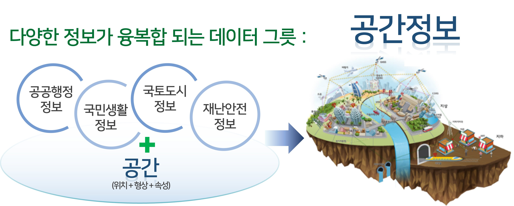
- 지상, 지하, 수상, 수중 등 공간 상에 존재하는 자연 또는 인공적인 객체에 대한 위치정보 및 이와 관련된 공간적 인지와 의사결정에 필요한 정보(공간정보산업 진흥법)
-
지리정보시스템(Geographic Information System, GIS)
- 공간적 문제를 해결하기 위해 다양한 공간자료를 수집, 구축, 유지, 관리, 편집하고 분석과 모델링을 통해 추출된 고부가가치의 정보를 표현하고 출력할 수 있게 고안된 종합적인 정보처리시스템

- 공간적 문제를 해결하기 위해 다양한 공간자료를 수집, 구축, 유지, 관리, 편집하고 분석과 모델링을 통해 추출된 고부가가치의 정보를 표현하고 출력할 수 있게 고안된 종합적인 정보처리시스템
-
지리정보시스템 자료
- 실세계에 나타나는 형상들에 대한 정확한 위치를 컴퓨터를 통해서 나타내고, 그 형상에 대한 여러 가지 속성을 컴퓨터를 통해 표현하는 것
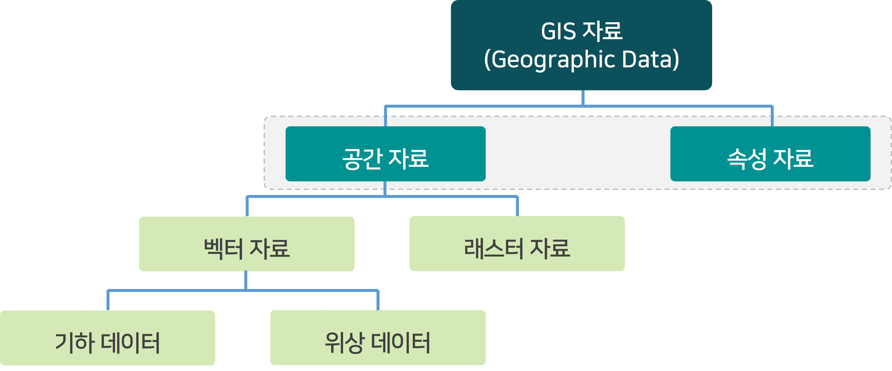
- 실세계에 나타나는 형상들에 대한 정확한 위치를 컴퓨터를 통해서 나타내고, 그 형상에 대한 여러 가지 속성을 컴퓨터를 통해 표현하는 것
2. 실세계 모델링 방법
-
객체 기반 모델(Objected-based Model)
-
도시, 건물, 고속도로와 같이 불연속적(이산적)이고 명확한 객체들로 구성된 지리적 공간을 다룸
-
확인할 수 있는 경계나 공간적인 범위를 가져야 함
-
속성으로써 참조되는 하나 이상의 특성으로 묘사될 수 있어야 함
-
객체의 특성과 기록된 축척에 따라 공간객체는 점, 선, 면이라는 공간적 요소로 표현
-
대부분 연속적인 좌표형태로 데이터가 표현되기 때문에 벡터데이터 모델(vector data model) 이라고 함
-
-
필드 기반 모델(Field-based Model)
-
불명확하고 특정한 범위가 없는 공간에서 연속적으로 변화하는 실세계 형상
-
규칙적인 격자 형태나 불규칙적인 점 데이터로 표면을 표현
-
공간단위는 공간적 현상을 묘사한 격자 형태이므로 래스터 모델(raster model)이라 함
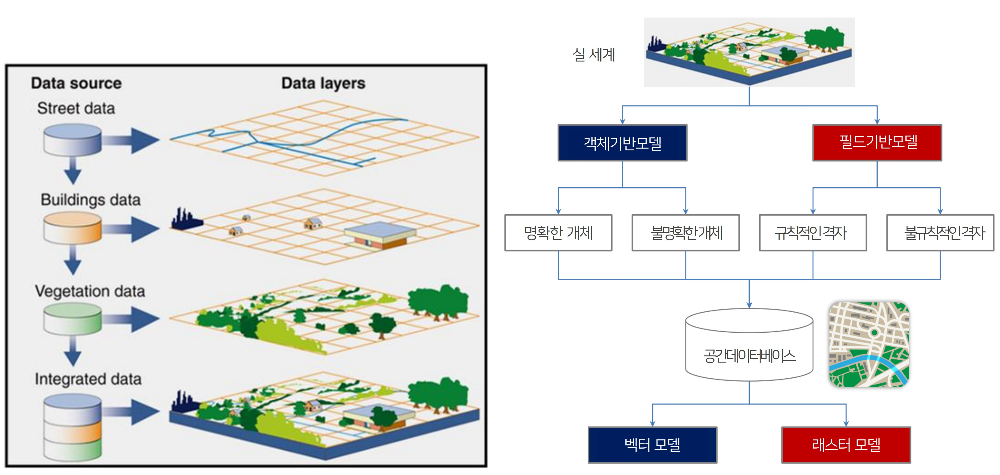
-
3. 벡터와 래스터 모델
-
벡터 vs 래스터 데이터

-
벡터 데이터의 종류
-
점(Point)
-
공간상 대상물에 대한 지점 또는 장소 표현(예: 교통사고지점, 패스트푸드점 위치 등)
-
하나의 위치 좌표(x, y)로 속성 정보가 구성됨
-
-
선(Line / Polyline)
-
실질적 또는 무형의 대상을 표현(예: 도로, 강, 행정구역 경계 등)
-
위치와 길이라는 속성을 갖는 1차원 사상으로 최소 2개의 점을 갖고 있음
-
일반적으로 각각의 점을 노드(node), 두 개의 노드를 잇는 선분을 엣지(edge)라 부름
-
-
면(Polygon)
-
대상물의 영역과 경계를 표현(예: 건물, 농업구역 등)
-
연속된 선으로 둘러싸인 2차원 객체로 크기와 둘레 정보를 가질 수 있음
⚠️ Polygon은 반드시 폐합된 다각형이어야 함

-
-
-
벡터 데이터의 파일 형식
-
Shapefile 형식
-
ESRI에서 개발한 벡터 데이터 파일 포맷으로 많은 GIS 소프트웨어에서 실질적 표준으로 사용되어 왔음
-
공간데이터를 구성하는 각각의 파일 크기는 최대 2GB로 제한
-
속성 테이블의 필드 이름은 최대 10자를 넘을 수 없고, 필드 수도 255개 이내로 제한
-
속성 테이블에서 값이 없음(null)은 0으로 기록됨
-
-
Shapefile 확장자
확장자 정보 *.dbf속성정보(피처의 속성 정보를 저장하는 dBASE 테이블) *.shp공간정보(피처의 지오메트리(형상)를 저장하는 기본 파일) *.shx공간정보색인(피처의 기하학적 색인을 저장하는 인덱스 파일) *.sbnArcGIS 지리 사상의 공간 인덱스를 바이너리 형식으로 저장하는 파일 *.sbxArcGIS spatial join 등의 기능을 수행하거나, shape 필드에 대한 인덱스를 생성 *.prj좌표체계정보 *.cpg인코딩 정보 *.qixQGIS 공간 색인 ⚠️ shp는 주 확장자이고, dbf, shp, shx는 필수 확장자로 하나라도 빠지면 안됨
-
좌표계와 SRID
1. 좌표체계의 개념
-
좌표체계의 필요성
-
모든 공간정보 자료는 정확한 위치를 가지고 있어야 함
-
좌표 정보를 이용해 임의의 점이 지표 위 어느 지점에 위치해 있는지 표현 가능
- 좌표의 원점, 거리 단위, 방향 등의 정보 필요
-
-
좌표체계의 개요
-
어떤 점의 위치를 설명하기 위한 규정의 집합
-
한 점의 위치를 표현하기 위해 사용
-
사용하는 좌표체계에 따라 좌표 값이 달라짐
- 사용하는 자료의 좌표계를 정확히 알지 못하면 동일한 대상물이 서로 다른 곳에 표시되는 문제점 발생
-
-
좌표체계의 개념
-
지표 상의 위치를 정의하기 위한 기준 프레임
-
지리좌표체계(Geographic Coordinate System)
-
3차원의 구면을 이용하는 좌표계
-
경도(Longitude)와 위도(Latitude) 값으로 위치 지정
-
지구 중심에서 지표면 상에 지점까지 측정된 각
-
-
투영좌표체계(Projected Coordinate System)
-
지리좌표를 평면 상에 투영한 좌표계
-
하나의 타원체를 투영하는데 다양한 방식의 투영법 존재
-
-
2. 지리좌표체계(Geographic Coordinate System)
-
지오이드(Geoid)
-
실제 지구모양에 가깝도록 나타낸 것
-
평균해수면을 육지까지 연장한 가상적인 면
-
중력 방향에 수직인 (등)포텐셜면
-
지구 상에서 높이를 측정하는 기준이 되는 면

-
-
타원체(Ellipse)
-
지구타원체
- 지구 모양과 가장 비슷한 형상을 가지고 있는 타원체
-
준거타원체
- 어느 지역의 측지측량계의 기준이 되는 타원체
-
국제표준타원체
- 전 세계적으로 측지측량계를 통일하기 위한 지구 타원체

- 전 세계적으로 측지측량계를 통일하기 위한 지구 타원체
-
-
지리좌표체계
-
3차원의 구면을 이용하는 좌표계

-
3. 투영좌표체계(Projected Coordinate System)
-
투영(Projection)
-
3차원의 타원체에 그려진 경위도 선을 평면(2차원)의 지도에 나타낼 수 있도록 체계적으로 변환하는 것
-
지표면(3차원)에 위치한 객체의 형상과 면적, 거리, 방향 등을 2차원의 지도에서 그대로 정확하게 나타내는 것은 불가능
-
지도 제작 시에 고려해야 하는 요소
-
정형성: 지도 상에서의 모양이 지표면 상의 실제 모양과 동일한가?
-
정적성: 지도 상에서의 면적이 지표면 상의 실제 면적과 같은 비례로 나타나는가?
-
정거성: 지도 상에서 두 지점들 간의 거리가 지표면과 같은 관계를 유지하는가?
-
-
지구본과 같은 3차원의 구체(또는 타원체)를 평면으로 투영하게 되면 이러한 특성이 왜곡되어 나타남
-
-
투영법
-
3차원인 지구를 2차원 평면으로 펼칠 때 어떤 기하학적 곡면(투영면)을 사용하는 지에 따라 분류
-
원통도법(Cylindrical Projection)
-
적구나 특정 표준위선을 따라 지구를 둘러싼 원통면에 투영한 뒤 펼침
-
대표적인 예: 메르카토르, TM(횡축 메르카토르), UTM

-
-
원추도법(Conic Projection)
-
지구본 위에 원뿔을 씌운 형태로 투영한 뒤 펼침
-
대표적인 예: 람베르트 정각원추, 알버스 정적원추
-
-
방위도법(Azimuthal / Planar Projection)
-
지구의 한 점(주로 극지방이나 특정 지점)에 평면을 접하게 하여 투영
-
대표적인 예: 정거방위, 정사, 평사, 심사
-
-
-
평면직각 좌표계
-
평면의 2차원상에서 공간정보의 위치를 표현하기 위한 방법
-
X축과 Y축이 원점(0, 0)을 중심으로 직각으로 만나고 원점에서 떨어진 거리로 좌표를 표현
-
좌푯값이 양수와 음수 모두 가질 수 있으므로 경우에 따라 가산값을 부여하여 양수화

-
4. 우리나라의 좌표체계
-
세계측지계 사용
-
세계측지계(ITRF계 GRS80 타원체)와 한국측지계(동경데이텀)를 병행 사용하다가 2010년 1월 1일부터 세계측지계의 사용을 의무화
-
동경측지계: 타원체 Bessel1841, 적도반경 6,377,397.155m, 극반경 6,378,137.000m
-
세계측지계: 타원체 GRS80, 적도반경 6,377,137.000m, 극반경 6,356,752.341m

-
-
-
공공측량의작업규정세부기준

5. 공간참조체계
-
공간참조체계의 개념
-
타원체, 좌표체계(직각, 경위도), 투영법이 조합되어 하나의 공간참조체계(Spatial Reference System, SRS)를 구성
- 공간참조식별자(Spatial Reference Identifiers, SRID) 또는 좌표참조체계(Coordinate Reference Systems, CRS)라고도 함
-
EPSG(European Petroleum Survey Group)*에서 전 세계의 다양한 좌표계를 표준 코드화 하여 3~6자리의 숫자인 코드로 관리하여 공개
- 우리나라에서 사용되는 공간참조체계의 구체적인 정의는 https://epsg.io에서 확인 가능
-
-
우리나라에서 사용되는 좌표체계
| EPSG 코드 | 우리말 이름 | 영문 이름 |
|---|---|---|
| 4326 | WGS84 경위도 | WGS84 |
| 5178 | UTM-K(Bessel) | Korean 1985 / Unified CS |
| 5179 | UTM-K(GRS80) | KGD2002 / Unified CS |
| 5173 | 보정된 서부 | Korean 1985 / Modified West Belt |
| 5173 | 보정된 중부 | Korean 1985 / Modified Central Belt |
| 5173 | 보정된 제주 | Korean 1985 / Modified Jeju Belt |
| 5173 | 보정된 동부 | Korean 1985 / Modified East Belt |
| 5173 | 보정된 동해(울릉)원점 | Korean 1985 / Modified East Sea Belt |
| 5185 | 서부원점 | KGD 2002 / West Belt 2010 |
| 5186 | 중부원점 | KGD 2002 / Central Belt 2010 |
| 5187 | 제주원점 | KGD 2002 / East Belt 2010 |
| 5188 | 동부원점 | KGD 2002 / East Sea Belt 2010 |
PostGIS와 공간 데이터베이스
1. 공간 자료의 특징
-
비정형성
-
각 공간 개체의 내용 및 구조가 개체 형식에 따라 다르게 표현
-
같은 형식 간에도 점의 개수 및 서브 개체의 개수 등에 의하여 다른 형태와 길이를 가짐
-
-
대용량성
- 일부 공간데이터의 경우 DBMS의 한 페이지를 넘는 크기를 가질 수 있음
2. 공간데이터베이스의 특성
-
자료의 크기와 복잡성
-
공간 데이터는 위치 정보를 갖는 도형자료와 그 도형의 특성을 나타내는 속성정보로 구성
-
자료의 양이 클뿐만 아니라 위상 정보를 갖는 만큼 자료의 구조도 복잡함
-
-
공간 전용 질의 및 인덱싱
-
일반 데이터베이스에서 다루지 않는 공간 형식의 데이터를 처리하므로 이에 적합한 함수가 존재
-
이를 이용한 공간 전용 질의가 가능하며, 질의 효율을 높이기 위한 공간 전용 인덱싱 기법이 적용
-
현재 위치에서 가장 가까운 병원은 어디인가?
-
서울특별시의 면적은 얼마인가?
-
서울특별시를 지나는 도로의 길이는 몇 km인가?

-
-
3. 공간데이터베이스의 구성 요소
-
구성요소
- 공간 데이터 모델, 공간 참조 시스템, 공간 데이터 전용 질의, 공간 인덱스
-
공간 전용 질의
-
SQL을 이용하는 방식과 거의 동일하게 공간 질의어를 이용 가능
-
공간 질의의 종류는 데이터 정의어(DDL)와 공간 데이터 관련 함수로 구성
-
데이터 정의어를 이용한 공간 질의
-
테이블을 생성하고, 인덱스를 생성하는 부분은 일반 데이터베이스와 동일하지만, GEOMETRY 형식의 컬럼 생성
-
GEOMETRY 칼럼에는 점, 선, 면 등으로 정의된 데이터 모델을 따르는 공간 데이터가 저장
-
-
공간 데이터 관련 함수
-
SELECT, INSERT, UPDATE, DELETE 등의 질의를 수행할 때 공간 데이터는 공간 함수와 같이 쓰는 경우가 대부분
-
공간 데이터 변환, 좌표 변환, 면적 계산, 거리 계산, 인접한 개체 탐색 등 공간 데이터와 관련된 수 많은 함수를 공간 데이터베이스에서 지원
-
-
-
공간 인덱스
-
공간 데이터 전용 질의를 수행하기 위해서는 효율적으로 데이터에 접근할 수 있는 기법 필요
-
저장된 많은 양의 공간 데이터에 대하여 실제 처리해야 할 개체의 집합을 줄이는 효율적인 공간 접근 방법(Spatial Access Method, SAM) 개발
- 공간 접근 방법: 공간 인덱스를 사용하여 공간 질의에 대하여 처리될 개체의 수를 줄이고자 하는 방법

- 공간 접근 방법: 공간 인덱스를 사용하여 공간 질의에 대하여 처리될 개체의 수를 줄이고자 하는 방법
-
4. PostGIS 소개
-
PostGIS란
-
PostgreSQL의 공간 기능을 추가하는 확장(Extension)
-
PostgreSQL이 공간데이터베이스의 역할을 할 수 있도록 해주며 다양한 장점을 가짐
- 다양한 공간 함수와 연산 제공, 복잡한 쿼리와 분석 지원, 대규모 데이터셋에서도 높은 성능
-
공간데이터베이스의 세 가지 핵심 요소(공간 형식, 공간 인덱스, 공간 함수)를 PostgreSQL에 추가
-
공간 자료형: geometry(평면), geography(구면, 위경도 기반), raster
-
공간 함수 : 300개 이상 (ST_로 시작)
-
공간 인덱스: GiST 인덱스로 빠른 검색
-
좌표계 변환: 수천 개 좌표계 내장
-
-
-
PostGIS 메타 정보
| 이름 | 역할 |
|---|---|
| spatial_ref_sys | 좌표계 정의 목록 |
| geometry_columns | 어떤 테이블의 어떤 컬럼이 geometry인지 목록 |
5. SQL 기초 5분 복습
| DB 용어 | 엑셀 비유 |
|---|---|
| 데이터베이스(DB) | 엑셀 파일 모음 폴더 |
| 스키마(schema) | 폴더 안의 하위 폴더 |
| 테이블(table) | 시트 |
| 행(tuple), 열(attribute) | 행 / 열 |
| 기본키(PK) | 행마다 고유한 번호 |
| SQL | 데이터를 묻고 고치는 언어 |
-- 연습용 테이블
CREATE TABLE edu.sample_place (
id serial PRIMARY KEY,
name text,
kind text,
geom geometry(Point, 4326)
);
INSERT INTO edu.sample_place (name, kind, geom) VALUES
('서울시청', '관공서', ST_SetSRID(ST_MakePoint(126.9784, 37.5666), 4326)),
('경복궁', '관광지', ST_SetSRID(ST_MakePoint(126.9770, 37.5796), 4326)),
('남산타워', '관광지', ST_SetSRID(ST_MakePoint(126.9882, 37.5512), 4326));
SELECT * FROM edu.sample_place; -- 전체
SELECT name FROM edu.sample_place WHERE kind = '관광지'; -- 조건
SELECT kind, count(*) FROM edu.sample_place GROUP BY kind;-- 집계
SELECT name, ST_AsText(geom) FROM edu.sample_place; -- 공간 → 텍스트
| SQL 문장 | 의미 |
|---|---|
SELECT … FROM | 무엇을 어디서 가져올까 |
WHERE | 조건 |
GROUP BY | 묶어서 집계 |
ORDER BY … LIMIT | 정렬, 상위 n개 |
JOIN … ON | 두 테이블 연결 |
공간정보와 공간 데이터베이스 확인 퀴즈
정답은 각 문제 아래 정답 보기를 눌러 확인하세요.
A. 객관식
Q1. 공간정보를 가장 정확하게 설명한 것은?
① 지도 이미지 파일 ② 위치 정보와 속성 정보의 결합 ③ 위성사진 ④ 좌표 숫자만 담긴 표
정답 보기
② 공간정보는 “어디에(위치)“와 “무엇인가(속성)“가 결합된 정보입니다.
Q2. 다음 중 래스터 데이터에 해당하는 것은?
① 병원 위치 점 ② 도로 중심선 ③ 위성사진 ④ 행정구역 경계
정답 보기
③ 나머지는 점·선·면으로 표현되는 벡터입니다.
Q3. 한 행정동이 강 때문에 두 덩어리로 나뉘어 있어도 테이블에서 한 행으로 저장하려면 알맞은 타입은?
① POINT ② LINESTRING ③ POLYGON ④ MULTIPOLYGON
정답 보기
④ Multi 타입은 여러 부분을 한 개체(한 행)로 묶어 줍니다.
Q4. Shapefile을 복사할 때 최소한 함께 있어야 하는 파일 조합은?
① .shp 만
② .shp .shx .dbf
③ .shp .csv
④ .dbf .xlsx
정답 보기
② 도형(.shp), 인덱스(.shx), 속성(.dbf)이 필수이고, 좌표계(.prj)·인코딩(.cpg)도 함께 두는 것이 안전합니다.
Q5. 거리와 면적을 미터 단위로 바로 계산하기에 적합한 좌표계는?
① EPSG:4326 ② EPSG:5186 ③ 도·분·초 표기 ④ GPS 경위도
정답 보기
② 5186은 투영좌표계(단위: m)입니다. 4326은 단위가 “도“입니다.
Q6. PostGIS를 가장 알맞게 설명한 것은?
① QGIS의 플러그인
② PostgreSQL에 공간 기능을 더하는 확장
③ 지도 배경 서비스
④ 새 프로그래밍 언어
정답 보기
②
Q7. DB 용어와 엑셀 비유의 연결이 틀린 것은?
① 테이블 – 시트
② 행 – 행
③ 스키마 – 시트 안의 셀
④ 기본키 – 행마다 고유한 번호
정답 보기
③ 스키마는 테이블을 묶는 “하위 폴더“에 가깝습니다.
Q8. 다음 중 PostGIS가 더해 주는 것이 아닌 것은?
① geometry 자료형
② ST_ 공간 함수
③ 공간 인덱스
④ 지도 스타일링(색 칠하기) 화면
정답 보기
④ 지도 표현은 QGIS의 역할입니다.
B. O/X
Q9. 서로 다른 SRID의 도형은 그대로 거리 계산을 할 수 있다. (O/X)
정답 보기
X — mixed SRID 오류가 발생합니다. 한쪽을 변환해서 맞춥니다.
Q10. geometry_columns에서 테이블별 SRID와 도형 타입을 조회할 수 있다. (O/X)
정답 보기
O
C. 단답·서술
Q11. “병원 테이블“을 엑셀 표로 상상할 때, 일반 표와 다른 열 한 가지는 무엇이며 어떤 값이 들어가나요?
모범답안
도형(geom) 열. 점·선·면 같은 위치 정보가 저장된다. 이 열 덕분에 지도에 그리거나 거리·면적을 계산할 수 있다.
Q12. Shapefile+엑셀 대신 PostGIS를 쓰면 좋은 점 세 가지를 쓰시오.
모범답안(예시)
① 대용량 데이터를 인덱스로 빠르게 처리 ② 여러 사람이 동시에 접근 ③ 분석 과정이 SQL로 기록되어 재현 가능 ④ 속성·공간 결합이 한 쿼리로 가능 ⑤ 컬럼명 길이 제한 없음
QGIS와 PostGIS 연계
공간 데이터베이스 생성
1. 실습 자료
-
필요한 프로그램
-
PostgreSQL: 데이터베이스 서버
-
PostGIS: PostgreSQL에 공간데이터 타입과 함수를 추가하는 확장
-
QGIS: 공간데이터 조회와 지도 시각화
-
pgAdmin(또는 DBeaver): SQL 실행 도구
-
-
실습 자료 목록
| 파일이름 | 설명 | 유형 | SRID | 인코딩 |
|---|---|---|---|---|
| dong | 동 행정구역도 | Multipolygon | 5186 | EUC-KR |
| road | 도로망도 | Multilinestring | 5179 | UTF8 |
| park | 주요공원 | point | 4326 | EUC-KR |
2. 실습 환경 설정
-
공간데이터베이스 생성
-
새로운 데이터베이스를 생성하기 위해 Databases를 선택하고 마우스 오른쪽 클릭하여 Create > Database를 선택
-
Database: gis
-
Owner: postgres

-
-
-
Postgis 설치
-
생성된 데이터베이스에서 Extentions > Create > Extension을 선택하여 Postgis를 설치
- Name: postgis
Query Tool > CREATE EXTENSION postgis;로도 설치 가능

-
Postgis 확장 모듈이 정상적으로 추가되었는지 확인을 위해 Query Tool > SELECT postgis_version() 입력 후 실행 버튼(또는 F5) 클릭

-
3. QGIS 개요
-
OSGeo(Open Source Geospatial Foundation)
-
지리공간기술과 데이터의 공개 협업 개발을 지원하고 알리기 위한 비영리, 비정부 단체
-
지리공간 분야의 오픈 소프트웨어와 오픈소스 개발을 폭넓게 재정적, 조직적, 법적으로 지원하기 위해 2006년 2월 4일 미국 시카고에서 창설
-
-
오픈소스 소프트웨어(FOSS, Free and Open Source Sofrware)
-
특정 라이선스에 따라 소프트웨어의 소스코드가 공개되어 있음
-
소프트웨어에 대한 자유로운 이용, 복사, 수정 및 재배포의 권한을 부여 받음
-
Freedom of Use
-
Freedom of Copy
-
Freedom of Modify
-
Freedom of Redistribute
-
-
사용 시 발생하는 문제는 저작자가 아닌 사용자의 책임
-
사용 후 생상된 데이터 등은 사용자에게 권한이 있음

-
-
QGIS 설치 및 실행
-
QGIS 공식 홈페이지(http://qgis.org)로 접속하여 Download 버튼 > Skip it and go to download > Long Term Version for Windows를 클릭
- 장기지원버전(Long Term Release) 버전은 1년 이상 계속적인 업데이트를 하는 버전
-
다운로드 폴더 내 설치파일(QGIS-OSGeo4W-버전.msi)을 더블 클릭하여 실행
- 별다른 특이사항 없이 [Next] 버튼 클릭하여 설치 진행
-
시작메뉴에서 QGIS Desktop 버전 또는 바탕화면의 QGIS 버전 폴더에서 QGIS Desktop 버전을 클릭
-
GRASS GIS 버전: Geographic Resources Analysis Support System
-
OSGeo4W Shell: 오픈소스 GIS 프로젝트에 사용하는 윈도우 활용 쉘
-
SAGA GIS 9.3.1: System for Automated Geoscientific Analyses
-
-
공간데이터 적재하기
1. 공간데이터 적재 방법
| 방법 | 특징 | 추천 |
|---|---|---|
| ogr2ogr(GDAL) | 명령 한 줄, 일괄 처리 | 반복 작업 |
| shp2pgsql(PostGIS) | SQL 파일 생성 | 이식성 |
| QGIS DB Manager 가져오기 | 클릭 중심, 초보자 친화 | 수업 기본 |
2. PostGIS 이용 방법
-
PostGIS Bundle을 실행하여 View connection details 클릭 후 다음 정보 입력
-
Username: postgres
-
Password: postgis
-
Database: gis
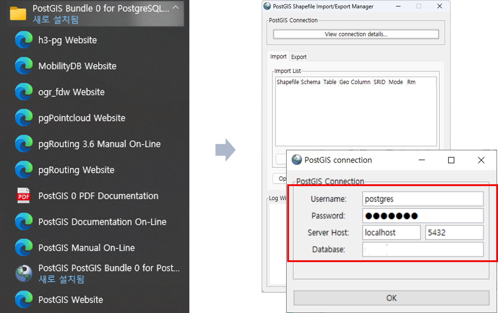
-
-
OK 버튼 클릭 후 Connection succeeded 메세지 확인
PostGIS Bundle은 공간 데이터인 Shapefile을 SQL로 변환해주는 기능
-
Options에서 Encoding을 설정하고, Add File 버튼을 클릭하여 실습 자료를 선택
- Data 폴더에서 road, sigungu, park 파일 선택
만약 인코딩 정보가 다르다면 같은 것끼리 추가하여 import한 후 재추가 해야 함

- Data 폴더에서 road, sigungu, park 파일 선택
-
불러온 공간자료의 좌표계를 설정하지 위해 SRID 부분을 더블클릭하여 EPSG 코드번호를 입력
- pgAdmin으로 돌아와 gis > Schemans > public > Tables 밑에 공간데이터가 추가된 것을 확인
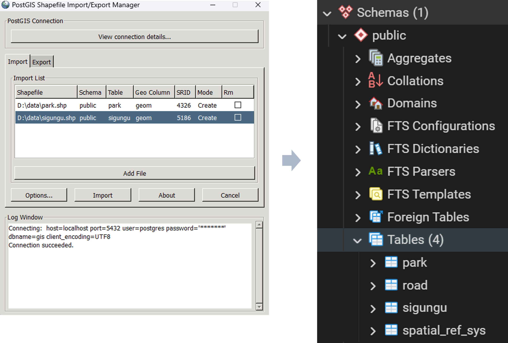
- pgAdmin으로 돌아와 gis > Schemans > public > Tables 밑에 공간데이터가 추가된 것을 확인
-
공간데이터를 선택하고 마우스 오른쪽 클릭하여 View/Edit Data > All Rows로 데이터 확인
- Geometry 컬럼에서 지도 모양의 아이콘을 클릭하여 OpenStreetMap과 중첩해서 보기 가능

- Geometry 컬럼에서 지도 모양의 아이콘을 클릭하여 OpenStreetMap과 중첩해서 보기 가능
QGIS로 공간데이터 적재하기
1. QGIS에서 PostGIS 연결하기
-
PostGIS 공간 테이블 레이어로 불러오기
- QGIS 탐색기에서 PostgreSQL 항목에서 새연결 클릭
-
이름: QGIS로 불러온 후 지정할 데이터베이스 이름
-
호스트: localhost
-
데이터베이스: 연결할 PostgreSQL 데이터베이스 이름
-
사용자이름: postgres
-
비밀번호: postgis
-
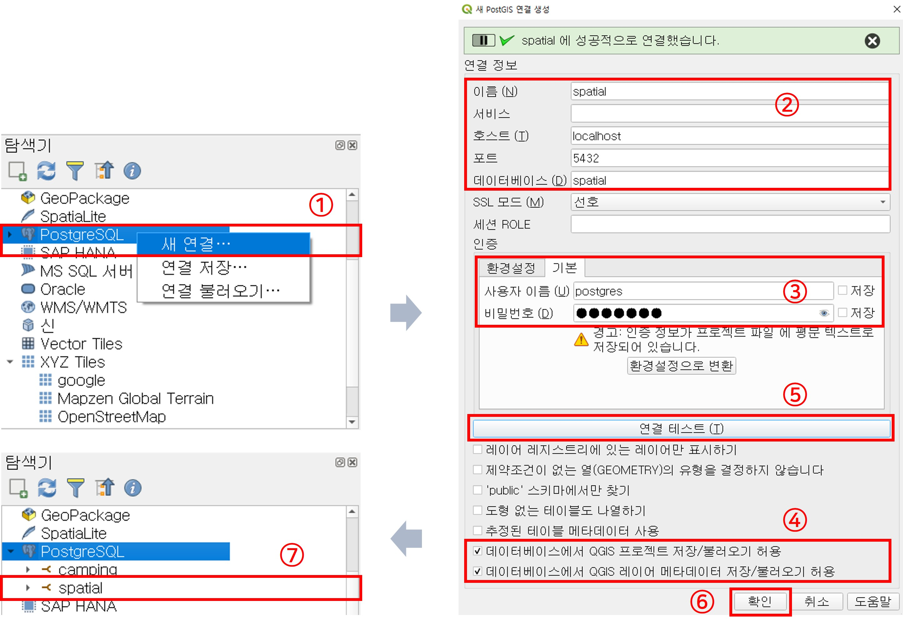
연결테스트 후 성공적으로 연결했습니다라는 메세지가 떠야 정상 작동 상태
- 연결된 데이터베이스에서 공간데이터를 더블클릭하여 자료 확인
- QGIS 탐색기에서 PostgreSQL 항목에서 새연결 클릭
2. 공간자료 불러오기
-
공간자료 불러오는 방법
- 메뉴 바에서 레이어 > 레이어 추가 > 레이어 타입을 선택
- 탐색기 패널에서 맵으로 드래그
- 윈도우 탐색기 폴더에서 데이터(*.shp)를 직접 맵으로 드래그
-
스프레드시트 파일 불러오는 방법
- 메뉴 바에서 레이어 > 레이어 추가 > 구분자로 분리된 텍스트 레이어 추가로 스프레드시트 파일 불러오기
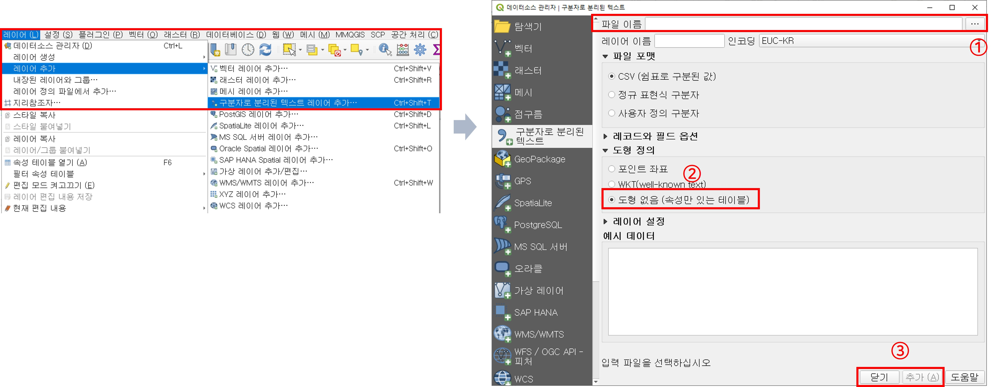
탐색기 패널에서 불러와도 되지만 원본 데이터 형식이 깨질 수 있음
3. QGIS와 PostGIS 연계
-
PostGIS 데이터베이스로 자료 넣기
-
메뉴에서 데이터베이스 > DB 관리자를 선택하고 사용자 이름과 비밀번호를 입력
- DB 관리자 창에서 PostGIS > 데이터베이스 이름 선택 시 연결 상세 정보 창이 뜨면 성공
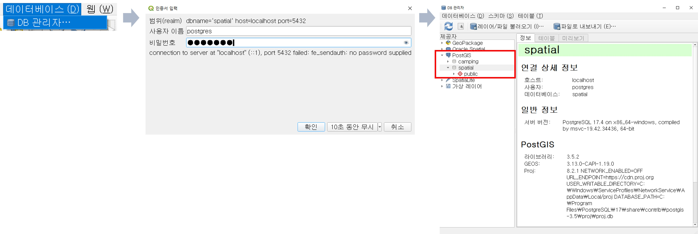
- DB 관리자 창에서 PostGIS > 데이터베이스 이름 선택 시 연결 상세 정보 창이 뜨면 성공
-
DB 관리자 창에서 레이어/파일 불러오기 버튼을 클릭하고 상세 정보 입력 후 확인 버튼 클릭
- 가져오기 성공했다는 팝업창 확인하고 창 닫기
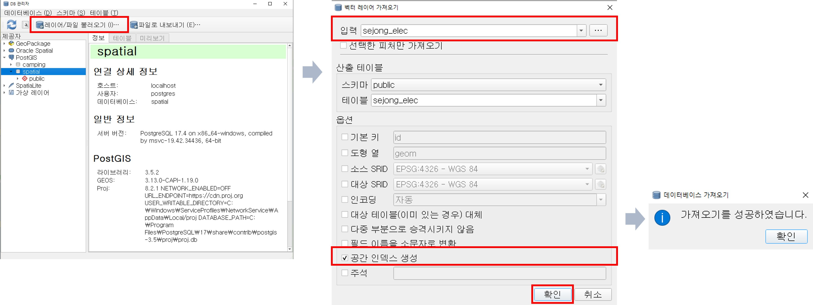
- 가져오기 성공했다는 팝업창 확인하고 창 닫기
-
pgAdmin으로 돌아와서 gis 데이터베이스 밑에 owner 테이블이 생성된 것을 확인
-
✏️ 직접 해 봅시다.
- QGIS에서 실습폴더의 다음 자료를 PostgreSQL 데이터베이스(gis)에 넣어 봅시다.
- yang_building, yang_flood
정답

QGIS와 PostGIS 연계 확인 퀴즈
정답은 각 문제 아래 정답 보기를 눌러 확인하세요.
A. 객관식
Q1. PostGIS가 켜졌는지 확인하는 쿼리는?
① SELECT PostGIS_Full_Version();
② SELECT * FROM postgis;
③ DROP EXTENSION postgis;
④ SHOW geometry;
정답 보기
① 확장을 켜는 명령은 CREATE EXTENSION postgis; 입니다.
Q2. QGIS에 대한 설명으로 틀린 것은?
① 누구나 공식 홈페이지에 접속하면 프로그램을 다운로드할 수 있다.
② 오픈소스 데스크탑 지리정보시스템 중 하나이다.
③ 사용자는 프로그램에 있는 기능을 수정할 수 없다.
④ 사용 시 발생하는 문제는 사용자에게 책임이 있다.
정답 보기
③
Q3. Shapefile을 DB에 적재했더니 한글이 ???로 보인다. 가장 먼저 시도할 조치는?
① 컴퓨터 재부팅
② 적재 시 인코딩을 바꿔 다시 적재
③ 테이블 삭제 후 포기
④ SRID를 4326으로 변경
정답 보기
②
Q4. QGIS DB Manager로 면 레이어를 가져올 때 “단일 도형을 멀티로 변환“을 체크하는 이유는?
① 파일 용량 감소
② 한 레이어에 POLYGON과 MULTIPOLYGON이 섞여 생기는 오류 방지
③ 속도 향상
④ 좌표계 변환
정답 보기
② 도형 타입을 하나로 통일해야 테이블 컬럼 타입(MultiPolygon)과 충돌하지 않습니다.
Q5. 엑셀의 PNU(19자리)를 CSV로 저장할 때 가장 중요한 준비는?
① 열 너비를 넓힌다.
② 해당 열을 텍스트 서식으로 한다.
③ 파일명을 영문으로 바꾼다.
④ 시트를 숨긴다.
정답 보기
② 숫자로 인식되면 지수표기(1.11E+18)로 깨져 복구할 수 없습니다.
B. O/X
Q6. QGIS 프로젝트(.qgz)에는 DB의 실제 데이터가 함께 저장된다. (O/X)
정답 보기
X — 프로젝트는 연결 정보와 스타일만 가지고, 데이터는 DB에 있습니다.
Q7. QGIS 화면에서 레이어 좌표계가 달라 보여도, DB 안의 SQL 연산은 자동으로 변환해 준다. (O/X)
정답 보기
X — 화면 표시만 변환됩니다. SQL에서는 ST_Transform을 직접 써야 합니다.
PostGIS 공간함수
지오메트리 생성 함수
1. 기하 데이터의 이해
-
기하 데이터의 개념
- 공간객체를 표현하는 점, 선, 면을 도형(geometry)이라 부름
- 벡터 데이터에 대한 위치, 면적, 길이 등 특성 정보 추출 가능
-
기하 데이터의 종류
-
OpenGIS(OGC) 표준 사양을 기반으로 다양한 공간 기하 데이터 타입을 지원
- 크게 기본(단일) 도형, 멀티(복합) 도형, 곡선이 포함된 도형, 3차원/ 복합 구조체 등으로 구분
-
기본 기하 데이터 타입(Single Geometries)
-
점(Point): 공간 상의 단일 지점 좌표(X, Y)
-
선(LineString): 두 개 이상의 점이 연결된 연속된 선
-
면(Polygon): 폐합된 형태를 가지는 다각형
-
-
멀티 기하 데이터 타입(Multi-Geometries)
-
멀티 점(MultiPoint): 여러 개의 점을 하나의 단위로 묶은 것
-
멀티 선(MultiLineString): 여러 개의 선을 하나의 단위로 묶은 것
-
멀티 면(MultiPolygon): 여러 개의 폴리곤을 하나의 단위로 묶은 것
-
Polygon과 Multipolygon은 하나의 객체(feature)가 몇 개의 독립된 영역으로 이루어져 있는가로 구분

-
2. 기하 데이터의 표기법
-
표준 방법
- WKT(Well-Known Text)
- 공간 객체를 미리 정의된 형식의 문자열로 나타내는 것
※ 예시
- 좌표가 (0,0)인 점 데이터: POINT
- (0, 0)(0,0), (1,1), (2,2) 세 점을 연결한 선 데이터: LINESTRING(0 0, 1 1, 2 2)
- 내부에 빈 공간을 포함하는 면 데이터: POLYGON((0 0, 4 0, 4 4, 0 0), (1 1, 2 1, 1 2, 1 1))
- 두 점의 집합: MULTIPOINT(0 0, 1 2)
- 점과 선의 집합: GEOMETRYCOLLECTION(POINT(2 3), LINESTRING(2 3, 3 4))- WKB(Well-Known Binary)
- 공간 객체를 미리 정의된 형식의 바이너리(16진수)로 나타내는 것
※ 예시
POINT(2 4): 000000000140000000000000004010000000000000
- 00: 바이트 배열 순서를 정의하는 값
- 00000001: 데이터의 종류가 POINT 데이터라는 것을 정의하는 값
- 4000000000000000: 점의 X좌표가 2라는 것을 의미하는 값
- 4010000000000000: 점의 Y좌표가 4라는 것을 의미하는 값 - WKT(Well-Known Text)
3. 기하 데이터 생성함수
-
💻 ST_MakePoint
-
좌표(x, y)를 입력받아 점 데이터를 생성하는 함수
-
실수형(double)의 X, Y 좌표값을
,로 구분하여 입력
ST_MakePoint만으로는 SRID가 0이라 좌표계를 별도로 선언해야 함
SELECT ST_MakePoint(127.289, 36.480); SELECT ST_MakePoint(127.262, 36.502); -
-
💻 ST_MakeLine
-
점을 입력받아 선 데이터를 생성하는 함수
-
선 데이터는 점으로 구성되기 때문에 점의 집합으로 입력
SELECT ST_MakeLine( ST_MakePoint(127.261, 36.504), ST_MakePoint(127.260, 36.502) ); -
-
💻 ST_MakeEnvelope
-
좌표(x, y)를 입력받아 면(다각형) 데이터를 생성하는 함수
-
가장 작은 좌표(좌측 하단 xmin, ymin)와 가장 큰 좌표(우측 상단 xmax, ymax)를 입력
SELECT ST_MakeEnvelope( 0, 0, 100, 50 ); -
-
💻 ST_GeomFromText
-
WKT 형태로 지정된 기하 데이터를 geometry 형식의 기하 데이터로 변환해 주는 함수
-
두 번째 인자는 SRID, 생략하면 SRID = 0(미지정)
WKT는 쉼표로 점을 구분, 한 점의 X와 Y는 공백으로 구분
SELECT ST_GeomFromText('POINT(127.289 36.480)', 4326); SELECT ST_GeomFromText('LINESTRING(127.261 36.504, 127.260 36.502)', 4326); SELECT ST_GeomFromText('POLYGON((127.268 36.499, 127.268 36.499, 127.268 36.498, 127.267 36.498, 127.268 36.499))', 4326); -
✏️ 직접 해 봅시다.
- 다음 좌표 정보를 이용해서 점 포인트를 생성해 봅시다.
- 고용노동부 좌표정보: 127.2618, 36.5014
- 좌표계도 설정할 것
정답
SELECT ST_GeomFromText('POINT(127.261 36.501)', 4326);
- 아래와 같은 테이블을 만들고, location 필드에 점 기하데이터를 넣어 봅시다.
- 테이블 이름: ex_01
- 필드 정보: name(이름), location(공간정보자료)
- 고용노동부: 127.2618, 36.5014, 국가보훈처: 127.2614, 36.5032
정답
CREATE TABLE ex_01 (
name varchar(20),
location geometry(MULTIPOINT, 4326)
);
INSERT INTO ex_01(name, location)
VALUES('고용노동부', 'POINT(127.2618 36.5014)');
INSERT INTO ex_01(name, location)
VALUES('국가보훈처', 'POINT(127.2614 36.5032)');
- 아래와 같은 테이블을 만들고, location 필드에 점 기하데이터를 넣어 봅시다.
- 테이블 이름: ex_02
- 필드 정보: name(이름), location(공간정보자료)
- 대통령기록관: 127.2730 36.5017, 127.2734 36.5016, 127.2733 36.5013, 127.2729 36.5014
- 홍보관: 127.2706 36.5002, 127.2713 36.5006, 127.2716 36.5002, 127.2709 36.4999
정답
CREATE TABLE ex_03(
name varchar(20),
location geometry(MULTIPOLYGON, 4326)
);
INSERT INTO ex_03(name, location)
VALUES('대통령기록관', 'POLYGON((127.2730 36.5017, 127.2734 36.5016, 127.2733 36.5013, 127.2729 36.5014, 127.2730 36.5017))');
INSERT INTO ex_03(name, location)
VALUES('홍보관', 'POLYGON((127.2706 36.5002, 127.2713 36.5006, 127.2716 36.5002, 127.2709 36.4999, 127.2706 36.5002))');
좌표계 함수
1. 함수 종류
- 좌표계를 조회 · 선언 · 변환하는 함수를 구분해서 사용해야 함
| 함수 | 기능 | 비고 |
|---|---|---|
| ST_SRID(g) | 현재 SRID를 읽기 | 좌표값 확인 |
| ST_SetSRID(g, srid) | SRID 라벨을 다시 붙이기 | 좌표값 설정 |
| ST_Transform(g, srid) | 다른 좌표계로 좌표를 실제 변환 | 좌표값이 바뀜 |
2. 함수별 사용법
-
💻 ST_SRID
- 기하 데이터의 좌표계 정보를 확인하는 함수
-- 생성되어 있는 모든 기하 데이터의 좌표계 번호 출력 SELECT * FROM geometry_columns; -- 기하 데이터의 모든 객체에 대한 좌표계 번호 출력 SELECT ST_SRID(geom) FROM park LIMIT 1; -
💻 ST_SetSRID
- 기하 데이터의 좌표계를 정의하는 함수
-- 기하 데이터 생성 시 SRID를 입력하지 않으면 0 SELECT ST_MakePoint(127.289, 36.480); -- 기하 데이터 생성하고 ST_SetSRID로 좌표계 설정 SELECT ST_SetSRID(ST_MakePoint(127.289, 36.480), 4326); --- 간단버전 SELECT ST_Point(127.289, 36.480, 4326); -
💻 ST_Transform
- 기하 데이터의 원본 좌표계를 다른 좌표계로 변환하는 함수
--- 기하 데이터 생성 시 좌표계 설정하고 변환 가능 SELECT ST_Transform(ST_SetSRID(ST_MakePoint(127.289, 36.480), 4326), 5186)); --- 생성되어 있는 테이블에서 좌표계 변환 시 주의 필요 SELECT ST_Transform(location, 3857) FROM ex_01; SELECT ST_SRID(location) FROM ex_01 --- ALTER TABLE은 이미 생성된 테이블의 구조를 변경할 때 사용 --- 컬럼을 추가, 삭제, 수정하거나 제약 조건을 변경 가능 ALTER TABLE ex_01 ALTER COLUMN location TYPE geometry(MULTIPOINT, 3857) USING ST_Transform(location, 3857); SELECT ST_SRID(location) FROM ex_01; --- 원본은 보존하고 새로운 테이블을 만들 때 CREATE TABLE ex_01_re AS SELECT name, ST_Transform(location, 4326)::geometry(MULTIPOINT, 4326) AS geom FROM ex_01; --- 좌표계 정보 확인 SELECT ST_SetSRID(geom) FROM ex_01_re
✏️ 직접 해 봅시다.
- 기하 데이터의 좌표계를 설정하고 변환을 해 봅시다.
- 대상 기하 데이터: dong
- 메타데이터 상 좌표정보: EPSG5186
- 변환 대상 좌표정보: EPSG5179
정답
--- 좌표계 설정
ALTER TABLE dong
ALTER COLUMN geom TYPE geometry(MULTIPOLYGON, 5186)
USING ST_SetSRID(geom, 5186);
--- 좌표계 정보 확인
SELECT ST_SRID(geom) FROM dong;
- 기하 데이터의 좌표계를 확인하고 변환을 해 봅시다.
- 대상 기하 데이터: park, road
- 변환 대상 좌표정보: EPSG5186
정답
--- 좌표계 변환
ALTER TABLE park
ALTER COLUMN geom TYPE geometry(POINT, 5186)
USING ST_Transform(geom, 5186);
--- 좌표계 정보 확인
SELECT ST_SRID(geom) FROM park;
--- 좌표계 변환
ALTER TABLE road
ALTER COLUMN geom TYPE geometry(MULTILINESTRING, 5186)
USING ST_Transform(geom, 5186);
--- 좌표계 정보 확인
SELECT ST_SRID(geom) FROM road;
측정 함수
1. 측정 방식
-
거리 측정 방식
-
Euclidean 거리: 직선거리, 피타고라스 정리 이용
-
Manhattan 거리: 직각거리
-
Minkowski 거리: p라는 계수를 통해 조정한 거리
-
Network 거리: 실제 도로망, 수계망 등을 포함한 네트워크 상에서 두 지점을 연결하는 최소거리/시간

-
-
측지학(Geodesic) 거리
-
구면 위에서 직선의 구실을 하는 두 지점 사이의 거리(지오이드 상에서의 거리)
-
측지학 거리가 평면(planar) 방식보다 일정한 크기를 가짐
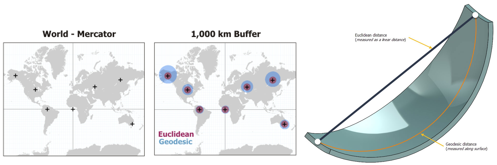
-
-
가우스(Gauss) 면적 공식
- 좌표평면 상에서 꼭지점의 좌표를 알 때 다각형의 면적을 구할 수 있는 방법
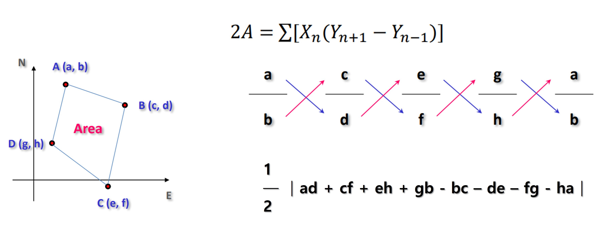
2. 함수 종류
-
기하 데이터가 가지고 있는 형상 정보를 바탕으로 위치정보, 면적, 길이 등을 계산
-
기하 데이터에 설정되어 있는 좌표계에 따라 결과값의 단위가 결정
-
미터 단위의 결과 값이 필요하다면 적정한 투영좌표계로의 변환 필요
| 함수 | 대상 | 단위 |
|---|---|---|
| ST_X(g), ST_Y(g) | 점 | 좌표계 단위 |
| ST_Length(g) | 선 | 좌표계 단위(m) |
| ST_Area(g) | 면 | 좌표계 단위2(m2) |
| ST_Perimeter(g) | 면 | 좌표계 단위(m) |
| ST_Distance(a, b) | 아무 도형 | 좌표계 단위(m) |
2. 함수별 사용법
-
💻 ST_X, ST_Y
- 기하 데이터의 X좌표, Y좌표를 반환해 주는 함수
--- 공원별 X 좌표 출력 SELECT ST_X(geom) FROM park; --- 공원별 Y 좌표 출력 SELECT ST_Y(geom) FROM park; -
💻 ST_Length
- 기하 데이터의 좌표계 단위에 따라 길이를 계산해 주는 함수
--- 도로별 길이 계산 SELECT ST_Length(geom) FROM road; -
💻 ST_Area
- 기하 데이터의 좌표계 단위에 따라 면적을 계산해 주는 함수
--- 동별 면적 계산 SELECT ST_Area(geom) FROM dong; -
💻 ST_Perimeter
- 기하 데이터의 좌표계 단위에 따라 둘레를 계산해 주는 함수
--- 동별 둘레 계산 SELECT ST_Perimeter(geom) FROM dong; -
💻 ST_Distance
- 입력된 두 기하 데이터 사이의 평면(planar) 거리를 계산해 주는 함수
--- 두 점을 생성하고 지점간 평면 거리 계산 --- 피타고라스 정리에 따라 (3-4-5) * 10 = 50 SELECT ST_Distance(ST_Point(0, 0, 5186), ST_Point(30, 40, 5186));
💻 ST_Area 단위 변환 팁
| 변환 | 식 |
|---|---|
| ㎡ → 평 | ST_Area(geom) / 3.3058 |
| ㎡ → ha | ST_Area(geom) / 10000 |
| ㎡ → ㎢ | ST_Area(geom) / 1000000 |
| m → km | ST_Length(geom) / 1000 |
✏️ 직접 해 봅시다.
- 동별 면적을 km2으로 계산해 봅시다.
- 대상 기하 데이터: dong
- 칼럼: 동이름, 면적 계산 값은 area로
정답
SELECT 동이름, ST_Area(geom)/1000000 as area
FROM dong
--- Multilinestring이므로 도로별로 그룹
GROUP BY road_name
--- top5를 구하기 위해 내림차순으로 정렬
ORDER BY length DESC
--- 상위 5개만 보여줌
LIMIT 5;
- 가장 길이가 긴 도로 top5를 구해 봅시다.
- 대상 기하 데이터: road
- 칼럼: road_name, 길이 계산 값은 length로
정답
SELECT road_name, SUM(ST_Length(geom)) AS length
FROM road
--- Multilinestring이므로 도로별로 그룹
GROUP BY road_name
--- top5를 구하기 위해 내림차순으로 정렬
ORDER BY length DESC
--- 상위 5개만 보여줌
LIMIT 5;
공간관계 함수
1. 공간 데이터 위상
-
공간 데이터 위상의 개념
-
도형 자료에서 서로 연결된 또는 인접한 객체들 사이의 공간적 상호관계(인접성, 연결성, 근접성 등)
-
객체들 간의 위상 관계를 바탕으로 일정 조건을 만족하는 지역이나 조건을 검색, 분석이 가능

-
-
공간질의에 사용되는 기초적인 공간 관계

-
공간 관계 함수의 이해
-
다각형은 건물, 빗금 친 구역은 산사태 발생 지역
-
산사태 발생 지역에 교차되는 건물 개수는?

-
산사태 발생 지역과 중첩되는 건물 개수는?

-
산사태 발생 지역과 맛닿아 있는 건물 개수는?

-
건물에 산사태 발생 지역이 완전히 포함되는 건물 개수는?

-
2. 함수 종류
| 함수 | 한 줄 의미 | 직관 |
|---|---|---|
ST_Intersects(a,b) | 조금이라도 닿거나 겹친다 | 가장 넓은 “관련 있음” |
ST_Disjoint(a,b) | 전혀 만나지 않는다 | Intersects의 반대 |
ST_Contains(a,b) | a가 b를 완전히 포함 | a ⊃ b |
ST_Within(a,b) | a가 b 안에 있다 | a ⊂ b (Contains의 반대 방향) |
ST_Touches(a,b) | 경계만 닿는다(내부는 안 겹침) | 이웃한 필지 |
ST_Overlaps(a,b) | 같은 종류의 도형이 일부만 겹침 | 부분 겹침 |
ST_Crosses(a,b) | 선이 면(또는 선)을 가로지른다 | 도로가 구역을 통과 |
ST_DWithin(a,b,d) | 거리 d 이내에 있다 | “반경 d m 안” |
ST_Buffer(g, d) | g에서 d만큼 확장한 면 | 반경 분석, 영향권 |
✅
ST_Contains(a,b)=ST_Within(b,a): 인자 순서가 바뀐 관계
3. 함수별 사용법
-
QGIS와 병행 실습
- 메뉴에서 벡터 > 조사도구 > 위치로 선택을 실행하여 공간적 위치 관계로 질의 실습
-
다음 위치에서 피처 선택: 선택하고자 하는 객체가 있는 레이어
-
피처 위치: 선택 조건 선택
-
다음과 같은 피처를 비교: 선택 조건으로 비교하고자 하는 대상 레이어
-

- 메뉴에서 벡터 > 조사도구 > 위치로 선택을 실행하여 공간적 위치 관계로 질의 실습
-
💻 ST_Intersects
- 입력 받은 기하 데이터에서 교차하는 객체를 추출
--- 공간관계 함수는 Geometry 형식의 필드를 이용해서 계산 SELECT * FROM yang_building as b, yang_flood as f --- 건물과 침수구역이 조금이라도 닿거나 겹치는 객체 추출 WHERE f.id='1' and ST_Intersects(b.geom, f.geom); -
💻 ST_Disjoint
-
- 입력 받은 기하 데이터에서 연산대상 객체에 **해당하지 않는** 객체를 추출--- 공간관계 함수는 Geometry 형식의 필드를 이용해서 계산 SELECT * FROM yang_building as b, yang_flood as f --- 건물과 침수구역이 전혀 겹치지 않는 객체 추출 WHERE f.id='1' and ST_Disjoint(b.geom, f.geom); -
💻 ST_Contains
- 입력 받은 기하 데이터가 연산대상 객체를 완전히 포함하는 객체를 추출
--- 공간관계 함수는 Geometry 형식의 필드를 이용해서 계산 SELECT * FROM yang_building as b, yang_flood as f --- 건물이 침수구역을 완전히 포함하는 객체 추출 WHERE f.id='1' and ST_Contains(b.geom, f.geom); -
💻 ST_Within
- 입력 받은 기하 데이터가 연산 대상 객체 내에 완벽히 포함되는 객체를 추출
--- 공간관계 함수는 Geometry 형식의 필드를 이용해서 계산 SELECT * FROM yang_building as b, yang_flood as f --- 건물이 침수구역 안에 있는 객체 추출 WHERE f.id='1' and ST_Within(b.geom, f.geom); -
💻 ST_Overlaps
- 입력 받은 기하 데이터에서 연산대상 객체를 포함하는 객체를 추출
--- 공간관계 함수는 Geometry 형식의 필드를 이용해서 계산 SELECT * FROM yang_building as b, yang_flood as f --- 건물과 침수구역이 일추만 겹치는 객체 추출 WHERE f.id='1' and ST_Overlaps(b.geom, f.geom); -
💻 ST_DWithin
- 입력 받은 기하 데이터에서 지정된 거리 내에 있는 객체를 추출
--- 공간관계 함수는 Geometry 형식의 필드를 이용해서 계산 SELECT * FROM yang_building as b, yang_flood as f --- 침수구역에서 500m 이내에 위치한 건물 객체 WHERE f.id='1' and ST_DWithin(b.geom, f.geom, 500); -
💻 ST_Buffer
- 입력 받은 기하 데이터에서 특정 거리 내에 있는 객체를 추출
--- 공간관계 함수는 Geometry 형식의 필드를 이용해서 계산 SELECT * FROM yang_building as b, yang_flood as f --- 침수구역에서 500m 이내에 위치한 건물 객체 WHERE ST_Intersects(b.geom, ST_Buffer(f.geom, 500));
⚠️ 주의
-
점 레이어와 면 레이어는 ST_Within(점, 면) 형태로 사용
-
Within/Contains의 인자 순서를 헷갈리지 말 것
-
관계 함수는 같은 SRID에서만 동작
✏️ 직접 해 봅시다.
- 다음 예제를 보고 어떤 공간관계 함수를 선택해야 할지 차례대로 적어 봅시다.
- 겹치기라도 하나?
- 완전히 안에 있나?
- n미터 이내인가?
- 경계만 닿는 이웃인가?
- 모르겠다
정답
ST_Intersects, ST_Within / ST_Contains, ST_DWithin, ST_Touches, ST_Intersects부터- 여의도동 안에 있는 공원을 찾아봅시다.
- 출력 컬럼: 동이름, 공원명
정답
SELECT d.동이름, p.공원명
FROM dong as d, park as p
WHERE ST_Within(p.geom, d.geom) and d.동이름='여의도동';
공간 JOIN
1. 실습 환경 설정
| 파일이름 | 설명 | 유형 | SRID | 인코딩 |
|---|---|---|---|---|
| sigungu | 시군구 행정구역도 | Multipolygon | 5186 | EUC-KR |
| cadestral | 연속지적도형정보 | Multipolygon | 5186 | EUC-KR |
| building | GIS통합건물정보 | Multipolygon | 5186 | EUC-KR |
| hospital | 병원 | point | 5174 | EUC-KR |
| fire | 소방서 | point | 5186 | EUC-KR |
- 실습 자료들을 PostGIS Bundle을 이용해서 gis 데이터베이스에 적재해 봅시다.
정답
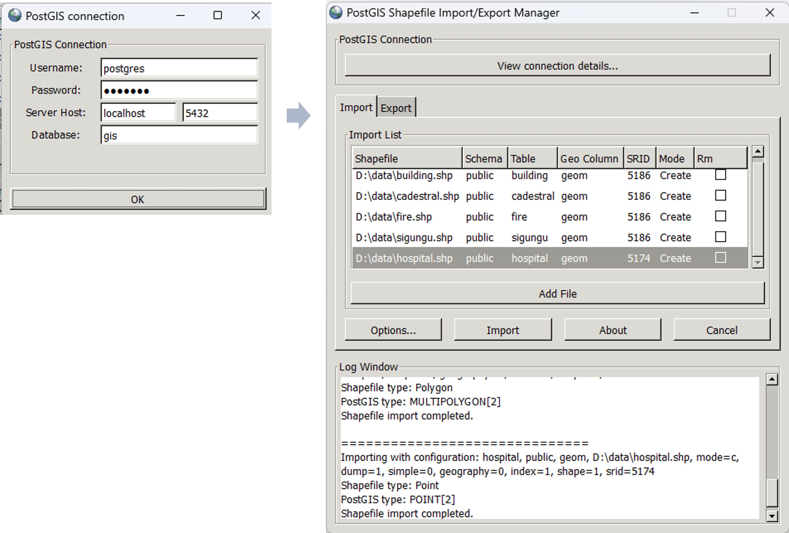
- Hospital 레이어의 좌표계를 5186으로 변환해 봅시다(단, Alter Table 이용)
- 대상 기하 데이터: hospital
- 좌표계 변환: 5174에서 5186으로 변환
정답
--- 생성되어 있는 모든 기하 데이터의 좌표계 번호 출력
SELECT * FROM geometry_columns;
--- ALTER TABLE로 hospital 테이블의 구조 변경
ALTER TABLE hospital
ALTER COLUMN geom TYPE geometry(POINT, 5186)
USING ST_TRANSFORM(geom, 5186);
--- 좌표계 변경되었는지 결과 확인
SELECT ST_SRID(geom) FROM hospital LIMIT 1;
2. 조인(JOIN)의 이해


일반 조인 vs 공간조인
| 일반 조인 | 공간조인 | |
|---|---|---|
| 연결 기준 | a.id = b.id (같은 값) | ST_Within(a.geom, b.geom) (위치 관계) |
| 예 | 필지 ↔ 소유자 (PNU) | 병원 ↔ 동 (위치) |
SELECT ...
FROM A
JOIN B ON ST_관계함수(A.geom, B.geom)
3. 일반 조인 사용법
-
💻 연속지적도형정보와 토지소유자 정보 결합 하기
- cadestral과 owner를 사용하되 공통된 키 값은 pnu
SELECT c.pnu, c.법정동명, c.지번, c.지번지목부, o.소유구분명, o.공유인수, o.연령대구분, o.국가기관구분
FROM cadestral AS C
JOIN owner AS o ON c.pnu = o.pnu
-
💻 소유구분별로 필지가 얼마나 분포하고 있는지 집계하기
- 두 테이블을 조인한 후 소유구분명별로 토지가 총 몇 필지(개수)가 있는지 집계하고, 필지 수가 많은 순서대로 내림차순 정렬
SELECT o.소유구분명, COUNT(c.pnu) AS total_count
FROM cadestral AS C
JOIN owner AS o ON c.pnu = o.pnu
GROUP BY o.소유구분명
ORDER BY total_count DESC;
4. 공간 조인 사용법
-
💻 점이 속한 구역 찾기
- 병원이 어느 동에 있는가를 탐색하여 사업장명과 동이름을 조회
SELECT h.사업장명 AS hospital, d.동이름 AS dong
FROM hospital AS h
JOIN dong AS d ON ST_Within(h.geom, d.geom);
-
💻 구역별 개수 세기
- 동별 병원 수를 집계해서 동이름과 개수를 출력
SELECT d.동이름 AS dong, count(*) AS hospital_cnt
FROM dong AS d
JOIN hospital AS h ON ST_Within(h.geom, d.geom)
GROUP BY d.동이름
ORDER BY hospital_cnt DESC;
PostGIS 공간함수 확인 퀴즈
정답은 각 문제 아래 정답 보기를 눌러 확인하세요.
A. 개념 확인 (객관식)
Q1. 다음 설명 중 ST_SetSRID에 해당하는 것은?
① 좌표값을 다른 좌표계로 환산한다.
② 좌표값은 그대로 두고 SRID 라벨만 붙인다.
③ 도형을 Multi로 바꾼다.
④ 도형을 단순화한다.
정답 보기
② ①은 ST_Transform.
Q2. ST_Contains(a, b)와 항상 같은 결과를 주는 식은?
① ST_Within(a, b)
② ST_Within(b, a)
③ ST_Touches(a, b)
④ ST_Covers(b, a)
정답 보기
② 방향만 반대인 관계입니다. (경계 위 점 처리 때문에 ④와는 다를 수 있습니다.)
Q3. “병원에서 반경 500m 이내의 건물“을 구할 때 가장 적절한 조건은?
① ST_Distance(b.geom, h.geom) < 500
② ST_DWithin(b.geom, h.geom, 500)
③ ST_Buffer(h.geom, 500)
④ ST_Touches(b.geom, h.geom)
정답 보기
② ①도 결과는 맞지만 공간 인덱스를 못 써 느립니다.
Q4. 두 필지가 경계선만 맞닿아 있을 때 true가 되는 함수는?
① ST_Overlaps
② ST_Contains
③ ST_Touches
④ ST_Disjoint
정답 보기
③ (ST_Intersects도 true지만 “경계만“이라는 조건에 정확히 맞는 건 Touches)
Q5. 5186 좌표계에서 ST_Buffer(geom, 1000)의 1000은?
① 1000도 ② 1000m ③ 1000ft ④ 1000㎡
정답 보기
② 좌표계 단위(미터)입니다. 4326에서는 “도“가 되어 엉뚱한 결과가 나옵니다.
B. 문제 해결
Q6. 다음 오류의 원인과 해결책을 쓰시오.
ERROR: Operation on mixed SRID geometries
정답 보기
두 도형의 SRID가 다르다. 한쪽을 ST_Transform(geom, 목표SRID)로 맞춰 연산한다. (선언이 틀렸다면 ST_SetSRID)
공간질의와 실용예제
준비·점검
1. 실습 환경 설정
| 파일이름 | 설명 | 유형 | SRID | 인코딩 |
|---|---|---|---|---|
| sigungu | 시군구 행정구역도 | Multipolygon | 5186 | EUC-KR |
| dong | 동 행정구역도 | Multipolygon | 5186 | EUC-KR |
| cadestral | 연속지적도형정보 | Multipolygon | 5186 | EUC-KR |
| building | GIS통합건물정보 | Multipolygon | 5186 | EUC-KR |
| hospital | 병원 | Point | 5174 | EUC-KR |
| fire | 소방서 | Point | 5186 | EUC-KR |
| road | 도로 | Multilinestring | 5179 | UTF8 |
| park | 주요 공원 | Point | 4326 | EUC-KR |
| owner | 토지소유자 정보 | 스프레드시트 파일 | - | - |
2. 실습 자료 확인
-
모든 레이어별 컬럼 정보와 데이터 타입 확인
-
나온 결과를 파일로 저장하여 나중에 실습 시 참고
SELECT table_name, column_name, data_type FROM information_schema.columns WHERE table_name IN ('fire','hospital','park','road','building','cadastral','dong','sigungu',owner') ORDER BY table_name, ordinal_position;
A. 기본: 좌표계·측정
count(*) FILTER (WHERE 조건): 조건에 맞는 행만 세는 것으로 한 쿼리에서 여러 관계를 동시에 비교 가능
💻 레이어별 좌표계 점검
-
모든 레이어의 좌표계를 확인한 후, 좌표계가 다르다면 EPSG:5186으로 변환하여 좌표계를 통일해 봅시다.
- 💡 HINT! ALTER TABLE, ST_SRID, ST_Transform
정답
/* 생성되어 있는 모든 기하 데이터의 좌표계 번호 출력 */ SELECT * FROM geometry_columns; /* ALTER TABLE로 hospital 테이블의 구조 변경 */ ALTER TABLE hospital ALTER COLUMN geom TYPE geometry(POINT, 5186) USING ST_TRANSFORM(geom, 5186); /* 좌표계 변경되었는지 결과 확인 */ SELECT ST_SRID(geom) FROM hospital LIMIT 1; /* ALTER TABLE로 park 테이블의 구조 변경 */ ALTER TABLE park ALTER COLUMN geom TYPE geometry(POINT, 5186) USING ST_TRANSFORM(geom, 5186); /* 좌표계 변경되었는지 결과 확인 */ SELECT ST_SRID(geom) FROM park LIMIT 1; /* ALTER TABLE로 road 테이블의 구조 변경 */ ALTER TABLE road ALTER COLUMN geom TYPE geometry(Multilinestring, 5186) USING ST_TRANSFORM(geom, 5186); /* 좌표계 변경되었는지 결과 확인 */ SELECT ST_SRID(geom) FROM road LIMIT 1; /* 생성되어 있는 모든 기하 데이터의 좌표계 번호 재출력 */ SELECT * FROM geometry_columns; - 💡 HINT! ALTER TABLE, ST_SRID, ST_Transform
💻 좌표 읽기
-
소방서 이름과 X, Y 좌표(m)를 소방서 이름으로 정렬하여 5개만 확인해 봅시다.
- 💡 HINT! ST_X, ST_Y
정답
/* ST_X, ST_Y를 이용해서 X, Y 좌표값 생성 */ SELECT 서센터명, ST_X(geom) AS X, ST_Y(geom) AS Y FROM fire /* 서센터명으로 정렬 */ ORDER BY 서센터명 /* 5개만 확인 */ LIMIT 5; - 💡 HINT! ST_X, ST_Y
💻 좌표 변환
-
소방서 좌표를 위도·경도로 바꾸고 소방서 이름, X, Y 좌표를 조회하십시오.
- 💡 HINT! ST_Transform
정답
/* ST_X, ST_Y를 이용해서 X, Y 좌표값 생성 */ SELECT 서센터명, ST_X(ST_Transform(geom, 4326)) AS lat, ST_Y(ST_Transform(geom, 4326)) AS lon FROM fire /* 5개만 확인 */ LIMIT 5; - 💡 HINT! ST_Transform
💻 면적 계산
-
건물에 대한 면적을 계산하되 건물명이 널 값이 아닌 것 중 면적이 큰 건물 5개를 조회하십시오.
- 💡 HINT! ST_Area
정답
SELECT 건물명, ST_Area(geom) AS area FROM building /* 건물명이 널이 아닌 것을 설정 */ WHERE 건물명 IS NOT NULL /* 5개만 확인 */ ORDER BY area DESC LIMIT 5; - 💡 HINT! ST_Area
💻 길이 계산
-
도로 등급(road_rank)별 길이를 구하고, 구간 수(segment), 길이 합계(km)를 조회하십시오.
- 💡 HINT! ST_Length, SUM
정답
/* 구간 수는 count, 길이를 합하기 위해 sum 사용 */ SELECT road_rank, count(*) as segment, sum(ST_Length(geom)/1000) as length FROM road /* 도로 등급별로 조회 */ GROUP BY road_rank /* 도로 등급별로 정렬 */ ORDER BY road_rank; - 💡 HINT! ST_Length, SUM
💻 면적과 둘레 계산
-
건물의 둘레가 가장 긴 건물 5개의 이름, 면적, 둘레를 구해 보십시오.
- 💡 HINT! ST_Area, ST_Perimeter
정답
/* 건물별 면적과 둘레 계산 SELECT 건물명, ST_Area(geom) AS area, ST_Perimeter AS perimeter FROM building /* 계산된 둘레 값으로 정렬 */ ORDER BY perimeter DESC /* 5개만 조회 */ LIMIT 5; - 💡 HINT! ST_Area, ST_Perimeter
⚠️ SetSRID와 Transfrom의 구분
-- 1) 소방서를 4326으로 변환한 연습용 테이블
CREATE TABLE fire_4326 AS
SELECT 서센터명, ST_Transform(geom, 4326) AS geom FROM fire;
-- 2) 서로 다른 SRID 연산 → 오류 발생을 확인
SELECT ST_Distance(h.geom, f.geom)
FROM hospital AS h, fire_4326 AS f
LIMIT 1;
-- 3) 올바른 해결: 좌표를 실제로 변환
SELECT ST_Distance(h.geom, ST_Transform(f.geom, 5186)) AS dist_m
FROM hospital AS h, fire_4326 AS f
LIMIT 1;
-- 4) 잘못된 해결: 라벨만 5186으로 바꿈 → 거리 값이 엉뚱함
SELECT round(ST_Distance(h.geom, ST_SetSRID(f.geom, 5186))) AS wrong_dist_m
FROM hospital h, fire_4326 f
LIMIT 1;
-- 5) 정리
DROP TABLE fire_4326;
B. 공간관계 함수 비교: 같은 대상을 여러 관계 함수로 비교해 차이를 확인
💻 공간조인 활용
-
영업 중인 병원이 많은 동 TOP 10은 어디인지 조회해 봅시다.
- 💡 HINT! JOIN, GROUP BY
정답
SELECT 동이름, count(*) AS 병원개수 FROM hospital AS h /* 병원과 동 레이어를 공간 조인하고 ST_Within 활용 */ JOIN dong AS d ON ST_Within(h.geom, d.geom) WHERE h.영업상태명 = '영업/정상' GROUP BY d.동코드, d.동이름 ORDER BY 병원개수 DESC LIMIT 10; - 💡 HINT! JOIN, GROUP BY
💻 Within vs Intersect
-
병원-동 조인 결과 수를 두 함수로 비교하고 전체 병원 수와도 비교해 봅시다.
- 💡 HINT! ST_Within, ST_Intersect
정답
SELECT /* 전체 병원 수 계산 */ (SELECT count(*) FROM hospital) AS total_hosp, /* ST_Within으로 계산한 병원 수 */ (SELECT count(*) FROM hospital AS h JOIN dong AS d ON ST_Within(h.geom, d.geom)) AS within_cnt, /* ST_Intersects로 계산한 병원 수 */ (SELECT count(*) FROM hospital AS h JOIN dong AS d ON ST_Intersects(h.geom, d.geom)) AS intersects_cnt; - 💡 HINT! ST_Within, ST_Intersect
💻 Contains vs Intersects
-
동 안에 완전히 포함되는 공원 수, 걸치기만 해도 포함되는 공원 수를 계산하여 비교해 봅시다.
- 💡 HINT! ST_Contains, ST_Intersects
정답
SELECT d.동이름, /* ST_Contains를 이용해 동 안에 완전히 포함되는 공원 수 계산 */ count(*) FILTER (WHERE ST_Contains(d.geom, p.geom)) AS fully_inside, count(*) AS intersects_cnt FROM dong d /* ST_Intersects를 이용해 걸치기만 해도 포함되는 공원 수 계산 */ JOIN park p ON ST_Intersects(d.geom, p.geom) GROUP BY d.동코드, d.동이름 ORDER BY intersects_cnt DESC LIMIT 10; - 💡 HINT! ST_Contains, ST_Intersects
💻 Touches
-
강남구와 경계가 맞닿아 있는 구는 어디인지 조회해 봅시다.
- 💡 HINT! ST_Touches
정답
/* b는 기준이 되는 강남구, a는 강남구와 인접한 다른 자치구 */ SELECT a.A2 AS neighbor FROM sigungu AS a JOIN sigungu AS b ON ST_Touches(a.geom, b.geom) WHERE b.A2 LIKE '%강남구' AND a.A2 NOT LIKE '%강남구'; - 💡 HINT! ST_Touches
💻 Crosses
-
종로3가에 닿는 도로 구간 중 동 안에 완전히 있는 구간 수, 동 경계를 가로질러 밖으로 나가는 구간 수를 확인해 봅시다.
- 💡 HINT! ST_Within, ST_Crosses
정답
/* 동 안에 완전히 있는 구간 수를 ST_Within으로 계산 후 count로 집계 */ SELECT count(*) FILTER (WHERE ST_Within(r.geom, d.geom)) AS inside_roads, /* 동 경계를 가로질러 밖으로 나가는 구간 수를 ST_Crosses로 계산 후 count로 집계 */ count(*) FILTER (WHERE ST_Crosses(r.geom, d.geom)) AS crossing_roads FROM dong AS d JOIN road AS r ON ST_Intersects(r.geom, d.geom) WHERE d.동이름 = '종로3가'; - 💡 HINT! ST_Within, ST_Crosses
💻 Within VS Overlaps VS Touches
-
신당동에 있는 건물이 자기 필지 안에 있는지, 필지 경계를 침범하는지, 이웃 필지에 닿기만 하는지를 확인하여 건물의 개수를 조회해 봅시다.
- 💡 HINT! ST_Within, ST_Overlaps, ST_Touches
정답
/* 건물이 자기 필지 안에 있는지를 ST_Within으로 계산 후 count로 집계 */ SELECT count(*) FILTER (WHERE ST_Within(b.geom, c.geom)) AS inside_parcel, /* 건물이 자기 필지 경계를 침범하는지를 ST_Overlaps로 계산 후 count로 집계 */ count(*) FILTER (WHERE ST_Overlaps(b.geom, c.geom)) AS straddle_parcel, /* 건물이 이웃 필지에 닿기만 하는지를 ST_Touches로 계산 후 count로 집계 */ count(*) FILTER (WHERE ST_Touches(b.geom, c.geom)) AS touch_only FROM building b JOIN cadestral c ON ST_Intersects(b.geom, c.geom) WHERE b.법정동명 LIKE '%신당동'; - 💡 HINT! ST_Within, ST_Overlaps, ST_Touches
C. 복합 문제: 함수를 조합해 실제 업무에 활용
NOT EXISTS: 조건에 맞는 행이 하나도 없을 때 참(TRUE) 값을 반환
💻 병원이 없는 동
-
영업 중인 병원이 하나도 없는 동은 어디인지를 조회해 봅시다.
- 💡 HINT! ST_Within
정답
SELECT d.동이름 FROM dong AS d WHERE NOT EXISTS ( SELECT 1 FROM hospital h WHERE ST_Within(h.geom, d.geom) AND h.영업상태명 = '영업/정상' ) ORDER BY d.동이름; - 💡 HINT! ST_Within
💻 소방 사각지대
-
동을 기준으로 반경 1km 이내에 소방서가 하나도 없는 동을 찾고 이름 순으로 정렬해 봅시다.
- 💡 HINT! ST_DWithin
정답
SELECT d.동코드, d.동이름 FROM dong AS d WHERE NOT EXISTS ( SELECT 1 FROM fire AS f WHERE ST_DWithin(d.geom, f.geom, 1000)) ORDER BY d.동이름 ASC; - 💡 HINT! ST_DWithin
💻 병원 50m 안의 공원
-
병원별로 반경 500m 안의 공원 수를 ST_DWithin으로 구하고, ST_Buffer로 같은 결과가 나오는지 확인해 봅시다.
- 💡 HINT! ST_DWithin, ST_Buffer
정답
SELECT h.사업장명, h.도로명주소, (SELECT count(*) FROM park AS p WHERE ST_DWithin(h.geom, p.geom, 500)) AS parks_500 FROM hospital AS h WHERE h.영업상태명 = '영업/정상' ORDER BY parks_500 DESC LIMIT 10; SELECT (SELECT count(*) FROM hospital AS h JOIN park AS p ON ST_DWithin(h.geom, p.geom, 500)) AS dwithin_cnt, (SELECT count(*) FROM hospital AS h JOIN park AS p ON ST_Intersects(ST_Buffer(h.geom, 500), p.geom)) AS buffer_cnt; - 💡 HINT! ST_DWithin, ST_Buffer
💻 건물과 토지소유자
-
건물이 있는 필지의 소유구분별 건물 수와 건물 면적의 합계를 조회해 봅시다.
- 💡 HINT! ST_AREA, JOIN
정답
SELECT o.소유구분명, count(*) AS bld_cnt, sum(ST_Area(b.geom)) AS area FROM building AS b JOIN owner AS o ON b.pnu = o.pnu GROUP BY o.소유구분명 ORDER BY bld_cnt DESC; - 💡 HINT! ST_AREA, JOIN
💻 소방서 500m 안의 도로
-
소방서별로 반경 300m 안에 걸치는 도로 구간 수, 구간 길이 합(km), 최고 제한속도를 조회해 봅시다.
- 💡 HINT! SUM, MAX, ST_Length, ST_DWithin, 공간조인
정답
SELECT f.서센터명, count(*) AS segments, (sum(ST_Length(r.geom)) / 1000) AS length, max(r.max_spd) AS max_speed FROM fire AS f JOIN road AS r ON ST_DWithin(f.geom, r.geom, 500) GROUP BY f.서센터명 ORDER BY length DESC LIMIT 10; - 💡 HINT! SUM, MAX, ST_Length, ST_DWithin, 공간조인
💻 공간 + 일반조인
-
어린이 대공원 300m 이내 필지의 소유구분별 필지의 수를 조회해 봅시다.
- 💡 HINT!
정답
SELECT o.소유구분명, count(DISTINCT c.pnu) AS parcels FROM park AS p JOIN cadestral AS c ON ST_DWithin(c.geom, p.geom, 300) JOIN owner AS o ON o.pnu = c.pnu WHERE p.공원명 = '어린이대공원' GROUP BY o.소유구분명 ORDER BY parcels DESC; - 💡 HINT!
D. 도전 과제와 정리
도전 1. 🚨 고층 건물의 안전 사각지대 ⭐⭐⭐
-
질문: 지상 5층 이상이면서 ① 소방서 2km 밖 ② 영업 중인 병원 1km 밖인 건물을 층수 높은 순으로 20개 구하시오.
-
테이블 이름: Challenge_01
-
출력 컬럼: 건물명, 법정동명, 지상층수, 높이 -💡HINT: ST_DWithin, NOT EXISTS
-
정답
CREATE TABLE Challenge_01 AS
SELECT b.건물명, b.법정동명, b.지상층수, b.높이
FROM building AS b
WHERE b.지상층수 >= 5
AND NOT EXISTS (SELECT 1 FROM fire AS f
WHERE ST_DWithin(b.geom, f.geom, 2000))
AND NOT EXISTS (SELECT 1 FROM hospital AS h
WHERE h.영업상태명 = '영업/정상' AND ST_DWithin(b.geom, h.geom, 1000))
ORDER BY b.지상층수 DESC
LIMIT 20;
도전 2. 🌳 큰 공원 주변 건물 ⭐⭐⭐⭐
-
질문: 면적 상위 3개 공원에 대해 반경 300m 안의 건물 수와 연면적 합계를 구하시오.
-
테이블 이름: Challenge_02
-
출력 컬럼: 공원명, 건물수는 bld_cnt, 연면적 합계는 total_floor_area
-
💡HINT: ST_Area, ST_Dwithin, 서브쿼리
-
정답
CREATE TABLE Challenge_02 AS
SELECT p.공원명,
count(*) AS bld_cnt,
sum(b.연면적) AS total_floor_area
FROM (SELECT 공원명, geom
FROM park
ORDER BY ST_Area(geom) DESC
LIMIT 3) AS p
JOIN building AS b ON ST_DWithin(p.geom, b.geom, 300)
GROUP BY p.공원명
ORDER BY bld_cnt DESC;
웹 프로그래밍 이해
웹 GIS 개념
1. 공간정보와 지리정보시스템
-
공간정보(Geospatial Information)
- 지상, 지하, 수상, 수중 등 공간 상에 존재하는 자연 또는 인공적인 객체에 대한 위치정보 및 이와 관련된 공간적 인지와 의사결정에 필요한 정보(공간정보산업 진흥법)

- 지상, 지하, 수상, 수중 등 공간 상에 존재하는 자연 또는 인공적인 객체에 대한 위치정보 및 이와 관련된 공간적 인지와 의사결정에 필요한 정보(공간정보산업 진흥법)
-
지리정보시스템(Geographic Information System, GIS)
- 공간적 문제를 해결하기 위해 다양한 공간자료를 수집, 구축, 유지, 관리, 편집하고 분석과 모델링을 통해 추출된 고부가가치의 정보를 표현하고 출력할 수 있게 고안된 종합적인 정보처리시스템

- 공간적 문제를 해결하기 위해 다양한 공간자료를 수집, 구축, 유지, 관리, 편집하고 분석과 모델링을 통해 추출된 고부가가치의 정보를 표현하고 출력할 수 있게 고안된 종합적인 정보처리시스템
-
어플리케이션별 GIS 분류
-
웹(Web) GIS
- 인터넷 기술과 GIS를 접목하여 공간정보의 입력, 수정, 조작, 출력 등 GIS 데이터와 서비스를 인터넷 환경에서 제공
-
모바일(Mobile) GIS
- 언제 어느 장소에서나 공간정보에 기반한 유무선 환경의 통신망을 통해 현재 위치 기반의 필요 정보를 제공할 수 있도록 구현된 GIS
-
엔터프라이즈(Enterprise) GIS
- 특정한 업무부서가 아닌 기업이나 기관 전체에서 필요로 하는 정보를 제공하는 것을 목적으로 지리정보를 효율적으로 관리, 분석, 활용하기 위한 GIS
-
2. 웹 GIS 개념 및 특징
-
웹 GIS 개념
-
인터넷을 통하여 단일 또는 다수의 기존 애플리케이션 시스템을 표준화된 기술로 결합시켜 모든 비즈니스를 가능하게 하는 웹 서비스를 기반으로 한 개념
-
인터넷을 통하여 공간데이터를 교환하고 전송할 뿐 아니라 검색, 분석, 처리할 수 있는 시스템
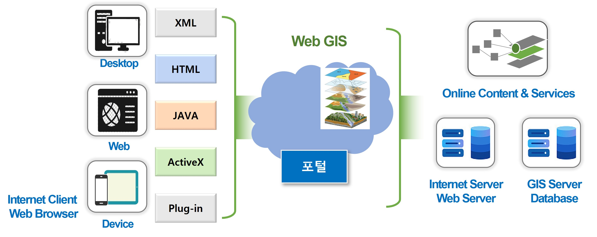
-
-
웹 GIS 특징
-
분산 환경
-
대용량을 처리해야 하는 GIS의 기능으로 인하여 분산 컴퓨팅 환경(Distributed Computing Environment, DCE)을 취함
-
인터넷으로 연결된 수많은 서버에 분산되어 있는 데이터와 기능의 객체를 사용자 요구에 따라 다양한 기능을 수행해야 함
-
-
대화형 시스템
-
인터넷에서 GIS 분석 기능을 수행하는 데 클라이언트 서버 개념을 응용
-
벡터를 따로 처리할 수 있는 클라이언트를 개발하고 이를 웹 상에 내재시켜 대화형 시스템을 구현
-
-
동적 유지 관리
- 분산 시스템으로써 데이터와 소프트웨어를 최신의 정보로 유지할 수 있음
-
통합 정보 제공
- 월드 와이드 웹은 웹 GIS에 비디오, 오디오, 지도, 텍스트, 방송 등의 다양한 형태의 자료를 동일한 웹 페이지로 통합할 수 있는 기능을 제공
-
다양한 사용자들과 협업 가능
-
다양한 유형의 지리정보 데이터를 서비스 및 데이터 형태인 단순화된 모델로 통합하여 플랫폼에 저장
-
이러한 공통된 모델을 통해 개인, 기관, 커뮤니티 등 모든 사용자를 연결하여 동일한 정보에 접근 가능
-
-
독립적 크로스 플랫폼(cross platform)
- 기종이나 운영체제에 독립적인 시스템으로 클라이언트의 하드웨어, 운영체제 및 관계형 데이터베이스 시스템의 종류에 관계없이 공통의 데이터와 기능을 공유할 수 있는 크로스 플랫폼을 지원
-
상호운용성(interoperability)
-
GIS 프로그램을 소유하지 않아도 웹상에서 GIS 프로그램을 구동하는 것과 같은 기능을 수행
-
데이터 포맷, 데이터 교환, 데이터 접근에 대한 표준 및 GIS 분석 컴포넌트의 표준 사양 등을 고려
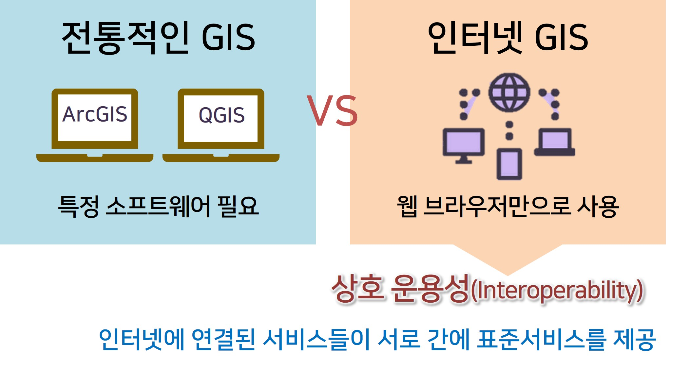
-
-
3. 웹 서비스 표준
-
OSGeo(Open Source Geospatial Foundation)
-
지리공간기술과 데이터의 공개 협업 개발을 지원하고 알리기 위한 비영리, 비정부 단체
-
지리공간 분야의 오픈 소프트웨어와 오픈소스 개발을 폭넓게 재정적, 조직적, 법적으로 지원하기 위해 2006년 2월 4일 미국 시카고에서 창설
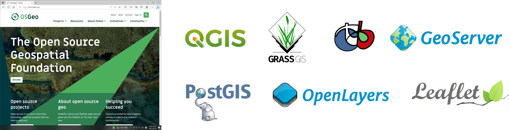
-
-
OGC(Open Geospatial Consortium) Standards
-
전 세계 530곳 이상 정부기관과 기업, 대학들이 참여하고 있는 세계 최대 공간정보산업 표준화 추진 기구
-
데이터 포맷에서부터 OGC Web Service에 이르는 다양한 표준 제정 및 인증
-
분기당 1회씩 매년 4회의 정기총회를 개최하고, 구성 멤버는 약 40% 이상이 기업
-
지역별 기관 수는 유럽이 208개, 북아메리카 182개, 아시아 86개, 중동 34개, 남아메리카 3개, 아프리카 3개 기관으로 구성
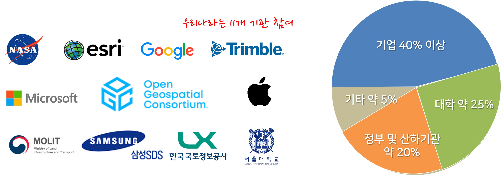
-
-
웹 서비스 표준
-
OGC와 월드 와이드 웹 컨소시엄(World Wide Web Consortium, W3C)의 주관으로 개발
- 웹 서비스 표준화 기구에서 진행되는 기반 기술의 표준화 작업을 바탕으로 하여 GIS와 관련되는 실질적인 기술 표준화는 OGC에서 추진
-
웹 서비스 기반의 GIS 표준 개발을 추진하여 실제 요구에 의하여 개발해 온 다양한 표준을 개념적으로 정리 및 통합
-
-
OGC의 대표적인 표준 서비스
-
WMS(Web Map Service)
- 공간 데이터베이스의 데이터를 지도 이미지로 서비스하기 위한 표준 프로토콜로 블록이나 선 같은 기본 지도(윤곽)를 표시
-
WFS(Web Feature Service)
-
플랫폼에 독립적인 호출을 이용하여 공간데이터에 대한 개체를 요청할 수 있는 인터페이스를 제공
-
WMS가 단순한 지도 이미지만을 서비스하는 데 반하여 WFS는 공간 분석 등과 같은 연산에 필요한 데이터를 서비스
-
-
WPS(Web Processing Service)
- 공간데이터에 대한 다양한 처리 서비스를 웹 상에서 정의하고 접근할 수 있도록 하기 위한 표준 프로토콜이며, 모든 OGC 표준 웹 서비스와 상호 호환성을 갖도록 함
-
WMTS(Web Map Tile Service)
-
정적인 이미지를 모아둔 저장소를 이용하여 매우 빠르게 지도 서비스를 수행하는 서비스
-
지도 이미지 저장소는 특정 축척별로 지도 영역을 타일 이미지로 저장한 디렉토리 구조
-
지도를 데이터베이스로부터 직접 생성하는 것보다 훨씬 시간 단축 가능
-
사용자가 복잡한 지도를 생성할 때 획기적으로 지도 생성 시간을 단축시키는 효과와 성능 향상을 위한 모든 노력 제거 가능
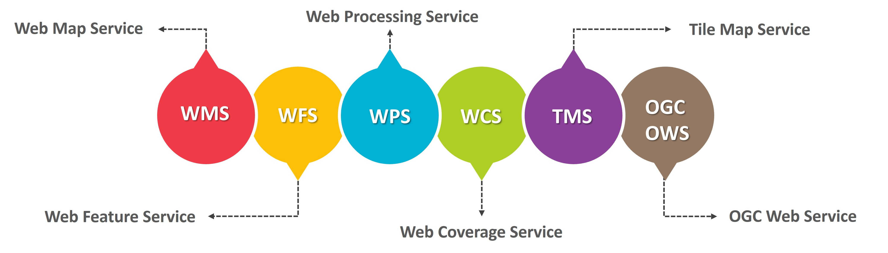
-
-
프로그래밍 개념
1. 개발자
-
개발자가 하는 일
-
컴퓨터가 처리할 수 있는 명령어로 코드(부호)를 작성하는 사람(코딩 또는 코더)을 지칭
- 소스코드는 컴퓨터가 어떤 명령을 내리기 위해 컴퓨터가 이해할 수 있는 언어로 작성한 정보
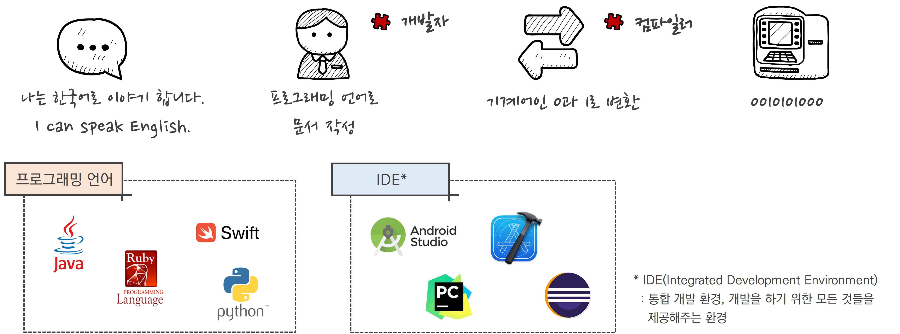
- 소스코드는 컴퓨터가 어떤 명령을 내리기 위해 컴퓨터가 이해할 수 있는 언어로 작성한 정보
-
프로그래밍은 컴퓨터에서 작동하는 프로그램을 설계하고 개발하는 전 과정을 의미
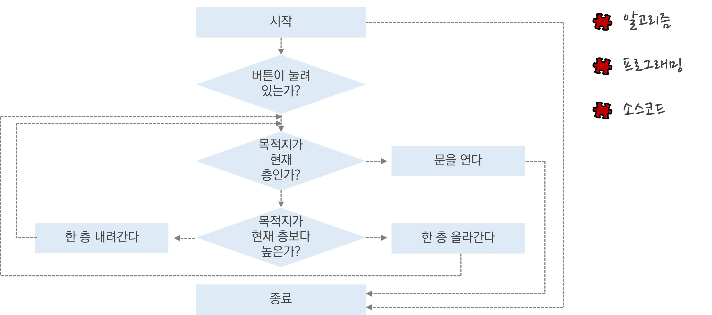
-
-
개발자가 만드는 것
- 소프트웨어 vs 프로그램 vs 애플리케이션
-
하드웨어: 눈에 보이고 만져지는 부분
-
소프트웨어: 보이지 않는 부분
-
라이브러리: 어떤 일을 수행하기 위해 필요한 기능을 일정 단위로 묶은 것
-
프로그램: 모든 과정을 수행할 수 있도록 만든 것
-
시스템 프로그램: 운영체제를 구성하는 소프트웨어
-
응용 프로그램: 각각의 목적에 따라 사용자가 실행하여 활용할 수 있는 프로그램
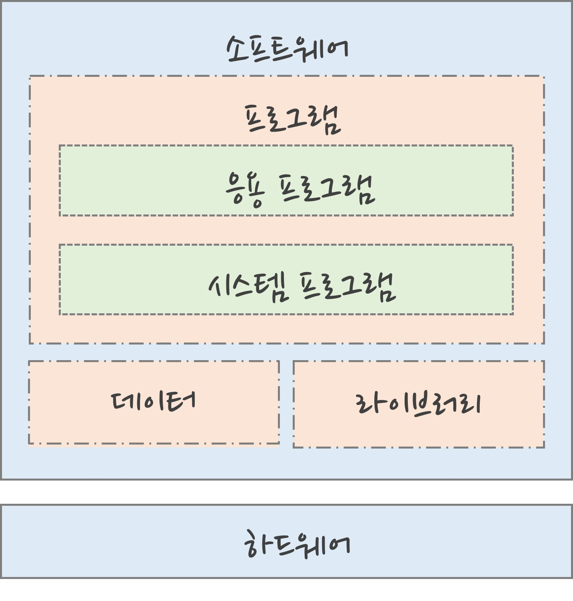
-
- 소프트웨어 vs 프로그램 vs 애플리케이션
2. 개발자의 종류
-
개발자의 종류
-
웹: 웹 사이트를 만드는 개발자
-
모바일: 손 안의 앱을 만드는 개발자
-
게임: 게임을 만드는 개발자
-
응용 소프트웨어: 컴퓨터 프로그램을 만드는 개발자
-
임베디드 개발자: 하드웨어를 제어하는 개발자
-
정보보안 전문가: 컴퓨터 시스템을 보호하는 개발자
-
AI 개발자: 기계를 가르치는 개발자
-
-
웹 개발자
- 웹 사이트를 개발하는 개발자로 웹 퍼블리셔, 프론트엔드 개발자, 백엔드 개발자로 구성
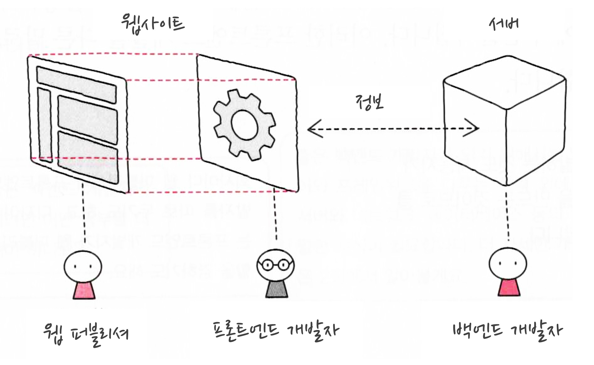
- 웹 사이트를 개발하는 개발자로 웹 퍼블리셔, 프론트엔드 개발자, 백엔드 개발자로 구성
-
웹 퍼블리셔
-
웹 사이트에서 보이는 부분을 담당하는 개발자로 해외에서는 보통 UI(User Interface) 개발자라 호칭
-
웹 사이트의 외적 요소를 코드로 구현하는 역할을 하고 HTML, CSS, JavaScript를 사용
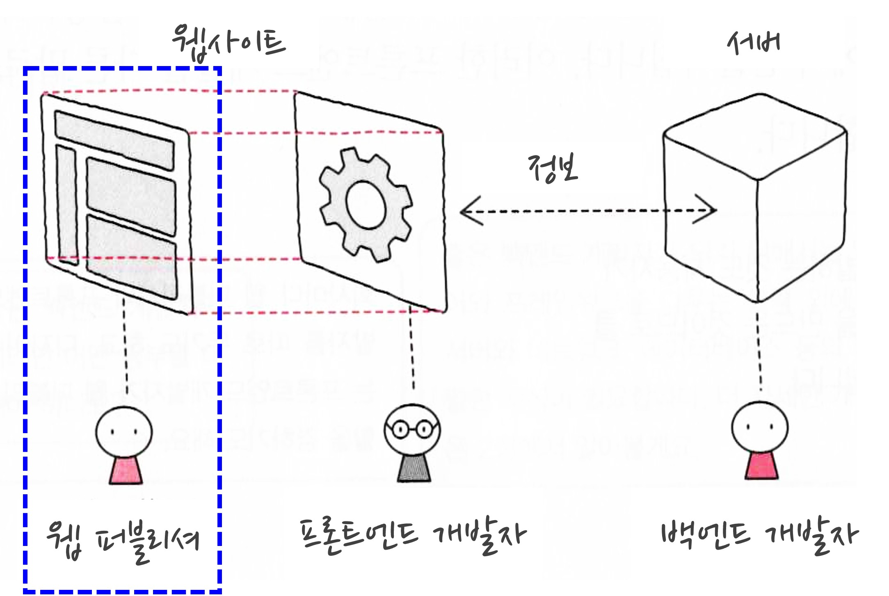
-
-
프론트엔드 개발자(클라이언트 개발자)
-
사용자에게 보여줄 웹 사이트 화면을 만들고 사용자의 클릭이나 드래그와 같은 동작에 따라 웹 사이트의 다양한 기능이 실행되도록 프로그래밍
-
JavaScript를 중점적으로 사용하고, 이외 TypeScript, React 라이브러리 등을 사용
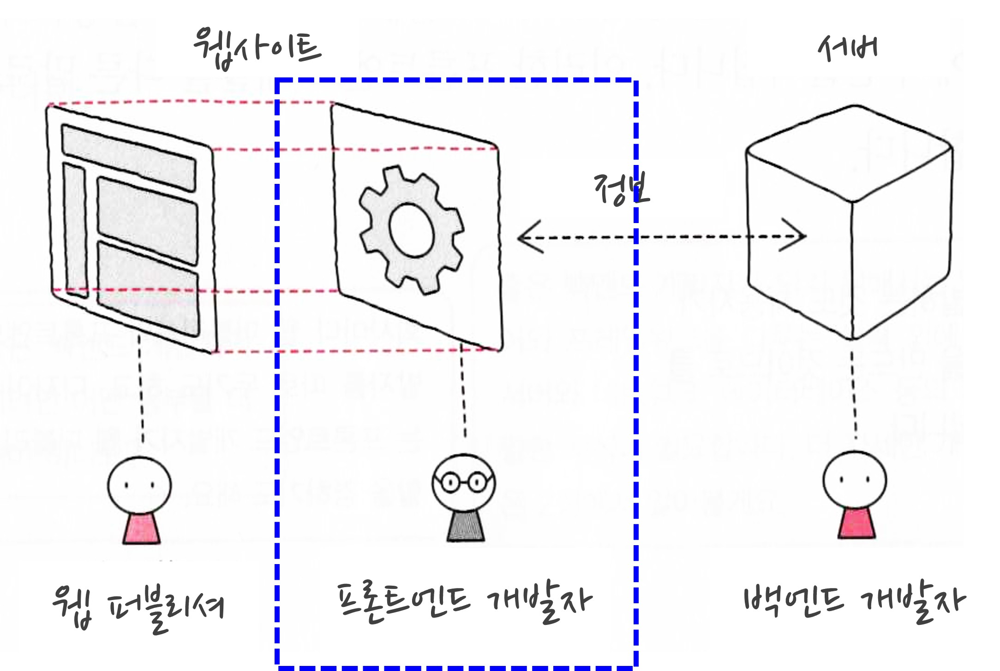
-
-
백엔드 개발자(서버 개발자)
-
웹 사이트에서 눈에 보이지 않는 요소를 개발하고 화면에 들어갈 데이터를 주고받는 서버의 기능 구현
-
JavaScript, Python, PHP, JAVA 등의 언어와 각 언어별 프레임워크(framework)를 사용
-
한국에서는 JAVA와 Spring 프레임워크 조합을 많이 사용
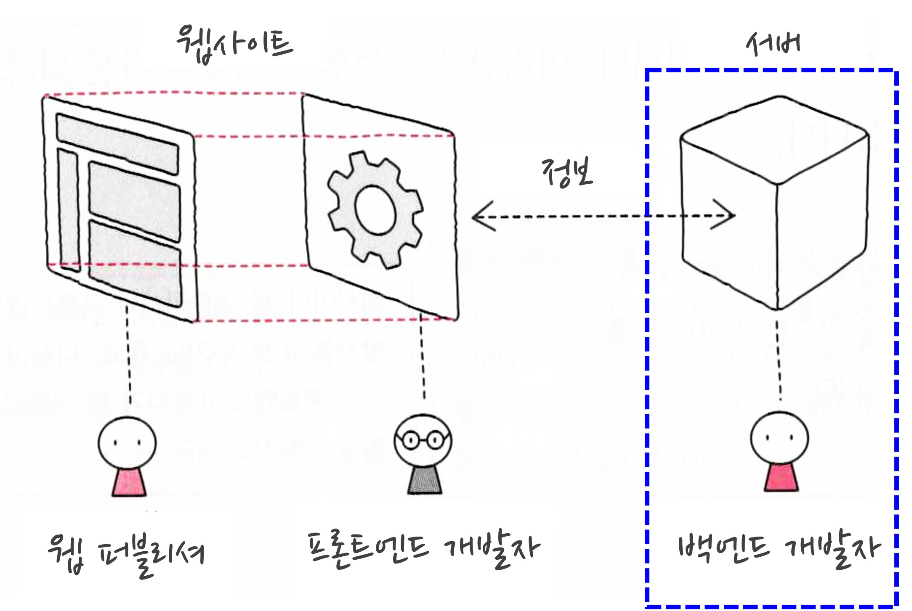
-
3. 프로그래밍 언어
-
개발된 배경
-
컴퓨터에 명령을 내린다는 목적으로 만들어진 언어
-
더 많은 사람이 읽기 편한 언어
-
짧은 코드로 더 많은 지시를 내릴 수 있는 언어
-
보다 빨리 작동하는 언어
-
오류로부터 안전한 언어
-
-
현재는 C, 자바(JAVA), 파이썬(Python), 자바스크립트(JavaScript) 등이 대표적
-
-
프로그래밍 언어의 구분
- 추상화에 수준에 따른 분류(하드웨어 친화도)
-
사람의 언어(자연어)에 가까울수록 고수준 언어
-
기계의 언어(0과 1)에 가까울수록 저수준 언어
-
어셈블리어(assembly language)는 기계어 한 줄 한 줄을 그대로 직역한 것으로 하나의 명령에 한 가지 작동
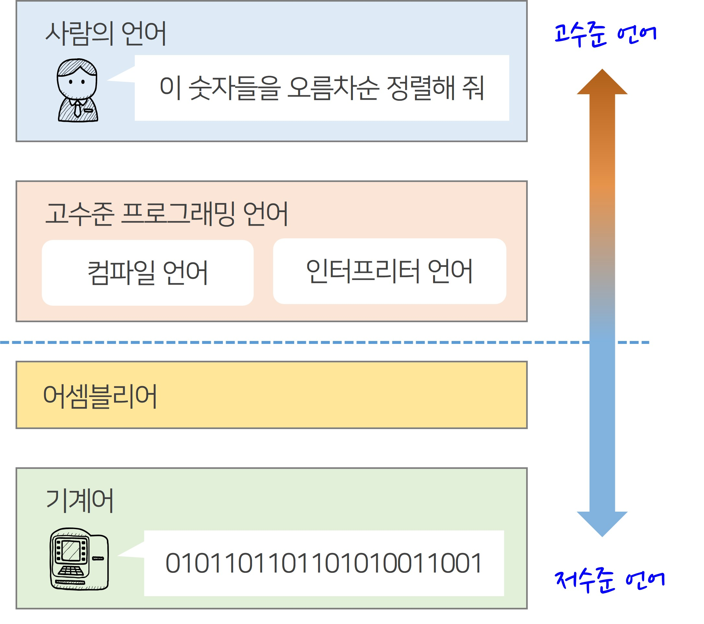
-
- 실행 방식에 따른 분류
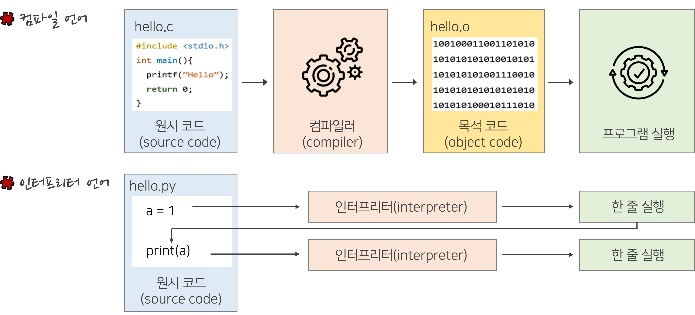
- 추상화에 수준에 따른 분류(하드웨어 친화도)
-
통합개발환경(IDE, Integrated Development Environment)
- 개발자들이 잘못된 코드를 작성하지 않도록 도와주는 프로그램
-
이클립스: 자바 프로그래밍에 많이 사용되는 도구
-
인텔리제이: 이클립스와 비슷한 용도로 사용되며, 더 강력한 기능을 가진 IDE
-
안드로이드 스튜디오: 인텔리제이의 안드로이드 개발용 버전으로 안드로이드 앱을 만드는데 사용
-
파이참: 파이썬 개발에 특화된 IDE
-
엑스코드: 애플이 개발한 IDE
-
비주얼 스튜디오: 마이크로 소프트웨어에서 제작한 IDE로 다양한 소프트웨어 개발
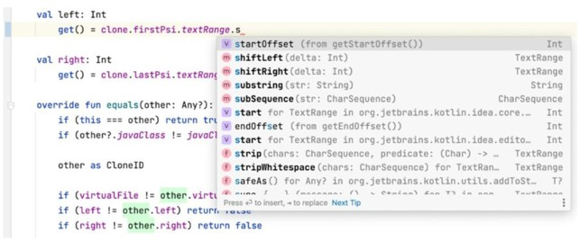
-
- 개발자들이 잘못된 코드를 작성하지 않도록 도와주는 프로그램
웹 서비스 구조
1. 웹 서비스의 개념
-
웹 서비스의 개념
- 웹은 서버(server)와 클라이언트(client)가 http(Hyper Text Transfer Protocol)를 통해 요청(request)과 응답(response)을 사용하여 자료를 주고받으며 정보를 교환
-
서버(server): 정보나 서비스를 저장하고 있다가 필요한 경우 네트워크를 이용해 사용자에게 전달해 주는 컴퓨터
-
클라이언트(client): 사용자가 원하는 정보를 서버 컴퓨터로부터 받아 오는 역할을 하는 컴퓨터
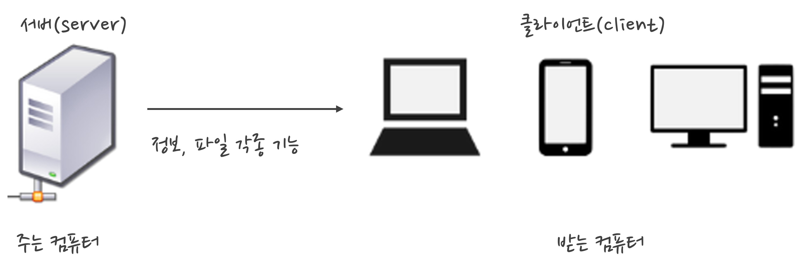
-
- 웹은 서버(server)와 클라이언트(client)가 http(Hyper Text Transfer Protocol)를 통해 요청(request)과 응답(response)을 사용하여 자료를 주고받으며 정보를 교환
2. 프로토콜의 개념
-
프로토콜(protocol)의 개념
-
서버에 요청할 때 지켜야할 약속, 통신 규약이라고 함
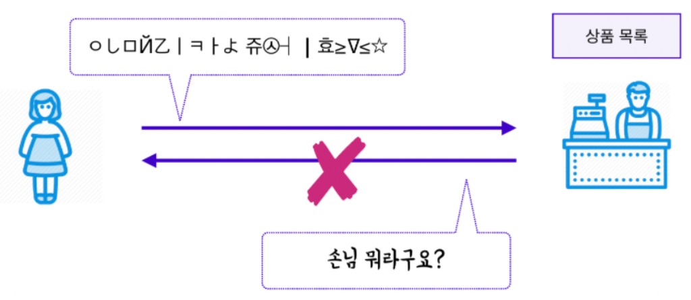
-
HTTP(HyperText Transfer Protocol)
-
통신 규약을 나타내는 것으로 네트워크로 이어진 두 컴퓨터가 어떤 종류의 소통을 할지 지정
-
클라이언트의 요청과 서버의 응답으로 구성된 방식
-
해당 웹 사이트가 신뢰할 만한 곳인지 확인하기 어려움
-
요청과 응답 사이에 아무런 보안장치 없이 데이터가 그대로 보내짐
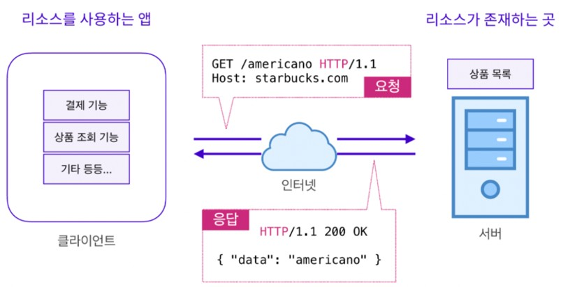
-
-
HTTPS(HTTP Secure)
-
HTTP에 보안(secure) 기능을 더한 프로토콜로 주소 창에 자물쇠 표시가 나타남
-
클라이언트와 서버는 중요한 데이터를 보다 안전하게 주고받을 수 있음
-
웹사이트 노출이 HTTP보다 유리함(검색엔진 최적화)
-
-
3. 웹 문서의 개념
-
웹 문서의 개념
- 웹에서 클라이언트가 서버에 정보를 요청하면 응답하는 콘텐츠
-
주요 용어의 차이점
-
웹 페이지(web page): 웹 사이트의 일부인 단일 페이지를 의미하는 것으로 홈 페이지는 웹 페이지에 포함
-
웹 사이트(website): 여러 웹 페이지를 모아 놓은 꾸러미
-
홈페이지(homepage): 웹 사이트의 최상위 페이지를 뜻하며 일반적으로 웹 사이트를 방문한 사용자가 가장 먼저 보게 되는 페이지
-
-
웹 문서의 분류
-
정적 웹 페이지(static web page)
-
클라이언트가 웹 문서를 요청하면 웹 서버는 이미 만들어져 있는 문서(HTML, 이미지, JavaScript 파일 등)를 클라이언트에게 제공하는 웹 페이지
-
사용자는 서버에 저장된 데이터가 변경되지 않는 한 고정된 웹 페이지를 계속 보게 됨
-
모든 사용자는 같은 결과의 웹 페이지를 서버에 요청하고 응답
-
-
동적 웹 페이지(dynamic web page)
-
서버에 저장된 HTML 파일이 그대로 브라우저에 나오는 것이 아닌 동적으로 만들어지는 웹 페이지
-
요청 정보를 처리한 후에 제작된 HTML 문서를 클라이언트에게 전송하는 웹 페이지
-
요청에 관하여 사용자는 상황, 시간, 요청 등에 따라 다른 결과를 응답
-
같은 페이지라도 사용자마다 다른 결과의 웹 페이지를 서버에 요청하고 받을 수 있음
-
-
반응형 웹
- 페이지 내 요소들을 신축성 있게 만들어 기기나 화면 크기에 맞게 너비나 높이, 위치 등을 자동으로 조절하는 웹 사이트
-
적응형 웹
- 화면 크기에 따라 PC용과 모바일용 웹사이트를 따로 만드는 것
-
4. 웹 사이트 구성요소
-
웹 기술
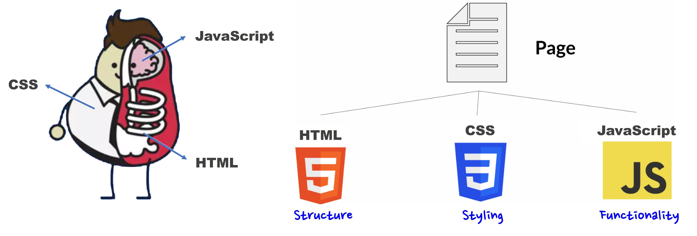
-
HTML(HyperText Markup Language)
- 문서나 데이터의 구조를 표현하는 데 사용되는 언어
-
CSS(Cascading Style Sheets)
- 마크업 언어가 실제로 표시되는 방법을 기술하는 스타일 언어
-
JavaScript
- 웹 사이트에 각종 기능을 달아주는 프로그래밍 언어
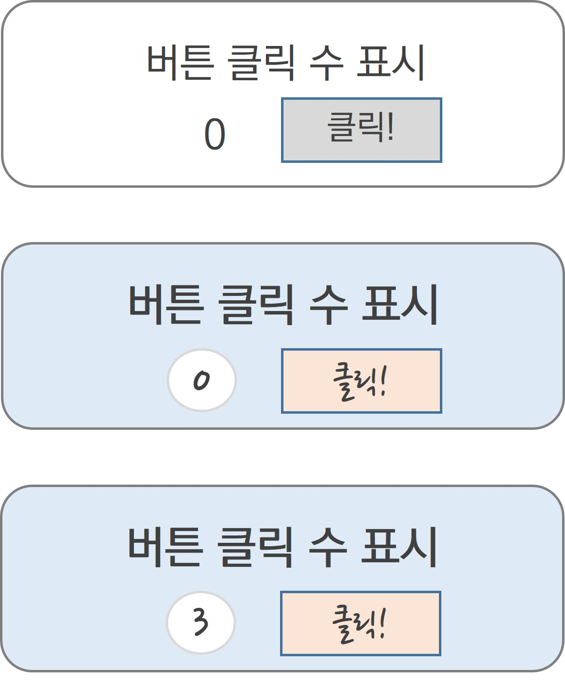
- 웹 사이트에 각종 기능을 달아주는 프로그래밍 언어
-
-
웹 개발 품질 요소
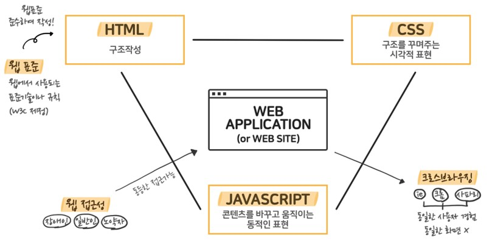
-
웹 표준
-
브라우저 종류 및 버전에 따른 기능 차이에 대하여 호환이 가능하도록 제시된 표준
-
표준화 단체인 W3C(World Wide Consortium)가 권고한 표준안에 따라 웹 사이트를 작성할 때 사용하는 HTML, CSS, JavaScript 등에 대한 규정
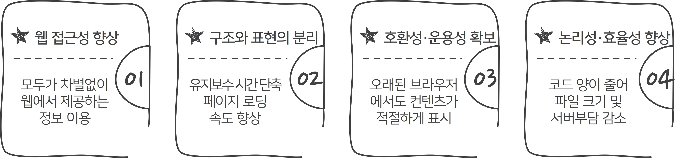
-
-
웹 접근성
-
모든 사용자가 신체적, 환경적 조건에 관계 없이 웹에 접근하여 이용할 수 있도록 보장하는 것
-
한국형 웹 콘텐츠 접근성 지침(Web Content Accessibility Guidelines)
- 인식의 용이성(perceivable), 운용의 용이성(operable), 이해의 용이성(understandable), 내구성(robust)
- 인식의 용이성(perceivable), 운용의 용이성(operable), 이해의 용이성(understandable), 내구성(robust)
-
-
웹 호환성
- 운영체제, 브라우저에 상관없이 유사한 화면으로 동일한 정보에 접근이 가능해야 함
- 운영체제, 브라우저에 상관없이 유사한 화면으로 동일한 정보에 접근이 가능해야 함
-
HTML/CSS
실습 환경 구성
1. Visual Studio Code 개요
-
Visual Studio Code란?
- 마이크로소프트사에서 웹 개발을 위해 무료로 제공하는 편집기
-
Visual Studio Code 특징
-
대부분의 주요 플랫폼(윈도우, 맥OS, 리눅스)에서 모두 사용 가능
- 다양한 기능을 갖춘 대부분의 웹 편집기들은 윈도우나 메킨토시 등 특정 운영체제에서만 사용할 수 있고 유료인 경우가 많음
-
태그와 CSS 속성을 친절히 안내
- 입력하는 동안 태그나 CSS 속성에 대한 간단한 설명이 표시되고 ⓘ를 클릭하면 자세한 설명 보기 가능
-
태그와 CSS 속성을 간편하게 입력 가능
- 이름의 일부만 입력해도 그 단어가 포함된 목록이 표시되어 손쉽게 선택 가능하고, </까지만 입력하면 닫는 태그가 자동으로 추가
-
손쉽게 확장 가능
-
웹 개발을 할 때 확장이라는 기능을 통해 다양한 도구를 사용 가능하고 이를 통해 좀 더 작업이 쉬워짐
-
프로그램의 인터페이스를 한글 버전으로 바꿔주는 기능(Korean Language Pack), 수정한 소스를 즉시 웹 브라우저에서 결과를 확인할 수 있는 기능(Live Server) 등
-
마켓플레이스(https://marketplace.visualstudio.com/vscode)를 이용하면 C#을 비롯해 파이썬, Go, AngularJS 등 최신 웹 기술들을 비주얼 스튜디오 코드 안에 통합해 사용 가능
-
-
2. Visual Studio Code 설치 및 환경설정
-
Visual Studio Code 설치
-
Visual Studio Code 홈페이지로 접속한 후 Download for Windows 버튼을 클릭
- https://code.visualstudio.com
-
라이선스 동의 후 설치 폴더를 선택하고, 다음 버튼을 클릭
-
시작 메뉴 폴더 및 추가 작업을 선택하고, 여기서 기타에 표시된 항목은 반드시 체크
-
설치가 완료되면 프로그램 실행
-
-
Visual Studio Code 환경 설정
-
Korean Language Pack for Visual Studio Code 설치
- 기본 언어를 한글로 바꾸기 위해 확장 아이콘을 클릭하고, 검색 창에 Korean language를 입력하고 검색 결과를 선택하여 [Install] 또는 [설치] 버튼을 클릭(재 시작해야 함)
- 기본 언어를 한글로 바꾸기 위해 확장 아이콘을 클릭하고, 검색 창에 Korean language를 입력하고 검색 결과를 선택하여 [Install] 또는 [설치] 버튼을 클릭(재 시작해야 함)
-
라이브 서버(Live Server) 확장 설치
- 확장 아이콘을 클릭하고, 검색 창에 Live Server를 입력한 후 목록에서 제작자가 Ritwick Dey인 확장을 선택하여 [Install] 또는 [설치] 버튼을 클릭
- 확장 아이콘을 클릭하고, 검색 창에 Live Server를 입력한 후 목록에서 제작자가 Ritwick Dey인 확장을 선택하여 [Install] 또는 [설치] 버튼을 클릭
-
인터페이스 설정
-
설정 > 테마에서 인터페이스의 색 테마, 파일 아이콘 테마, 제품 아이콘 테마 설정
-
Font Size, Mouse Wheel Zoom, Word Wrap, Tab Size 등을 검색하여 항목 설정
-
-
-
실습을 위한 작업 폴더 추가
-
소스가 있는 폴더를 ’작업 폴더’로 지정하면, 웹 문서에서 사용하는 여러 파일들을 한 눈에 확인하고 관리 가능
-
폴더 열기 버튼 또는 상단 메뉴에서 파일 > 폴더 열기를 선택한 후 실습 폴더 선택
-
HTML 기본 개념 및 주요 태그
1. HTML 개념
-
웹 사이트에서 사용할 문서는 웹에 맞는 형식인 html 확장자를 붙여 다른 문서와 구분
-
HTML은 HyperText Markup Language의 줄임말로 웹에서 자유롭게 오갈 수 있는 웹 문서를 만드는 언어
2. HTML 문서 생성
-
Visual Studio Code에서 파일 > 새 파일을 클릭하고, new.html을 입력 후 팝업 되는 창에서 저장 위치 선택
-
new.html이라는 탭이 생성되면 !(느낌표)를 입력하고 Tab 키를 클릭
- 비주얼 스튜디오 코드에서는 웹 문서의 태그를 자동으로 입력해 주는 이멧(Emmet) 기능 존재
- 비주얼 스튜디오 코드에서는 웹 문서의 태그를 자동으로 입력해 주는 이멧(Emmet) 기능 존재
3. HTML 문서 구조
-
어떤 웹 문서를 작성하든 이 기본 구조를 지켜야 함
- 웹 브라우저에 표시되는 웹 문서 내용은
<body>태그와</body>태그 사이에 입력
- 웹 브라우저에 표시되는 웹 문서 내용은
-
Ctrl + S를 눌러 문서를 저장하고, 코드 창에서 마우스 오른쪽 클릭하여 Open With Liver Server 클릭
-
윈도우 탐색기에서 new.html을 더블클릭해서 실행해도 됨
-
웹 브라우저에서 127.0.0.1:5500/new.html을 입력하면 코드 수정 시 자동 반영
-
-
웹에서 특수 문자 및 특수 기호를 표시할 때는 미리 약속한 이름이나 표기법을 사용
-
이 표기법을 ‘엔티티(entity) 이름’ 또는 ‘엔티티 기호’라고 함
-
W3C(https://www.w3.org/MarkUp/html3/latin1/html)에서 제공하는 엔티티 코드 표에서 확인
-
4. HTML의 태그(tag) 사용법
-
태그는 <와 >를 이용해 구분
- 웹 브라우저는 <와 > 사이에 있는 문자를 태그로 인식
-
태그와 태그 안에 사용하는 속성들은 모두 소문자로 사용
- 맞는 예:
<img src = "images/first.jpg"> - 틀린 예:
<IMG src = "images/first.jpg">
- 맞는 예:
-
여는 태그와 닫는 태그를 정확하게 입력
- 맞는 예:
<h1> 시간이란 </h1> - 틀린 예:
<h1> 시간이란
- 맞는 예:
-
[Tab] 키를 이용해서 적당히 들여쓰기
- 들여쓰기의 예
<ul>
<li> 메뉴 1 </li>
<li> 메뉴 2 </li>
</ul>
- 들여쓰기의 예
-
태그는 여러 기능을 추가하는 속성과도 함께 사용
- <태그 속성 = “속성 값” 속성 = “속성 값” …> 형태로 사용
- 예:
<img src = "image/first.jpg" width="350" height="200" alt="시계이미지">
-
한 태그 안에 다른 태그를 포함시킬 때, 여는 태그와 닫는 태그 쌍을 정확히 맞추어 사용
- 예:
<u> 한국국토정보공사 <i>국토정보교육원</i></u>
- 예:
5. 제목과 문단 태그
| 태그 | 설명 | 태그 | 설명 |
|---|---|---|---|
<p> | 텍스트 단락 생성 | <br> | 줄 바꿈 |
<hr> | 가로 줄(수평 줄) 생성 | | 공백(스페이스) 삽입 |
6. 글자 태그
| 태그 | 설명 | 태그 | 설명 |
|---|---|---|---|
<b> | 굵게 표시하기(구 버전 HTML) | <strong> | 중요한 내용임을 명시 |
<i> | 글자를 기울임(구 버전 HTML) | <em> | 강조할 내용임을 명시 |
<sup> | 위 첨자 | <sub> | 아래 첨자 |
<mark> | 형광펜 효과 내기 |
-
제목과 글자 태그 활용 실습
- 아래에 있는 LX국토정보교육원 소개 정보를 사용해서 다음 그림과 같이 웹 문서를 작성해 봅시다!
LX국토정보교육원 소개(클릭)
LX 국토정보교육원 국토정보교육원은 공간정보 공간정보처리및분석, 프로젝트, 플랫폼 분야 드론, 지적측량 등 디지털 혁신을 선도하는 국내 유일의 국토정보 전문 교육훈련기관입니다. 수요자 중심의 교육훈련체계 혁신을 바탕으로 대한민국 국토정보 발전의 거점이자 미래형 국토정보 혁신인재를 양성하는 전당이 되도록 최선의 노력을 다하겠습니다.정답 코드 보기/숨기기(클릭)
<h1>LX 국토정보교육원</h1> <b>국토정보교육원</b>은 공간정보 <sup>공간정보처리및분석, 프로젝트, 플랫폼 분야</sup> 드론, 지적측량 등 디지털 혁신을 선도하는 <mark>국내 유일의 국토정보 전문 교육훈련기관</mark>입니다. <br><hr><sub>수요자 중심의 교육훈련체계 혁신을 바탕으로</sub> 대한민국 국토정보 발전의 거점이자 <i><b>미래형 국토정보 혁신 인재를 양성</b></i>하는 전당이 되도록 최선의 노력을 다하겠습니다. - 아래에 있는 LX국토정보교육원 소개 정보를 사용해서 다음 그림과 같이 웹 문서를 작성해 봅시다!
7. 목록 태그
| 태그 | 설명 |
|---|---|
<ol> | 순서가 필요한 목록을 만드는 태그(Ordered List) |
<ul> | 순서가 필요하지 않은 목록을 만드는 태그(Unordered List) |
<li> | ol이나 ul 태그 안의 각 항목(List Item) |
<dl> | 설명 목록을 만드는 태그(Description List) |
<dt> | 설명 목록의 제목(Description Term) |
<dd> | 설명 목록의 내용(Description Detailes) |
-
목록 태그 활용 실습
-
아래에 있는 직무전문분야 소개 정보를 다음 그림과 같이 웹 문서를 작성해 봅시다!
(단, 직무전문분야는 3단계 제목 태그 사용 )
직무전문분야 소개(클릭)
직무전문분야 지적측량 융복합(공간정보+지적) 공간정보정답 코드 보기/숨기기(클릭)
<h3>직무전문분야</h3> <ol> <li>지적측량</li> <li>융복합(공간정보+지적)</li> <li>공간정보</li> </ol> <ul> <li>지적측량</li> <li>융복합(공간정보+지적)</li> <li>공간정보</li> </ul> -
아래에 있는 지적재조사 정보를 사용해서 다음 그림과 같이 웹 문서를 작성해 봅시다!
(단, 지적재조사의 필요성, 기대효과는 3단계 제목 태그 사용 )
지적재조사 정보(클릭)
지적재조사의 필요성 훼손되고 부정확한 종이지적도 국토의 약 15%가 지적도와 불일치 일본 동경을 기준으로 하는 대한민국 지적도 기대효과 디지털 지적을 통한 국민 재산권 보호 지표, 지상, 지하의 정보를 디지털 지적에 등록함으로써 국민의 재산권 보호 실현 대국민 지적행정 서비스의 질적 향상 중복정보 및 불일치 정보 정정으로 정확한 토지정보 제공 건축 및 개발 등에 필요한 행정적 절차의 간소화정답 코드 보기/숨기기(클릭)
<h3>지적재조사의 필요성</h3> <ul> <li><b>훼손되고 부정확</b>한 종이지적도</li> <li>국토의 약 15%가 지적도와 <b>불일치</b></li> <li><b>일본 동경을 기준</b>으로 하는 대한민국 지적도</li> </ul> <h3>기대효과</h3> <ul> <li>디지털 지적을 통한 국민 재산권 보호</li> <ol> <li>지표, 지상, 지하의 정보를 디지털 지적에 등록함으로써 국민의 재산권 보호 실현</li> </ol> <li>대국민 지적행정 서비스의 질적 향상</li> <ol> <li>중복정보 및 불일치 정보 정정으로 정확한 토지정보 제공</li> <li>건축 및 개발 등에 필요한 행정적 절차의 간소화</li> </ol> </ul>
-
8. 이미지 태그
-
웹 문서에 이미지를 삽입할 때는
<img>태그를 사용- 현재 html 문서 위치가 경로 기준이 되고 한 단계 위로는 ‘..’ 기호를 사용
속성 설명 예시 src 이미지의 원본 파일 경로 <img src="lx.png">alt 이미지를 설명해 주는
대체 텍스트<img src="lx.png" alt="국토정보공사">width, height 이미지 크기 조정 <img src = "lx.png"width="250" height="250"> - 현재 html 문서 위치가 경로 기준이 되고 한 단계 위로는 ‘..’ 기호를 사용
-
이미지 태그 활용 실습
- 국토정보교육원 홈페이지에서 로고를 이미지(lxcti.png)로 저장하고 이미지 태그를 사용해 봅시다.
정답 코드 보기/숨기기(클릭)
<img src="lxcti.png"> - 국토정보교육원 홈페이지에서 로고를 이미지(lxcti.png)로 저장하고 이미지 태그를 사용해 봅시다.
9. 링크 태그
-
<a>태그를 사용해서 하이퍼링크(hyperlink)를 만들 수 있고, 텍스트 또는 이미지와 함께 사용- 기본적으로 href 속성을 이용해 주소를 지정해야 함
- 기본적으로 href 속성을 이용해 주소를 지정해야 함
-
target 속성을 사용하면 현재 화면 뿐만 아니라 새로운 화면에서도 링크를 열 수 있음
-
_self: target 속성의 기본 값으로 링크가 있는 화면에서 열림
-
_blank: 링크 내용이 새 창이나 새 탭에서 열림
-
-
링크 태그 활용 실습
-
LX국토정보교육원 글자와 로고 이미지를 삽입하고 링크 태그를 사용하여 홈페이지로 이동하도록 웹 문서를 작성해 봅시다!
(단, 국토정보교육원 글자는 제목태그 3단계 사용, 링크를 클릭하면 새창에서 열리도록 지정)정답 코드 보기/숨기기(클릭)
<a href="http://lxcti.or.kr" target = "_blank"><h3>LX국토정보교육원</h3></a><br> <a href="http://lxcti.or.kr" target = "_blank"><img src="lxcti.png" alt="국토정보교육원"></a>
-
10. 표 태그
-
표를 생성하기 위해서는
<table>,<tr>,<td>,<th>태그를 사용-
<table>태그를 이용해 표 전체 윤곽을 잡은 후 행이 2개이고 열이 3개인 표를 생성 -
열을 합칠 때는 colspan, 행을 합칠 때는 rowspan 속성을 이용해 합칠 셀의 개수를 지정하면 됨
-
-
표 태그 활용 실습
-
위에 있는 표를 웹 문서로 작성해 봅시다!
(단, 테이블에 지정된 서식(선 색상, 선 굵기, 음영 색상, 정렬 등)은 무시!)정답 코드 보기/숨기기(클릭)
<table border = "1"> <tr> <td>방이름</td> <td>대상</td> <td>크기</td> <td>가격</td> </tr> <tr> <td>유채방</td> <td>여성 도미토리</td> <td>2인실</td> <td rowspan="3">1인 20,000원</td> </tr> <tr> <td rowspan="2">동백방</td> <td>동성 도미토리</td> <td>2인실</td> </tr> <tr> <td>가족 1팀</td> <td>4인실</td> </tr> <tr> <td colspan="4">바깥채 전체를 렌트합니다.</td> </tr> </table> -
아래에 있는 표를 웹 문서로 작성해 봅시다!
(단, 테이블에 지정된 서식(선 색상, 선 굵기, 음영 색상, 정렬 등)은 무시!)
정답 코드 보기/숨기기(클릭)
<table border = "1"> <tr> <th></th> <th>GeoAI</th> <th>데이터 분석</th> <th>플랫폼 개발/운영</th> </tr> <tr> <th rowspan="3">전문</th> <td colspan="3">프로젝트 관리</td> </tr> <tr> <td>인공지능 분석과 활용</td> <td>국토정보분석</td> <td>공간정보 웹 서비스 개발</td> </tr> <tr> <td></td> <td>국토정보프로그래밍</td> <td>3차원 공간정보 서비스 구현</td> </tr> <tr> <th rowspan="4">기본</th> <td colspan="3">공간정보 플랫폼 기술 융합</td> </tr> <tr> <td colspan="2">파이썬 기초 및 활용</td> <td>3D 그래픽 기본</td> </tr> <tr> <td>노코드 기반 GeoAI 이해와 활용</td> <td>국토정보처리융합</td> <td>공간정보 DB기본</td> </tr> <tr> <td></td> <td></td> <td>웹 프로그래밍 기본</td> <tr> <th>공통</th> <td>GIS TOOL 운용</td> <td>인공지능 이해와 활용</td> <td>데이터와 논리적 사고</td> </tr> </table>
-
11. 폼 만들기
-
폼(form) 태그
-
폼(form)은 사용자가 웹 사이트로 정보를 보낼 수 있는 요소
-
<form>과</form>태그 사이에 여러 폼 요소와 관련된 태그를 삽입- 예: 아이디와 비밀번호 입력창, 로그인 버튼, 회원가입 창 등
- 예: 아이디와 비밀번호 입력창, 로그인 버튼, 회원가입 창 등
-
-
폼 태그의 사용
-
<label>태그: 폼 요소에 레이블을 붙이기 위해 사용 -
<textarea>태그: 여러 줄로 된 텍스트 입력 필드를 나타내는 태그(cols, rows로 길이 설정) -
<input>태그: 사용자가 내용을 입력하는 부분을 생성하기 위해 사용-
id 속성: 여러 번 사용된 폼 요소를 구분하기 위해 사용
-
type 속성: 사용자가 입력할 수 있는 형태를 지정하기 위해 사용
(예: 라디오 버튼, 체크박스, 텍스트 상자 등)
-
-
-
<input>태그의 type 속성에서 사용 가능한 유형-
name 속성: 서버에서 폼 요소를 구분하기 위해 이름 지정
-
value 속성: 선택한 라디오버튼이나 체크 박스를 서버로 알려줄 때 넘길 값을 지정
- button에서 value 속성은 버튼에 표시할 내용 지정
- button에서 value 속성은 버튼에 표시할 내용 지정
유형 설명 text 한 줄 짜리 텍스트를 입력할 수 있는 텍스트 상자 삽입 radio 주어진 항목에서 1개만 선택할 수 있는 radio 버튼 삽입 checkbox 주어진 항목에서 2개 이상 선택 가능한 체크박스 삽입 button 버튼 삽입 -
-
<input>태그의 다양한 속성유형 설명 autofocus 입력 커서 표시하기 placeholder 힌트를 쌍따옴표 안에 표시하기 -
폼 태그 활용 실습
-
아래와 같이 폼 태그를 작성해 봅시다!
(단, 직원정보는 제목 태그의 3단계로 작성)
정답 코드 보기/숨기기(클릭)
<form> <h3>직원 정보</h3> <label for="name">이 름 <input type="text", id="name" autofocus placeholder="띄어쓰기 없이 입력하세요"></label><br> <label for="phone">휴대폰 <input type="phone", id="phone"> </label><br> <label for="email">이메일 <input type="email", id="email"></label><br><br> <input type="button", value="등록하기"></label> </form> -
아래와 같이 폼 태그를 작성해 봅시다!
(단, 질문은 제목 태그의 4단계로 작성)
정답 코드 보기/숨기기(클릭)
<p>여러분들의 의견을 들려주세요!</p> <hr> <form> <h4>개인정보</h4> <ul> <li> <label for="name"> 이름 </label> <input type="text" name="info" id="name" autofocus placeholder="공백없이 입력하세요"> </li> <li> <label for="belong"> 소속 </label> <input type="text" name="info" id="belong"> </li> </ul> <h4>가장 유익한 과목은?</h4> <ul> <li> <label for="sub1"> <input type="radio" name="subject" id="sub1"> HTML</label> </li> <li> <label for="sub2"> <input type="radio" name="subject" id="sub2"> CSS</label> </li> <li> <label for="sub3"> <input type="radio" name="subject" id="sub3"> JavaScript</label> </li> </ul> <h4>강의시간이 더 필요한 과목은?</h4> <ul> <li> <label for="sub4"> <input type="checkbox" name="time" id="sub4"> HTML</label> </li> <li> <label for="sub5"> <input type="checkbox" name="time" id="sub5"> CSS</label> </li> <li> <label for="sub6"> <input type="checkbox" name="time" id="sub6"> JavaScript</label> </li> </ul> <h4>건의사항</h4> <label for="feedback"> <textarea id="feedback" name="feedback" cols="60" rows="5" placeholder="수정 및 개선사항을 간략하게 써 주세요."></textarea> </label><br> <input type="button" value="등록하기"> </form>
-
CSS 기초
1. CSS 개념
-
Cascading Style Sheets의 약어로 텍스트 색상이나 크기, 이미지 크기나 위치, 표 색상, 배치 방법 등 웹 문서의 디자인 요소를 담당
-
CSS Zen Garden(http://csszengarden.com) 사이트 접속해서 확인
-
스타일 형식은 선택자 다음에 중괄호({})가 오고 그 사이에 속성을 입력
- 중괄호 안에 들어가는 속성과 속성 값은 콜론(:), 속성과 속성 값 쌍 다음에는 세미콜론(;)으로 구분
스타일 형식 보기(클릭)
p{ color : blue; font-size: 16px; } h2{ font-size: 20px; color: orange; }정답 보기/숨기기(클릭)
텍스트 단락의 글자 색을 파란색, 글자 크기를 16px로 지정
2단계 제목의 글자 크기를 20px, 글자 색상을 오렌지로 지정 - 중괄호 안에 들어가는 속성과 속성 값은 콜론(:), 속성과 속성 값 쌍 다음에는 세미콜론(;)으로 구분
2. 스타일 시트
-
스타일 규칙들을 한 눈에 확인하고 필요할 때마다 수정하기 쉽도록 한 군데 묶어 놓은 것
-
인라인 스타일
- 스타일 시트를 사용하지 않고 스타일을 적용할 대상에 직접 표시
-
내부 스타일 시트
- 웹 문서 안에서 사용할 스타일을
<head>태그 안에서 정의하고,<style>태그 사이에 작성
- 웹 문서 안에서 사용할 스타일을
-
외부 스타일 시트
- 웹 문서에서 사용할 스타일을 별도 파일로 저장(*.css)해 놓고
<link>태그로 연결
- 웹 문서에서 사용할 스타일을 별도 파일로 저장(*.css)해 놓고
HTML 코드 보기/숨기기(클릭)
<h1>LX국토정보공사</h1> <h2>국토정보교육원</h2>CSS 코드 보기/숨기기(클릭)
<h1 style = "font-family:궁서";>LX국토정보공사</h1> <style> h1{font-family:궁서;} </style> <link rel = "stylesheet" href = "html_01.css"> h1{font-family:궁서;} -
3. 주요 선택자
-
스타일 속성을 적용하는 요소인 선택자는 태그 하나가 될 수도 있지만 여러 개의 요소를 묶어 별도의 선택자로 지정 가능
-
전체 선택자
- 주로 모든 요소에 한꺼번에 스타일을 적용할 때 사용하는 것으로 *(별표)를 사용
- 주로 모든 요소에 한꺼번에 스타일을 적용할 때 사용하는 것으로 *(별표)를 사용
-
태그 선택자
- 특정 태그가 쓰인 모든 요소에 스타일 적용
- 특정 태그가 쓰인 모든 요소에 스타일 적용
-
그룹 선택자
- 둘 이상 요소에 같은 스타일을 적용할 때 사용하는 것으로 쉼표(,)로 구분해 여러 선택자를 나열한 후 스타일을 정의
- 둘 이상 요소에 같은 스타일을 적용할 때 사용하는 것으로 쉼표(,)로 구분해 여러 선택자를 나열한 후 스타일을 정의
-
클래스 선택자(여러 번 적용 가능)
- 특정 부분에만 스타일을 적용할 때 사용하는 것으로 태그 대신 클래스 이름을 사용하고 클래스 이름 앞에 마침표(.)를 붙임(대부분 여러 요소에 같은 스타일)
- 특정 부분에만 스타일을 적용할 때 사용하는 것으로 태그 대신 클래스 이름을 사용하고 클래스 이름 앞에 마침표(.)를 붙임(대부분 여러 요소에 같은 스타일)
-
id 선택자(한 번만 적용 가능)
- 클래스 선택자와 마찬가지로 특정 부분에 스타일을 지정할 때 사용하는데 마침표(.) 대신 # 기호를 사용(페이지에서 딱 하나만 존재하는 요소)
- 클래스 선택자와 마찬가지로 특정 부분에 스타일을 지정할 때 사용하는데 마침표(.) 대신 # 기호를 사용(페이지에서 딱 하나만 존재하는 요소)
HTML 코드 보기/숨기기(클릭)
<h1>LX국토정보공사</h1> <h2>LX국토정보교육원</h2> <h2 class = "lx">LX국토정보교육원</h2> <h2 id = "lx">LX국토정보교육원</h2>CSS 코드 보기/숨기기(클릭)
*{ font-family: 궁서; } h2{ font-family: 궁서; } h1, h2{ font-family: 궁서; } .lx{ font-family: 돋움; } #lx{ font-family: 돋움; } -
4. 텍스트 관련 스타일
-
font-family 속성
-
웹 문서에 사용할 글꼴 지정하기
-
웹 폰트(web font) 사용하기
-
웹 문서를 작성할 때 웹 문서 안에 글꼴 정보도 함께 저장했다가 사용자가 웹 문서에 접속하면 글꼴을 사용자 시스템으로 다운로드 시키는 방식을 사용
-
구글 웹 폰트(https://fonts.google.com) 사용하는 방법
HTML 코드 보기/숨기기(클릭)
<!-- Gamja-flower 폰트 embed code in the <head> of your html 부분 붙여넣기 --> <link rel="preconnect" href="https://fonts.googleapis.com"> <link rel="preconnect" href="https://fonts.gstatic.com" crossorigin> <link href="https://fonts.googleapis.com/css2?family=Gamja+Flower&display=swap" rel="stylesheet">CSS 코드 보기/숨기기(클릭)
/* Gamja Flower:CSS class 부분 붙여넣기 */ .gamja-flower-regular { font-family: "Gamja Flower", sans-serif; font-weight: 400; font-style: normal; } *{ font-family:"Gamja Flower"; } -
-
-
font-size 속성
-
글자 크기를 조절하는 것으로 주로 크기 값을 직접 지정하는 방법을 사용
-
크기를 지정할 때 사용할 수 있는 단위는 em, ex, px, pt가 있고 주로 px 단위를 사용
단위 설명 em 대문자 M 발음, 해당 글꼴의 대문자 M의 너비를 기준으로 크기를 조절 ex x-height, 해당 글꼴의 소문자 x의 높이를 기준으로 크기를 조절 px pixel, 모니터에 따른 상대적 크기 pt point, 일반 문서에 많이 사용하는 단위
CSS 코드 보기/숨기기(클릭)
/* 전체 선택자 스타일 수정, 태그 선택자 스타일 삽입 */ *{ font-family:"Gamja Flower"; font-size: 15px; } p{ font-size: 30px; } h4{ font-size: 20px; } -
-
color 속성
- 글자 색을 지정하는 속성으로 색상 값은 16진수나 rgb(또는 rgba), hsl(또는 hsla), 색상 이름으로 표시
-
16진수: RRGGBB와 같이 표기하고 f가 제일 큰 수치이고, 0이 제일 작은 수치
-
rgb: 0 ~ 255 사이의 숫자로 표기하고 값이 클수록 색상 표현이 큼
-
hsl: 색상(hue) 각도를 기준으로 색상을 둥글게 배치한 색상환으로 표시, 채도(saturation)와 밝기(lightness)는 %로 표시
-
알파(a): 0 ~ 1 사이의 숫자로 표기하고 0에 가까울수록 투명, 1에 가까울수록 불투명
-
- Color Picker(http://www.colorpicker.com)로 원하는 색상을 추출
CSS 코드 보기/숨기기(클릭)
/* color 속성 연습 후 삭제, 실습에서는 16진수 사용 */ /* p{ color: #ff0000; f00으로도 사용 color: rgba(255, 0, 0, 1.0); color: red; } */ /* 태그 선택자 스타일 삽입 */ p{ font-size: 30px; color: #1866aa; } h4{ font-size: 20px; color: #1866aa; } - 글자 색을 지정하는 속성으로 색상 값은 16진수나 rgb(또는 rgba), hsl(또는 hsla), 색상 이름으로 표시
5. 문단 스타일
-
text-align 속성
- 문단의 텍스를 정렬하는 속성으로 워드나 한글문서에서 흔히 사용하던 정렬방식 사용 가능
속성 설명 left 왼쪽에 맞추어 문단을 정렬 right 오른쪽에 맞추어 문단을 정렬 center 가운데에 맞추어 문단을 정렬 justify 양쪽에 맞추어 문단을 정렬
6. 목록 스타일
-
list-style-type 속성
- 순서 없는 목록의 경우 목록 앞에 다양한 불릿(bullet)을 삽입할 수 있고, 순서 목록에서는 번호 스타일을 지정 가능
속성 설명 속성 설명 disc 채운 원(●) decimal 숫자(1, 2, 3) circle 빈 원(○) decimal-leading-zero 숫자(01, 02, 03) square 채운 사각형(■) lower-alpha 영문 소문자(a, b, c) none 불릿 없애기 upper-alpha 영문 대문자(A, B, C) lower-roman 로마자 소문자(ⅰ, ⅱ, ⅲ) upper-roman 로마자 대문자(Ⅰ, Ⅱ, Ⅲ)
CSS 코드 보기/숨기기(클릭)
/* list-style-type 속성 연습 후 삭제, 실습에서는 none 사용 */ li{ list-style-type: circle; list-style-type: square; list-style-type: none; }
7. 배경 색
-
background-color 속성
- 배경 색을 지정하는 속성으로 색상 값은 color 속성과 동일한 방법으로 적용
HTML 코드 보기/숨기기(클릭)
<!-- html의 name, belong, textarea에 class 삽입 --> <input type="text" name="info" id="name" class="name" autofocus placeholder="공백없이 입력하세요"> <input type="text" name="info" id="belong" class="belong"> <textarea class="text" id="feedback" name="feedback" cols="60" rows="5" placeholder="수정 및 개선사항을 간략하게 써 주세요.">CSS 코드 보기/숨기기(클릭)
/* text, textarea에 배경 색 추가 */ .name{ background-color: #e8f3fd; } .belong{ background-color: #e8f3fd; } .text{ background-color: #e8f3fd; }
JavaScript
자바스크립트 이해
1. 프런트앤드 개발 이해하기
-
1단계
- 고객(클라이언트)에게 개발을 의뢰를 받으면 고객의 요구에 맞게 기획안을 작성
-
2단계
- 기획안을 토대로 디자이너가 화면에 보여질 UI(User Interface)를 디자인
-
3단계
- 프런트엔드 개발 단계로 HTML, CSS, JavaScript, JQuery 등을 이용해 사용자(사이트 방문자)의 눈에 보이는 부분을 개발
-
4단계
- 백엔드 개발자는 3단계 결과를 ASP, PHP, JSP 등 서버 언어를 이용하여 화면에 보이지 않는 부분을 개발
- 백엔드 개발자는 3단계 결과를 ASP, PHP, JSP 등 서버 언어를 이용하여 화면에 보이지 않는 부분을 개발
2. 자바스크립트의 이해
-
자바스크립트는 프런트엔드 개발 언어이며 정적인 웹 문서에 동작을 부여
- 웹 페이지에 생동감을 불어넣기 위해 만들어진 프로그래밍 언어
- 웹 페이지에 생동감을 불어넣기 위해 만들어진 프로그래밍 언어
-
자바스크립트 탄생 배경
-
브라우저에서 동작하는 언어인 자바스크립트는 1995년 세계 최초의 상용 브라우저인 넷스케이프 내비게이터(Netscape Navigator)를 출시한 넷스케이프 커뮤니케이션즈가 개발
-
출시 초기에는 라이브스크립트(LiveScript)라는 이름을 가지고 있었지만 당시 유행하던 자바의 영향을 받아 자바스크립트(JavaScript)로 변경
-
구글 지도의 등장으로 새로운 웹의 가능성과 자바스크립트의 가능성을 인식
- 당시 구글은 서버에서 반환된 HTML 데이터를 읽어들인 후 지도 확장이나 축소, 슬라이드 등의 동작을 브라우저에서 구현하고자 함
- 당시 구글은 서버에서 반환된 HTML 데이터를 읽어들인 후 지도 확장이나 축소, 슬라이드 등의 동작을 브라우저에서 구현하고자 함
-
각 브라우저는 자바스크립트를 구동하기 위한 엔진을 갖고 있으며 이를 자바스크립트 가상 머신이라 함
- Chrom, Opera(V8), FireFox(SpiderMonky), IE(Triden 및 Chakar), Microsoft Edge(ChakraCore), Safari(Nitro 및 SquirrelFish)
-
국제 정보통신표준화기구(ECMA, European Computer Manufacturers Association)는 1996년부터 자바스크립트 표준화를 시작
- 각 브라우저 개발사들의 자바스크립트 엔진이 다르고 그에 따른 사용자들의 크로스 브라우징 이슈와 자바스크립트의 파편화를 방지 목적
-
ECMAScript(또는 ES)는 ECMA에 의해 표준화된 범용 프로그래밍 언어로 서로 다른 웹 브라우저들에서 웹 페이지의 상호운용성을 보장하기 위한 자바스크립트 표준
- ECMAScript는 스크립팅 언어를 어떻게 만들어야 하는지를 설명하는 일종의 설명서이고, 자바스크립트는 ECMAScript의 사양을 바탕으로 만들어진 언어
-
-
자바스크립트로 할 수 있는 일
-
Native React라는 프레임워크를 통하여 HTML, CSS, JS 만으로 웹 어플리케이션, 안드로이드 어플리케이션, ISO 어플리케이션을 한 방에 작성 가능
-
three.js 라이브러리를 통해 3D 게임, 애니메이션 등을 제작하고, 데이터 시각화도 가능
- three.js 사이트(http://threejs.org)에서 확인
-
Electron으로 데스크톱 개발이 가능하고, 윈도우, 맥, 리눅스까지 지원
-
TensorflowJS, BrainJS 등의 라이브러리를 활용하면 적은 파라미터로도 충분한 성능을 보여줄 수 있는 머신러닝 신경망을 학습하고 학습된 모델을 실행시켜 볼 수 있음
-
3. 자바스크립트 기초 문법
-
자바스크립트 선언문
-
선언문은 자바스크립트 코드를 작성할 영역을 선언하는 것
-
<script>태그로 선언문이 시작된 곳부터</script>태그로 종료된 곳까지가 스크립트 영역 -
<head>태그 영역 또는<body>태그 영역에 선언- 대부분
<head>태그 영역에 작성
- 대부분
-
선언문 안에 코드가 아닌 설명글을 넣고 싶을 때는 주석 처리
- 한 줄 주석일 경우: ’//한줄 설명글’로 작성
- 여러 줄 주석일 경우: ’/* 여러 줄 설명글 */’로 작성
HTML 코드 보기/숨기기(클릭)
/* head 영역에 작성 */ <head> <script> document.write("환영합니다"); </script> </head>
-
-
내부 스크립트 외부로 분리하기
-
프로젝트 관리를 원활하게 하기 위해서 HTML 내부에 작성된 자바스크립트 소스를 외부로 분리
HTML 코드 보기/숨기기(클릭)
/* head 영역에 작성 */ <head> <script src="script.js"></scipt> </head>JS 코드 보기/숨기기(클릭)
/* script라는 이름의 자바스크립트 파일을 생성 후 작성 */ document.write("환영합니다");
-
-
코드 입력 시 주의사항
-
대소문자를 구분하여 작성
- 잘못된 예:
document.Write("환영합니다"); - 올바른 예:
document.write("환영합니다");
- 잘못된 예:
-
코드를 한 줄 작성한 후에는 세미콜론(;)을 작성
- 잘못된 예:
document.write("환영합니다") - 올바른 예:
document.write("환영합니다");
- 잘못된 예:
-
한 줄에 한 문장만 작성하는 것이 가독성을 위해 좋음
- 권장하지 않음:
document.write("여러분"); document.write("환영합니다"); - 권장함:
document.write("여러분");
document.write("환영합니다");
- 권장하지 않음:
-
문자형 데이터를 작성할 때는 큰따옴표와 작은따옴표의 겹침 오류를 주의
- 잘못된 예:
document.write("환영 "매우 환영"합니다"); - 올바른 예:
document.write('환영 "매우 환영"합니다');
- 잘못된 예:
-
중괄호 또는 소괄호의 짝이 맞아야 함
- 잘못된 예:
document.write("환영합니다"; - 올바른 예:
document.write("환영합니다");
- 잘못된 예:
-
4. 실습 환경
-
Visual Studio Code
-
웹 문서 내에서의 자바스크립트 구동 방식을 이해하기 위해 기본적으로는 Visual Studio Code를 활용하여 실습 진행
- 자바스크립트는 내부 스크립트를 외부로 분리하여 선언하는 방식 사용
-
간단한 코드 입력은 구글 크롬의 개발자 도구 활용
- 크롬 브라우저에서 F12 버튼(또는 단축키 Ctrl + Shift + i)을 눌러 개발자 도구 실행
- Elements: HTML 요소에 적용된 스타일(CSS)을 검사
- Console: 자바스크립트 오류 체크 및 디버깅(debugging)
- Source: 브라우저가 자바스크립트 소스를 파싱(parsing)해 오는 과정을 보여줌
-
변수와 연산자
1. 상수와 변수
-
상수(constant)의 개념 및 선언
-
상수는 항상 같은 수라는 의미로 값에 이름을 한 번 붙이면 값을 수정할 수 없음
-
상수를 만드는 과정은 선언이라고 표현하고, const 키워드를 사용하여 선언
- 기본형:
const 이름 = 값
- 기본형:
-
상수를 만든 뒤에는 상수 이름을 사용해서 자료를 사용 가능
-
자주 발생하는 오류
- “Uncaught SyntaxError: Missing initializer in const declaration”
→ 상수는 선언할 때 반드시 값을 함께 지정 - “TypeError: Assignment to constatn variable”
→ 한 번 선언된 상수의 자료를 변경할 수 없음
예제 코드 보기/숨기기(클릭)
//Chrome 창에서 개발자도구(F12) > Console 탭 활용 실습 const pi //왜 오류가 뜰까요? const pi = 3.141592 pi pi = 3.14 //왜 오류가 뜰까요? - “Uncaught SyntaxError: Missing initializer in const declaration”
-
-
변수(variable)의 개념 및 선언
-
변수는 변하는 데이터(값)를 저장할 수 있는 메모리 공간으로 오직 한 개만 저장
-
변수를 만들 때는 let 키워드를 사용하고, 기본적인 사용 방법은 상수와 같음
- 기본형:
let 변수명 또는 let 변수명 = 값
예제 코드 보기/숨기기(클릭)
//Chrome 창에서 개발자도구(F12) > Console 탭 활용 실습 let box; box = 100; box = 30; document.write(box); - 기본형:
-
-
변수명 설정 방법
-
한글을 사용할 수 없으며, 영문과 숫자 그리고 일부 특수문자(_, $)만 사용 가능
- 잘못된 예:
let 1num = 10; - 올바른 예:
let $snum = 10;
- 잘못된 예:
-
첫 글자로 숫자를 사용할 수 없고, 예약어(document, location, window 등)를 식별자로 사용할 수 없음
- 잘못된 예:
let document = 10; - 올바른 예:
let num = 10;
- 잘못된 예:
-
변수의 의미를 알 수 있도록 일정한 표기법을 사용
-
카멜 표기법(camelCase)
- 두 번째 이후 단어의 대문자 부분이 낙타의 혹처럼 보인다고 해서 지어진 이름으로 두 번째 이후 단어의 첫 글자를 대문자로 표기
- 사용 예: newName, createLifeGame
-
파스칼 표기법(PascalCase)
- 프로그래밍 언어 파스칼에서 사용된 표기법으로 각 단어의 첫 글자를 모두 대문자로 표기
- 사용 예: NewName, CreateLifeGame
-
스네이크 표기법(snake_case)
- 모든 단어를 소문자로 표기하며, 단어 사이사이에 언더바(_)를 넣어 표기
- 사용 예: new_name, create_life_game
-
-
-
변수에 저장할 수 있는 자료형
-
문자형(string)
- 사용할 문자나 숫자를 큰따옴표 또는 작은따옴표로 감싸서 선언
-
숫자형(number)
- 단어 의미 그대로 숫자를 의미(큰따옴표로 감싸진 숫자는 숫자가 아닌 문자형 데이터)
-
논리형(boolean)
- 주로 2개의 데이터를 비교할 때 나오는 결과로 참(true)과 거짓(false)이 있음
-
null & undefined
- Null은 변수에 저장된 값이 null인 경우, undefined는 변수에 값이 등록되기 전의 기본값
-
typeof
- 지정한 데이터 또는 변수에 저장된 자료형을 알고 싶을 때 사용
-
2. 연산자(Operator)
-
연산자란?
-
빼기, 더하기, 곱하기, 나누기, 비교 등을 하는 일련의 작업을 연산작업이라 함
-
연산자는 연산을 수행하는 기호를 의미하고, 피연산자는 연산에 참여하는 변수나 상수의 값을 의미
-
-
산술연산자
- 연산을 하기 위해서는 연산 대상 데이터가 반드시 2개 있어야 함
종류 기본형 설명 + A + B 더하기 - A - B 빼기 * A * B 곱하기 / A / B 나누기 % A % B 나머지 - 연산을 하기 위해서는 연산 대상 데이터가 반드시 2개 있어야 함
-
문자 결합 연산자
-
여러 개의 문자를 하나의 문자형 데이터로 결합할 때 사용
-
더하기에 피연산자로 문자형 데이터가 한 개라도 포함되어 있으면 다른 피연산자의 데이터는 자동으로 문자형으로 형 변환
- 문자형 데이터 + 문자형 데이터 = 하나의 문자형 데이터
- 문자형 데이터 + 숫자형 데이터 = 하나의 문자형 데이터
예제 코드 보기/숨기기(클릭)
//Chrome 창에서 개발자도구(F12) > Console 탭 활용 실습 let t1 = "학교종이"; let t2 = "땡땡땡"; let t3 = 8282; let t4 = "어서 모이자"; let result result = t1 + t2 + t3 + t4; typeof(result)
-
-
대입 연산자
-
대입 연산자(
=)는 연산된 데이터를 변수에 저장할 때 사용 -
복합 대입 연산자(
-=, +=, *=, /=, %=)는 산술 연산자와 대입 연산자가 복합적으로 적용된 것
종류 설명 A = B A = B A += B A = A + B A -= B A = A - B A *= B A = A * B A /= B A = A / B A %= B A = A % B
예제 코드 보기/숨기기(클릭)
```JavaScript //Visual Studio Code에서 실습 let num1 = 10; let num2 = 3; num1 += num2; //num1 = 10 + 3 = 13 document.write(num1, "<br>"); num1 -= num2; //num1 = 13 - 3 = 10 document.write(num1, "<br>"); num1 *= num2; //num1 = 10 * 3 = 30 document.write(num1, "<br>"); num1 /= num2; //num1 = 30 / 3 = 10 document.write(num1, "<br>"); num1 %= num2; //num1 = 10 % 3 = 1 document.write(num1, "<br>"); ``` -
-
증감 연산자
-
숫자형 데이터를 1씩 증가시키는 증가 연산자(
++)와 반대로 1씩 감소시키는 감소 연산자(--)가 있음 -
피 연산자가 한 개만 필요한 단항 연산자
-
증감 연산자는 변수의 어느 위치에 오는가에 따라 결과값이 달라짐
- 기본형:
++변수, 변수++, --변수, 변수--
- 기본형:
예제 코드 보기/숨기기(클릭)
//Visual Studio Code에서 실습 let num1 = 10; let num2 = 20; let result; result = ++num1; //num1이 원래 10인데 ++가 앞에 있으므로 1을 증가시키고 result에 대입 document.write(result, "<br>"); result = num1++; //위의 결과에서 num1이 11로 바뀌고 ++가 뒤에 있으므로 바로 result에 대입 document.write(result, "<br>"); result = --num2; //num1이 원래 20인데 --가 앞에 있으므로 1을 감소시키고 result에 대입 document.write(result, "<br>"); //result 추가 복사해서 왜 그런지 살펴보기!! result = num2--; //위의 결과에서 num2가 19로 바뀌고 --가 뒤에 있으므로 바로 result에 대입 document.write(result, "<br>"); -
-
비교 연산자
- 두 데이터를 비교할 때 사용하는 연산자로 결과값은 true(참), false(거짓)로 논리형 데이터를 반환
종류 설명 비고 A > B A가 B보다 크다. A < B A가 B보다 작다. A >= B A가 B보다 크거나 같다. A <= B A가 B보다 작거나 같다. A == B A와 B는 같다. 숫자의 자료형에 상관없이 결과 반환 A != B A와 B는 다르다. 숫자의 자료형에 상관없이 결과 반환 A ===B A와 B는 같다. 반드시 표기된 숫자와 자료형이 일치해야만 결과 반환 A !==B A와 B는 다르다. 반드시 표기된 숫자와 자료형이 일치해야만 결과 반환
예제 코드 보기/숨기기(클릭)
//Visual Studio Code에서 실습 let a = 10; let b = 20; let c = 30; let d = "10"; let result; result = a > b; //10 > 20이므로 false document.write(result, "<br">); result = a < b; //10 < 20이므로 true document.write(result, "<br">); result = a <= b; //10 <= 20이므로 true document.write(result, "<br">); result = a == d; //10 == "10" 자료형 무시하므로 true document.write(result, "<br">); result = a === d; //10 == "10" 자료형 불일치로 false document.write(result, "<br">); - 두 데이터를 비교할 때 사용하는 연산자로 결과값은 true(참), false(거짓)로 논리형 데이터를 반환
-
논리 연산자
- 피 연산자가 논리형 데이터인 true, false로 결과값을 반환
종류 설명 ||or 연산자로 피 연산자 중 값이 하나라도 true가 존재하면 true로 결과값을 반환 &&and 연산자로 피 연산자 중 값이 하나라도 false가 존재하면 false로 결과값을 반환 !not 연산자로 피 연산자의 값이 true면 반대로 false로 결과값을 반환
예제 코드 보기/숨기기(클릭)
//Visual Studio Code에서 실습 let a = 10; let b = 20; let c = 30; let d = "10"; let result; result = a > b || b <= c; // false || true = true (or 연산자) document.write(result, "<br>"); result = b >= a && a < c; // true || true = true (and 연산자) document.write(result, "<br>"); result = a == d //true = true document.write(result, "<br>"); result = a !== d //false = true (not 연산자) document.write(result, "<br>"); - 피 연산자가 논리형 데이터인 true, false로 결과값을 반환
-
삼항 조건 연산자
-
연산한 결과 조건식의 만족 여부(true 또는 false)에 따라 코드를 다르게 실행하고자 할 때 사용
-
연산을 위해 피연산자가 3개 필요
- 기본형:
조건형 ? 코드 1 : 코드 2
- 기본형:
예제 코드 보기/숨기기(클릭)
//Visual Studio Code에서 실습 let a = 10; let b = 20; let result; result = a > b ? "크다" : "작다"; document.write(result); -
-
연산자 우선순위
-
여러 개의 연산자를 사용할 때 연산자의 종류에 따라 연산 시 우선 순위가 부여됨
-
( ) → 단항 연산자(–, ++, !) → 산술 연산자(+, -, *, /, %) → 비교 연산자(>, >=, <, <=, ==, ===, !==, !=) → 논리연산자(&&, ||) → 대입 연산자(=, +=, -=, *=, /=, %=)
-
-
총 정리 실습(적정 체중을 구하는 테스트기 만들기)
-
적정 체중 계산법
- 적정체중 = (본인 신장 - 100) * 0.9
-
적정 체중을 계산하면 다음과 같이 결과가 나오도록 코딩
- 신장: 180(cm)
- 체중: 74(kg)
- 적정 체중: (180 – 100) * 0.9
- 결과: 적정 체중이 숫자로 나타남
- 신장: 180(cm)
-
신장과 체중은 사용자의 신장과 체중에 따라 값이 변하므로 변수에 저장해야 함
-
신장이 바뀌면 적정 체중도 바뀌므로 변수에 저장해야 함
정답 코드 보기/숨기기(클릭)
let userHeight = 180; let userWeight = 74; let normalWeight = (userHeight - 100) * 0.9; document.write(normalWeight); -
페이지를 방문한 방문자가 질의응답 창에 자신의 신장 값을 입력하면 적정 체중을 구해주는 코드를 작성
-
질의응답 창은 방문자에게 질문을 던져 응답을 받아올 수 있는 창으로 prompt() 메서드를 사용
- 기본형: prompt(“질문”, “기본 응답”);
- prompt 매서드는 기본적으로 문자를 반환하지만 자바스크립트가 자동으로 숫자로 변환해 줌
- 가끔 자동으로 형 변환이 안되는 경우 발생하는데 이 때는 Number()로 숫자로 변환
-
질의응답 창을 이용해 방문자의 이름, 신장, 체중을 입력 받은 후 적정 평균 체중을 구함
-
적정 평균 체중의 오차는 ±5이며 계산 결과 방문자가 적정 체중인지 아닌지에 따라 화면에 다르게 출력
- 적정 체중일 경우: “000님은 적정 체중입니다”
- 적정 체중이 아닐 경우: “000님은 적정 체중이 아닙니다”
코드 보기/숨기기(클릭)
let userName = prompt("당신의 이름은?", ""); let userHeight = prompt("당신의 신장은?", "0"); let userWeight = prompt("당신의 체중은?", "0"); <!-- 주의사항 산술연산자 빼기 입력 시 오류가 나면 숫자키패드에서 입력 --> let normalWeight = (userHeight – 100) * 0.9; let rangeNormal let result rangeNormal = userWeight >= normalWeight - 5 && userWeight <= normalWeight + 5; result = result ? "적정 체중입니다." : "적정 체중이 아닙니다."; document.write(userName + "님은" + " " + result);
-
박국토의 하루 지출 내역이 다음과 같다고 할 때, 하루 지출 비용의 합계를 구한 후 적정 지출 비용의 초과 여부를 출력해 봅시다.
- 박국토의 하루 지출 내용은 교통비 3,000원, 식비 8,000원, 음료비 6,000원입니다. 삼항 조건 연산자를 사용하여 하루 적정 지출 비용인 1만 원을 초과했을 경우에는 “000원 초과“라고 출력하고, 아닐 경우에는 “돈 관리 참 잘했어요!“라고 출력해 봅시다.
- 박국토의 하루 지출 내용은 교통비 3,000원, 식비 8,000원, 음료비 6,000원입니다. 삼항 조건 연산자를 사용하여 하루 적정 지출 비용인 1만 원을 초과했을 경우에는 “000원 초과“라고 출력하고, 아닐 경우에는 “돈 관리 참 잘했어요!“라고 출력해 봅시다.
정답 코드 보기/숨기기(클릭)
let traffic = 3000; let food = 8000; let drink = 6000; let result = traffic + food + drink; result = result > 10000? result-10000 + "원 초과" : "돈 관리 참 잘했어요!"; document.write(result); -
제어문
1. 제어문이란?
-
프로그램의 흐름을 제어할 수 있도록 도와주는 문장
-
조건문(if문 / else문 / else if문)
- 조건에 따라 특정 코드를 실행
-
선택문(switch문)
- 일치하는 경우의 값이 있을 경우에만 특정 코드를 실행
-
반복문(while문 / for문)
- 코드를 지정한 횟수만큼 반복해서 실행
-
2. 조건문
-
if문
-
조건식의 값이 참(true)인지 거짓(false)인지에 따라 자바스크립트 코드를 제어
-
if문은 조건식을 만족할 경우에만 코드를 실행
예제 코드 보기/숨기기(클릭)
let num = 10; if(num < 500){ document.write("hello"); }
-
방문자로부터 걸음 수를 입력 받고, 걸음 수가 10,000보 이상일 경우에만 결과를 출력하도록 작성해 봅시다.
- 방문자 걸음 수를 입력 받기 위해 prompt() 메서드 사용
- 10,000보 이상일 경우 “매우 좋은 습관을 지니고 계시는군요!!” 출력
정답 코드 보기/숨기기(클릭)
let walkAccount = prompt("당신의 하루 걷는 양은 몇 보인가요?", "0"); if(walkAccount >= 10000){ document.write("매우 좋은 습관을 지니고 계시는군요!!"); }
-
방문자로부터 하루 통화량을 입력 받고, 60분 이상일 경우에만 결과를 출력하도록 작성해 봅시다.
- 방문자 하루 통화량을 입력 받기 위해 prompt() 메서드 사용
- 60분 이상일 경우 “많이 사용하는 편이네요” 출력
정답 코드 보기/숨기기(클릭)
let callTime = prompt("당신의 하루 통화량은 얼마인가요?", "0"); if(callTime >= 60){ document.write("많이 사용하는 편이네요!!"); }
-
-
else문
-
조건식을 만족할 경우(true)와 만족하지 않을 경우(false)에 따라 실행되는 코드가 달라짐
예제 코드 보기/숨기기(클릭)
let age = prompt("나이를 입력하세요"); if(age >= 20){ document.write("성인입니다"); } else{ document.write("미성년자입니다"); }
-
방문자에게 질의응답 창으로 좋아하는 숫자를 입력 받고 입력된 값이 짝수인지, 홀수인지에 따라 출력되는 결과가 다르게 나타나도록 작성해 봅시다.
정답 코드 보기/숨기기(클릭)
let num = prompt("당신이 좋아하는 숫자를 입력하세요"); if(num % 2 == 0){ document.write("당신이 좋아하는 숫자는 짝수입니다"); } else{ document.write("당신이 좋아하는 숫자는 홀수입니다"); }
-
웹 페이지에서 회원 탈퇴 여부를 묻는 확인/취소 창이 나타나게 나고, else 조건문으로 사용자가 [확인] 버튼을 눌렀을 때와 [취소] 버튼을 눌렀을 때 결과 화면이 다르게 나타나도록 작성해 봅시다.
- confirm() 메서드는 확인과 취소 버튼을 가지는 메시지 상자로 [확인] 버튼을 누르면 true를 반환하고, [취소] 버튼을 누르면 false를 반환
- 기본형:
confirm("질문내용");
- 기본형:
정답 코드 보기/숨기기(클릭)
let result = confirm("정말로 회원을 탈퇴하시겠습니다?"); if(result){ document.write("탈퇴 처리되었습니다"); } else{ document.write("탈퇴 취소되었습니다"); } - confirm() 메서드는 확인과 취소 버튼을 가지는 메시지 상자로 [확인] 버튼을 누르면 true를 반환하고, [취소] 버튼을 누르면 false를 반환
-
-
else if문
-
두 가지 이상의 조건식과 정해 놓은 조건을 만족하지 않았을 때 실행되는 코드
예제 코드 보기/숨기기(클릭)
let score = prompt("점수를 입력하세요"); if(score >= 90){ document.write("A등급 입니다"); } else if(score >= 80) { document.write("B등급 입니다"); } else if(score >= 70) { document.write("C등급 입니다"); } else{ document.write("D등급 입니다"); }
-
방문자에게 현재 몇 월인지를 입력 받고 입력된 월에 해당되는 계절이 출력되도록 작성해 봅시다.
- 봄(3 ~ 5월): “봄!! 벗꽃보러 가요!!” 라는 메세지 출력
- 여름(6 ~ 8월): “여름!! 떠나요~ 둘이서!!” 라는 메세지 출력
- 가을(9 ~ 11월): “가을!! 식욕 대폭발!!” 라는 메시지 출력
- 겨울(12 ~ 2월): “겨울!! 나는 눈의 여왕!!” 라는 메세지 출력
정답 코드 보기/숨기기(클릭)
let mon = prompt("현재는 몇 월입니까?", ""); if (mon >= 3 && mon <= 5){ document.write("봄!! 벗꽃보러 가요!!"); } else if (mon >= 6 && mon <= 8){ document.write("여름!! 떠나요~ 둘이서!!"); } else if (mon >= 9 && mon <= 11){ document.write("가을!! 식욕 대폭발!!"); } else { document.write("겨울!! 나는 눈의 여왕!!"); }
-
방문자에게 현재 몇 시인지를 입력 받고 입력된 시간에 맞게 메세지가 출력되도록 작성해 봅시다.
- 아침(7 ~ 8시): “아침 먹을 시간이에요.” 라는 메세지 출력
- 점심(12 ~ 13시): “점심 먹을 시간이에요” 라는 메세지 출력
- 저녁(18 ~ 20시): “저녁 먹을 시간이에요” 라는 메시지 출력
- 아침, 점심, 저녁 시간이 아니면 “오늘도 고생하셨어요” 라는 메세지 출력
정답 코드 보기/숨기기(클릭)
let time = prompt("현재는 몇 시입니까?", ""); if (time >= 7 && time <= 8){ document.write("아침 먹을 시간이에요"); } else if (time >= 12 && time <= 13){ document.write("점심 먹을 시간이에요"); } else if (time >= 18 && time <= 20){ document.write("저녁 먹을 시간이에요"); } else { document.write("오늘도 고생하셨어요"); }
-
3. 반복문
-
for문
-
조건식을 만족할 때까지 특정 코드를 반복하여 실행
예제 코드 보기/숨기기(클릭)
for(i = 1; i <= 10; i++){ document.write("안녕하세요" + i, "<br>"); }
-
while문과 사용 방법은 같지만 while문보다 사용하기 편해 사용 빈도가 높은 편임
예제 코드 보기/숨기기(클릭)
let i = 1; while(i <= 10){ document.write("안녕하세요" + i, "<br>"); i++; }
-
방문자가 입력한 횟수만큼 경고창을 띄우는 예제를 만들어 봅시다.
alert()메서드는 경고창을 띄우고 데이터를 보여줌
예제 코드 보기/숨기기(클릭)
const count = prompt("경고창을 몇 번 띄울까요?", ""); for(let i = 1; i <= count; i++){ alert(i + "번째 메세지입니다!"); }
-
방문자로부터 구구단의 단수를 입력 받아 화면에 구구단을 출력하도록 작성해 붑시다.
예제 코드 보기/숨기기(클릭)
let num = prompt("출력할 구구단 단수를 입력하세요", "1"); let i = 1; document.write("for문을 이용한 출력", "<br>"); for(i = 1; i < 10; i++){ document.write(num + "*" + i + "=" + (num * i) + "<br>"); }
-
함수
1. 함수의 기본 형태
-
함수의 개념
-
함수는 코드의 집합을 나타내는 자료형으로 함수를 사용하는 것을 함수 호출이라 표현
- 매개변수: 함수를 호출할 때 괄호 내부에 입력되는 여러 가지 자료
- 리턴값: 함수를 호출해서 최종적으로 나오는 결과
-
함수를 사용하면 좋은 점
- 반복되는 코드를 한 번만 정의해 놓고 필요할 때마다 호출하므로 반복 작업을 피할 수 있음
- 긴 프로그램을 기능별로 나눠 여러 함수로 나누어 작성하면 모듈화로 전체 코드의 가독성이 좋아짐
- 기능별(함수별)로 수정이 가능하므로 유지보수가 쉬움
-
-
기본 함수 정의문
-
함수를 사용하여 코드를 저장한 것을 함수 정의문이라 함
- 기본형:
function 함수명( ){
자바스크립트 코드;
}
- 기본형:
-
함수 정의문({ }) 안에 작성된 코드는 메모리에 할당되어 대기하고 있다가 함수가 호출되면 실행
- 기본형:
함수명( ); 또는 참조 변수( );
예제 코드 보기/숨기기(클릭)
function myFunc(){ document.write("hello", "<br>"); } myFunc(); myFunc(); myFunc(); - 기본형:
-
-
매개변수가 있는 함수 정의문
-
매개변수가 있는 함수 정의문은 함수를 호출할 때 전달하고자 하는 값을 입력하여 호출 가능
- 기본형:
function 함수명(매개변수1, 매개변수 2, …, 매개변수 n) {
자바스크립트 코드;
}
함수명(데이터1, 데이터2, …, 데이터n);
예제 코드 보기/숨기기(클릭)
function myFunc(name, belong){ document.write("안녕하세요. " + name + "입니다.", "<br>"); document.write("저는 " + belong + " 소속입니다.", "<br><br>"); } myFunc("박소영", "국토정보교육원"); myFunc("김국토", "공주지사"); - 기본형:
-
예제 코드에서 사용자의 이름과 소속을 질의응답 창을 통해 입력받고, 입력받은 값으로 함수가 실행되도록 수정해 봅시다.
예제 코드 보기/숨기기(클릭)
let name = prompt("당신의 이름은?"); let belong = prompt("당신의 소속은?"); function myFunc(name, belong){ document.write("안녕하세요. " + name + "입니다.", "<br>"); document.write("저는 " + belong + " 소속입니다.", "<br><br>"); } myFunc(name, belong); -
질의응답 창을 통해 방문자의 아이디를 입력받고, 아이디가 올바른 경우와 올바르지 않은 경우 아래 문구를 화면에 띄우도록 코드를 작성해 봅시다.
- 올바른 아이디: webProgramming
- 올바른 경우: 아이디님 방문을 환영합니다!
- 올바르지 않은 경우: 잘못된 아이디입니다!
예제 코드 보기/숨기기(클릭)
let rightId = "webProgramming"; let promptId = prompt("ID는 무엇입니까?"); function myFunc(promptId){ if (promptId == rightId) { document.write(promptId + "님 방문을 환영합니다!"); } else{ document.write("잘못된 아이디입니다!"); } } myFunc(promptId);
-
객체
1. 브라우저 객체 모델
-
객체의 개념
-
자바스크립트는 객체(Object) 기반 언어로 객체는 기능과 속성을 가지고 있음
- 기본형:
객체.메서드();
객체.속성; 또는 객체.속성 = 값;
- 기본형:
-
-
객체의 종류
-
내장객체
- 자바스크립트 엔진에 내장되어 있어 필요한 경우에 생성해서 사용 가능
(예: 문자(String), 날짜(Date), 배열(Array), 수학(Math) 객체 등)
- 자바스크립트 엔진에 내장되어 있어 필요한 경우에 생성해서 사용 가능
-
브라우저 객체 모델(Browser Object Model)
- 브라우저에 계층 구조로 내장되어 있는 객체
(예: window, screen, location, history, navigation 객체 등)
- 브라우저에 계층 구조로 내장되어 있는 객체
-
문서 객체 모델(Document Object Model)
- HTML 문서 구조를 객체로 표현한 것
(예: open, prompt, confirm, alert 객체 등)
- HTML 문서 구조를 객체로 표현한 것
-
2. 문서 객체 모델
-
DOM tree의 구조
-
브라우저가 이해할 수 있는 형태로 HTML 문서를 모델로 구성하여 메모리에 생성되는데, 이때 모델은 객체의 트리로 구성
-
하나의 최상위 노드(node)에서 다른 자식 노드들이 뻗어나가는 구조로 트리(나무가지) 자료 구조라 함
-
문서노드(document node):DOM tree에 접근하기 위한 시작점으로 최상위에 존재
-
요소 노드(element node):
<html>,<body>,<div>등 html의 요소를 표현 -
어트리뷰트 노드(attribute node): HTML 요소의 attribute로 HTML 요소의 자식이 아닌 일부
-
텍스트 노드(text node): DOM tree의 최하단에 있는 노드로 텍스트로 표현된 요소 노드의 자식 요소
-
-
HTML의 모든 요소와 요소의 attribute, text 등을 각각의 객체로 만들고, 이들 관계를 부자 관계로 표현
<body>는<html>의 자식 노드(child node),<head>와 형제 노드(sibling node),<a>태그의 부모 노드(parent node)
-
-
DOM 요소 접근
-
getElementById( )메서드-
HTML 문서 내에서 주어진 문자열과 값이 일치하는 id 속성의 값을 가진 요소 객체를 반환
-
id 속성의 값은 HTML에서 고유하고 유일해야 하기 때문에 이 함수를 사용해서 요소를 빠르게 찾을 때 유용
-
-
getElementById( ).value메서드-
getElementById로 반환된 객체에 입력된 실제 값을 반환
-
getElementById( )는 요소의 속성이나 스타일을 변경할 때,getElementById( ).value는 input/textarea 등의 입력 데이터를 가져오거나 넣을 때 사용
-
-
<input>으로 다음 그림과 같이 나타나도록 HTML 태그를 작성하고, 이름 란에 방문자가 이름을 입력하고 인사하기 버튼을 클릭하면 입력한 값을 가져와서 메세지를 출력해 봅시다.
-
출력 메세지: 이름님 환영합니다.
-
isNaN( )함수: 어떤 값이 NaN(Not a Number)인지를 판별하는 함수로 앞에 느낌표(!)를 붙이면 논리값이 반대로 뒤집힘
예제 코드 보기/숨기기(클릭)
<!-- HTML 코드를 먼저 삽입해 주세요. --> <input type="text" id="userName" placeholder="이름을 입력하세요"> <input type="button" value="인사하기" onclick="sayHello()">function sayHello() { let name = document.getElementById('userName').value; if (!isNaN(name)) { alert("이름을 입력해 주세요!"); } else { alert(name + "님 환영합니다."); } } -
-
최종정리 실습(핵심만)
1. 자바스크립트 정리
1-1. 자바스크립트 기초 문법
-
프로젝트의 원활한 관리를 위해 HTML 내부에 작성된 자바스크립트 소스를 외부로 분리
-
코드 작성시 대소문자 구분, 작성 후 세미콜론, 문자형은 따옴표
예제 코드 보기/숨기기(클릭)
document.write("1");
1-2. 변수와 상수
-
상수는 항상 같은 수로 const로 선언, 변수는 변하는 수로 let으로 선언
-
연산자는 산술, 문자결합, 대입, 증감, 비교, 논리, 삼항조건 연산자 등이 있음
예제 코드 보기/숨기기(클릭)
let a = 1; const a = 1; document.write(a); "가" + "나" 1 === "1" 1 != "1" 1 <= 2 && 3 < 5 1 <= 2 || 3 > 5 l >= 5 ? "참" : "거짓";
1-3. 제어문
-
제어문은 프로그램의 흐름을 제어할 수 있도록 도와주는 문장
-
조건문(if / else / else if), 선택문(switch), 반복문(while / for)이 있음
예제 코드 보기/숨기기(클릭)
let a = 1 let b = 2 let c = 3 document.write(a + "<br>"); document.write(b + "<br>"); document.write(c + "<br>"); if(a <= 2){ document.write("hello"); } else{ document.write("bye"); } for(a = 1; a <= 3; a++){ document.write(a + "<br>"); }
1-4. 함수 및 객체
-
함수는 코드의 집합을 나타내는 자료형
-
자바스크립트는 객체기반 언어로 기능과 속성을 가지고 있음
-
DOM에서
getElementById().value메서드는 반환된 객체에 입력된 실제 값을 반환예제 코드 보기/숨기기(클릭)
<!-- HTML 코드 삽입 --> <input type="text" id="danSu" placeholder="생성할 구구단 단수를 입력"> <input type="button" value="구구단생성" onclick="guguDan()">/* 자바스크립트 코드 삽입 */ function guguDan(){ let danSu = document.getElementById('danSu').value; for(guGu = 1; guGu < 10; guGu++){ document.write(danSu + "*" + guGu + "=" + (danSu * guGu) + "<br>"); } }
2. 웹 프로그래밍 과정 평가 페이지 수정
2.1. 등록하기 버튼 수정
-
등록하기 버튼을 클릭하면
regFunc()함수 호출정답 코드 보기/숨기기(클릭)
<!-- 자바스크립트 파일 링크 걸기 --> <script src = "script.js"></script> <!-- button 수정 --> <input type="button" value="등록하기" onclick="regFunc()">
2.2. 자바스크립트 코드 작성
-
방문자가 이름과 소속을 입력했을 때 등록하기 버튼을 클릭하면 입력한 값을 가져와서 메세지를 출력해 봅시다.
- 둘 중 하나라도 숫자가 입력되면 “이름과 소속을 한글로 입력해 주세요!“라는 메세지 출력
- 숫자가 아니면 “이름(소속)님 의견 감사합니다.“라는 메세지 출력
정답 코드 보기/숨기기(클릭)
function regFunc(){ let name = document.getElementById('name').value; let belong = document.getElementById('belong').value; if (!isNaN(name) || !isNaN(belong)) { alert("이름과 소속을 한글로 입력해 주세요!"); } else{ alert(name + "(" + belong + ")" + "님 의견 감사합니다."); } }
HTML5
HTML5
웹프로그래밍 구성 요소
HTML + JavaScript + CSS
HTML5의 뜻
- HTML의 5번째 버전. 현재는 최신 웹기술을 뜻하고 있음.
- HTML: HyperText Markup Language
HTML의 5번째 버전으로서의 특징
오디오 재생
- 웹상의 mp3, wav, ogg 파일 등 재생
d:\test\html5\audio.html 파일
<html>
<head>
</head>
<body>
<h2>오디오</h2>
<audio src="https://profkim2000.github.io/board/web_2025/media/MorningKiss.mp3" controls></audio>
</body>
</html>
결과
오디오
비디오 재생
- 웹상의 동영상 파일 재생
- 유튜브는 재생 불가
d:\test\html5\video.html 파일
<html>
<head>
</head>
<body>
<h2>비디오</h2>
<video src="https://profkim2000.github.io/board/web_2025/media/AI_drone.mp4" controls></video>
</body>
</html>
결과
비디오
캔버스
- 원하는 그림을 자유롭게 그릴 수 있다.(지도, 마커 등)
d:\test\html5\canvas\index.html 파일
<html>
<head>
<script>
function draw()
{
var canvas = document.getElementById("myCanvas");
var ctx = canvas.getContext("2d");
ctx.fillStyle = "green";
ctx.fillRect(50, 50, 150, 100); //x, y, 너비, 높이
}
</script>
</head>
<body onload="draw()">
<h2>캔버스</h2>
<canvas id="myCanvas" width="800" height="600"></canvas>
</body>
</html>
결과
캔버스
위치정보
- 현재 대략적인 위치 정보(위도, 경도) 가져오기
d:\test\html5\gps\index.html 파일
<html>
<head>
<script>
navigator.geolocation.getCurrentPosition( (position) => {
const lat = position.coords.latitude;
const lon = position.coords.longitude;
const accuracy = position.coords.accuracy;
console.log(`위도: ${lat}, 경도: ${lon}`);
console.log(`정확도: ${accuracy} 미터`);
});
</script>
</head>
<body>
<h2>위치</h2>
</body>
</html>
결과
인프라
웹호스팅
- 웹서버 서비스
- 내가 만든 html+자바스트립트+css를 외부 웹서버에 올려 놓는 것
- 웹호스팅 서비스를 받아야 누구나 접속해서 내가 공개한 정보를 볼 수 있다.
웹호스팅 1: netlify
- url: https://www.netlify.com
- 무료 사용 가능한 웹 호스팅 서비스
- 처음 이용하는 사용자에게 적합
netlify를 이용해 웹서버에 올리는 방법
https://profkim2000.github.io/board/geo3d/deploy/netlify.html
실습: 위치정보 프로그램을 netlify에 올려 스마트폰에서 실행하고 걸어다니며 좌표 변하는 것 확인
1. d:\test\html5\gps 폴더에 gps.html 파일 생성
d:\test\html5\gps\index.html 파일의 내용
<html>
<head>
<script>
navigator.geolocation.getCurrentPosition( (position) => {
const lat = position.coords.latitude;
const lon = position.coords.longitude;
const accuracy = position.coords.accuracy;
document.write(`위도: ${lat}`);
document.write("<br>")
document.write(`경도: ${lon}`);
document.write("<br>")
document.write(`정확도: ${accuracy} 미터`);
});
</script>
</head>
<body>
</body>
</html>
2. netlify를 이용해 웹서버에 업로드
https://netlify.com에 에 접속하고 회원가입, 로그인한다.
netlify 상단 메뉴에서 dashboard로 이동한다.
Add new projects 버튼을 누른다.
index.html 파일을 netlify 웹페이지의 Upload you project files 부분에 끌어다 놓는다.
잠시 후 화면이 아래와 같이 바뀐다.
표시한 부분이 전 세계에서(핸드폰에서도 가능) 접속할 수 있는 url 주소이다.
브라우저에서 확인
netlify에서 알려준 주소를 클릭해 웹브라우저에 접속한다.
[사이트에 있는 동안 허용] 옵션을 선택하면, 현재 위치가 나타난다.
만약 웹브라우저 주소 입력 부분 오른쪽에 위와 같은 표시가 나타나면, “시스템 설정” 버튼을 클릭한다.
위와 같이 설정한다.
gps 좌표가 나타나는데 pc에는 GPS 센서가 없어 값이 매우 부정확하다.
스마트폰에서 사용
스마트폰에는 GPS 센서가 있다. 이 GPS 센서를 이용하면 PC에 비해 훨씬 정확하게 현재 위치를 가져올 수 있다.
pc용 크롬 브라우저에서 다음과 같이 qr 코드를 만들어 스마트폰에서 쉽게 접속할 수 있도록 하자.
사이트에서 오른쪽 클릭해 “이 페이지의 QR 코드 생성” 버튼을 누른다.
스마트폰에서 생성된 QR 코드를 인식해 쉽게 이 사이트에 접속할 수 있다.
스마트폰에서 gps를 켠다.
그리고 이 qr코드로 접속한다.
위치 권한 사용을 물어보면 “허용” 한다.
몇 초 후 스마트폰용 웹브라우저에 위도, 경도, 정확도의 정보가 보여진다.
그런데 스마트폰에서 보면 글씨가 너무 작아서 알아보기 힘들다.
index.html 파일을 고쳐 글씨를 크게 키워보자.
document.write(`<h1>위도: ${lat}</h1>`);
document.write(`<h1>경도: ${lon}</h1>`);
document.write(`<h1>정확도: ${accuracy} 미터</h1>`);
h1 태그를 사용했기 때문에 크게 보인다.
netlify 에 가서 프로젝트를 열고 다시 파일을 drag & drop 한다.
잠시 후 수정된 내용이 반영된다.
이제 스마트폰을 들고 밖으로 다니며 위도 경도 값이 바뀌는 것을 확인하자.
웹호스팅 2: github.io
- 무료로도 사용 가능한 훌륭한 웹 호스팅
- 마이크로소프트 인수, 운영
- 가벼운 정적 웹 운영하기에 적합
- 처음 이용하는 사용자에겐 조금 복잡
- 내 PC의 자료를 웹서버로 전송해야 함.
- 로그인 문제
- 자료를 업로드하고 다운로드 하는 문제
- 내 PC의 자료를 웹서버로 전송해야 함.
github.io를 이용해 웹서버에 올리는 방법
https://profkim2000.github.io/blog/github/githubio
실습
위치정보 프로그램을 github.io에 올려보자: 스마트폰에서 실행하고 걸어다니며 좌표 변하는 것 확인
https://profkim2000.github.io/blog/github/githubio_tut
node.js
node.js
node.js의 필요성
-
Java Script는 원래 웹브라우저 전용 프로그래밍 언어였다. = 웹브라우저 밖에서는 전혀 실행되지 않았다
-
왜 웹브라우저에서만 사용해야 해? ⇢ 웹브라우저 없이 윈도우에서 실행되도록 해 주는 실행환경 개발
-
java script가 웹브라우저 외에서도 실행되도록 해주는 것이 node.js
node.js
- 구글 크롬 웹브라우저에서 사용하는 자바스크립트 분석기 기반
- 이제 자바스크립트 언어만 배우면 윈도우용 프로그램도 만들 수 있게 됨
- 거의 모든 분야의 앱 개발 가능
- DB 프로그램
- GIS 프로그램
- AI 프로그램
- 네트워크 프로그램(채팅, 메신저, 스트리밍 서비스 등)
node.js 설치
설치 안내: https://profkim2000.github.io/blog/devtools/node.js/install_nodejs_22.16.0
자바스크립트를 윈도우에서 실행
- 자바스크립트를 웹브라우저가 아닌 윈도우에서 실행
a = 1
b = 2
c = a + b
console.log("c = ", c)
node.js 기반 개발
node.js는 자바스크립트 개발에 혁명을 일으켰다.
-
예전
- 웹서버는 별도 프로그램 이용(tomcat 등)
- 프로그램 수정할 때마다 tomcat으로 전송해서 내용 확인
-
현재: node.js는 윈도우용 프로그램 개발 가능
- 윈도우용 웹서버 개발 가능
- 웹개발에 이 웹서버를 이용
- 실시간으로 결과를 보며 쉽게 자바스크립트 개발
-
node.js 자체를 이용하는 개발도 활발하지만,
-
대부분 자바스크립트 개발자들은 node.js의 도움을 받아 react, vite 등으로 개발
react
- 현 메타(구 페이스북)에서 개발한 웹 개발 프레임워크
- javascript 개발을 위한 최신 기술
- 컴퍼넌트 단위 개발, 전체 페이지 깜빡임없이 자료 갱신
- node.js의 도움을 받아 프로젝트 생성, 패키지 관리, 웹서버 사용
vite
- react 등 웹을 이용한 개발 최종 결과물을 만들어 내는(build) 도구
- build 할 때는 node.js를 이용하지만 build한 결과물은 node.js가 없어도 됨.
node.js 개발
powerShell
개발할 때 사용하는 CLI (Command Line Interface)
- 개발자들은 마우스 사용하는 걸 싫어한다.
- 키보드로 명령어 입력하는 걸 선호함(훨씬 빠르니까)
powerShell 실행
- 탐색기에서 빈 공간을 오른쪽 클릭하고 shift + 오른쪽 클릭
- 팝업메뉴에서 “여기에 PowerShell 창 열기” 선택
react, vite 기반 프로젝트 생성
react나 vite는 따로 설치하지 않고 node.js의 도움으로 필요할 때마다 설치
생성된 프로젝트로 이동해 관련 패키지 설치하고 실행
프로젝트가 실행되는 모습은 웹브라우저로 확인
생성된 프로젝트 실행
Sample Project
유머튜브
실습: https://profkim2000.github.io/board/webprog_2025/humortube.html
나 그거 했던가?
실습: https://profkim2000.github.io/board/webprog_2025/project01.html
react를 사용하는데 필요한 기술
react 구조(1) - jsx
return 문 안에 html 태그를 넣으면 그대로 화면에 표시된다.
기본 구조
function App() {
return (
<>
</>
)
}
export default App
간단한 예제 1
function App() {
return (
<>
안녕~
</>
)
}
export default App
간단한 예제 2
function App() {
return (
<>
<button>하하하</button>
</>
)
}
export default App
일반적인 구조
function App() {
let a = 1
let b = 2
let c = a + b
return (
<>
{ c }
</>
)
}
export default App
{c}와 c의 차이
큰 구조
function App() {
function getdate()
{
const date = new Date();
return date.toLocaleDateString('ko-KR') + ' ' + date.toLocaleTimeString('ko-KR');
}
return (
<>
<button>출/퇴근</button>
{ getdate() }
</>
)
}
export default App
리턴문 안에서 자바스크립트 실행
function App() {
function getdate()
{
const date = new Date();
return date.toLocaleDateString('ko-KR') + ' ' + date.toLocaleTimeString('ko-KR');
}
return (
<>
<button>출/퇴근</button>
{ getdate() }
</>
)
}
export default App
CSS
CSS로 가운데 정렬하기
return (
<>
<div className='center_div'>
<div>
<button>출/퇴근</button>
</div>
<div>
{getdate()}
</div>
</div>
</>
)
div
return (
<>
<div className='center_div'>
<div>
<button>출/퇴근</button>
</div>
<div>
{getdate()}
</div>
</div>
</>
)
react의 상태 관리 매커니즘
상태
- 게임에서의 상태: 플레이어의 에너지 양, 적군의 에너지 양, 남은 총알 수 등
- 이 샘플 프로젝트에서는 버튼을 누른 시간이 상태 관리의 대상임.
상태는 변수와 다른가?
let a = 1
let b= 2
let c= a +b
위와 같은 a, b, c는 상태가 아닌 그냥 변수임
변수와 상태의 다른 점
- 변수는 그냥 값 저장
- 상태는 UI와의 연계를 기반으로 한다.
상태로 관리되는 값이 변경되면 화면에 표시된 값도 바뀐다.
- d를 상태로 관리하면, d의 값이 바뀌는 순간 화면에 표시된 d의 값도 자동으로 바뀐다.
상태 관리 매커니즘 기본 사용법
import { useState } from "react"
function App() {
const [d, set_d] = useState(0)
return (
<>
{d}
</>
)
}
export default App
버튼누르면 동작하게 하기
버튼이 눌리면 내가 정해준 일을 해
-
[출/퇴근] 이라고 쓰여진 버튼을 누르면(onClick), checkTime이라는 일을 해라
-
그런데 checkTime이라는 일은 자바스크립트로 되어 있어 { } 로 묶었다.
할 일: checkTime()
import {useState} from 'react'
function App() {
const [did_time, set_did_time] = useState("")
function getdate()
{
const date = new Date();
return date.toLocaleDateString('ko-KR') + ' ' + date.toLocaleTimeString('ko-KR')
}
function checkTime()
{
let current_time = getdate()
set_did_time(current_time)
}
function App() {
const [did_time, set_did_time] = useState("")
function checkTime()
{
let current_time = getdate()
set_did_time(current_time)
}
return (
<>
<div>
<button onClick={OnGotowork}>출/퇴근</button>
</div>
<div>
{did_time}
</div>
</>
)
}
컴퍼넌트란?
정의
의미있는 기능을 하는 하나의 묶음(부품)
개발은 이렇게 컴퍼넌트를 만들고 배치하는 식으로 진행됨
개발 편의
차 잠궜나 확인하는 기능이 필요하면 컴퍼넌트 2개를 배치하면 됨.
컴퍼넌트의 사용
import DidTime from "./DidTime"
function App() {
return (
<>
<DidTime />
</>
)
}
export default App
컴퍼넌트 2개 사용
import DidTime from "./DidTime"
function App() {
return (
<>
<DidTime />
<DidTime />
</>
)
}
export default App
각각의 컴퍼넌트는 각각 따로 동작한다(각각의 컴퍼넌트는 각각 상태를 관리한다)